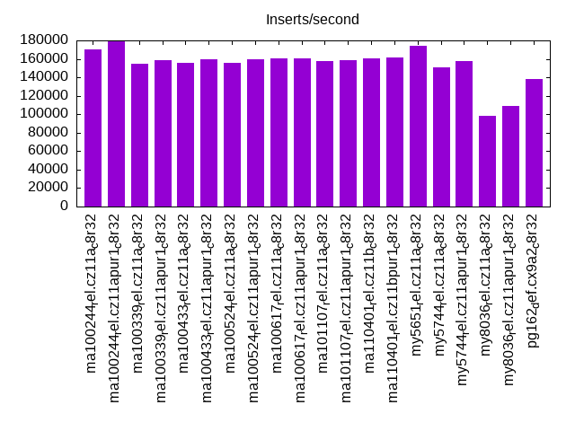
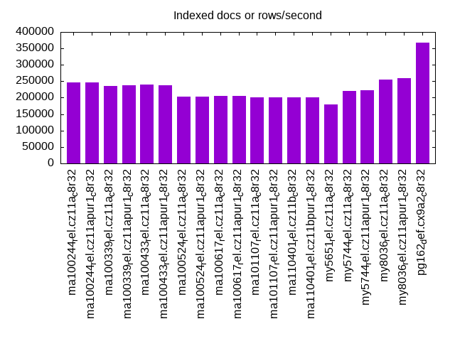
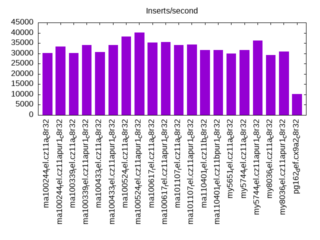
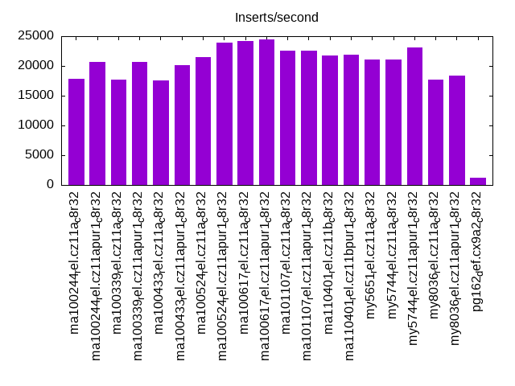
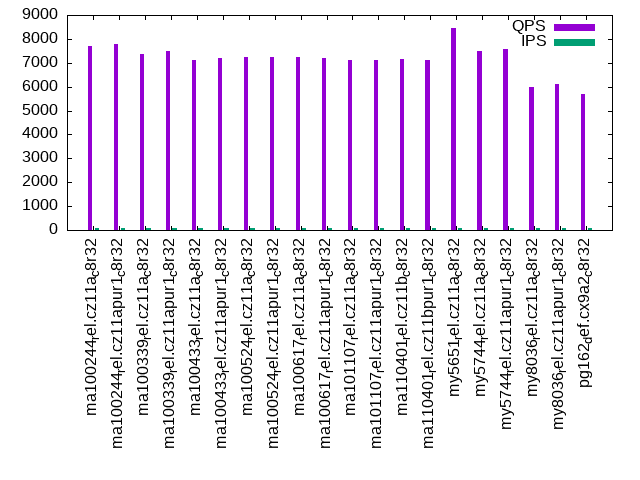
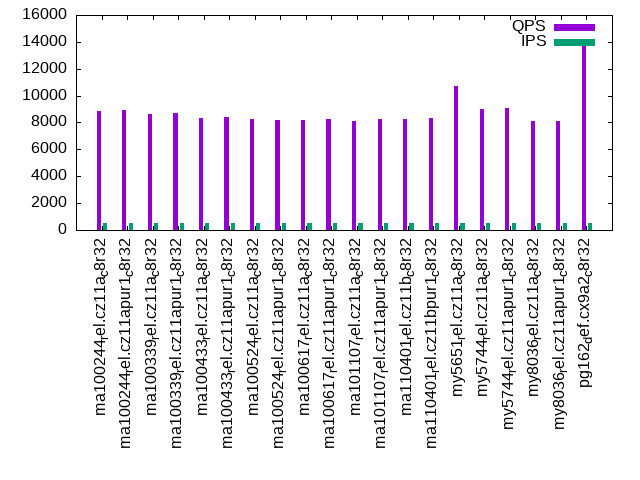
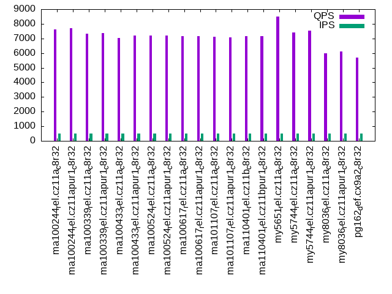
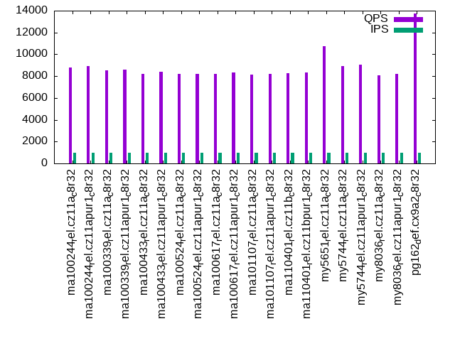
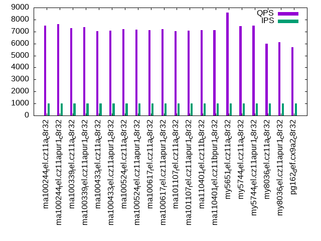

This is a report for the insert benchmark with 50M docs and 1 client(s). It is generated by scripts (bash, awk, sed) and Tufte might not be impressed. An overview of the insert benchmark is here and a short update is here. Below, by DBMS, I mean DBMS+version.config. An example is my8020.c10b40 where my means MySQL, 8020 is version 8.0.20 and c10b40 is the name for the configuration file.
The test server has 8 AMD cores, 32G RAM and an NVMe SSD. It is described here as the ASUS PN53. The benchmark was run with 1 client and there were 1 or 3 connections per client (1 for queries or inserts without rate limits, 1+1 for rate limited inserts+deletes). It uses 1 table. It loads 50M rows per table without secondary indexes, creates 3 secondary indexes per table, then inserts 40m+10m rows per table with a delete per insert to avoid growing the table. It then does 6 read+write tests for 1800s each that do queries as fast as possible with 100,100,500,500,1000,1000 inserts/s and the same for deletes/s per client concurrent with the queries. The database is cached in memory. Clients and the DBMS share one server. The per-database configs are in the per-database subdirectories here.
The tested DBMS are:
The numbers are inserts/s for l.i0, l.i1 and l.i2, indexed docs (or rows) /s for l.x and queries/s for qr100, qp100 thru qr1000, qp1000" The values are the average rate over the entire test for inserts (IPS) and queries (QPS). The range of values for IPS and QPS is split into 3 parts: bottom 25%, middle 50%, top 25%. Values in the bottom 25% have a red background, values in the top 25% have a green background and values in the middle have no color. A gray background is used for values that can be ignored because the DBMS did not sustain the target insert rate. Red backgrounds are not used when the minimum value is within 80% of the max value.
| dbms | l.i0 | l.x | l.i1 | l.i2 | qr100 | qp100 | qr500 | qp500 | qr1000 | qp1000 |
|---|---|---|---|---|---|---|---|---|---|---|
| ma100244_rel.cz11a_c8r32 | 170068 | 247525 | 30052 | 17857 | 8939 | 7689 | 8886 | 7600 | 8816 | 7495 |
| ma100244_rel.cz11apur1_c8r32 | 179856 | 246306 | 33389 | 20618 | 9051 | 7792 | 8943 | 7707 | 8938 | 7611 |
| ma100339_rel.cz11a_c8r32 | 154321 | 235850 | 30257 | 17730 | 8619 | 7382 | 8604 | 7309 | 8508 | 7286 |
| ma100339_rel.cz11apur1_c8r32 | 158228 | 238096 | 34100 | 20704 | 8760 | 7496 | 8716 | 7349 | 8618 | 7377 |
| ma100433_rel.cz11a_c8r32 | 155763 | 239235 | 30558 | 17606 | 8412 | 7109 | 8319 | 7034 | 8216 | 7038 |
| ma100433_rel.cz11apur1_c8r32 | 159744 | 238096 | 34014 | 20161 | 8412 | 7209 | 8420 | 7196 | 8416 | 7056 |
| ma100524_rel.cz11a_c8r32 | 155763 | 203252 | 38204 | 21552 | 8304 | 7234 | 8283 | 7193 | 8234 | 7204 |
| ma100524_rel.cz11apur1_c8r32 | 159744 | 204082 | 40040 | 23981 | 8332 | 7230 | 8175 | 7197 | 8206 | 7168 |
| ma100617_rel.cz11a_c8r32 | 160772 | 204918 | 35180 | 24154 | 8251 | 7244 | 8187 | 7176 | 8210 | 7134 |
| ma100617_rel.cz11apur1_c8r32 | 160772 | 204918 | 35587 | 24510 | 8276 | 7218 | 8246 | 7177 | 8330 | 7205 |
| ma101107_rel.cz11a_c8r32 | 157729 | 201613 | 34100 | 22522 | 8210 | 7125 | 8126 | 7128 | 8156 | 7027 |
| ma101107_rel.cz11apur1_c8r32 | 158228 | 201613 | 34335 | 22573 | 8238 | 7129 | 8296 | 7095 | 8190 | 7094 |
| ma110401_rel.cz11b_c8r32 | 160772 | 200000 | 31521 | 21739 | 8213 | 7173 | 8276 | 7141 | 8238 | 7110 |
| ma110401_rel.cz11bpur1_c8r32 | 161812 | 200000 | 31620 | 21882 | 8315 | 7135 | 8356 | 7149 | 8316 | 7113 |
| my5651_rel.cz11a_c8r32 | 174216 | 179212 | 29895 | 21142 | 10706 | 8446 | 10693 | 8495 | 10766 | 8592 |
| my5744_rel.cz11a_c8r32 | 150602 | 221239 | 31671 | 21142 | 9031 | 7503 | 9036 | 7420 | 8942 | 7433 |
| my5744_rel.cz11apur1_c8r32 | 157233 | 222223 | 36199 | 23095 | 9074 | 7573 | 9056 | 7514 | 9074 | 7508 |
| my8036_rel.cz11a_c8r32 | 98039 | 255102 | 29218 | 17668 | 8079 | 6002 | 8106 | 5985 | 8081 | 6006 |
| my8036_rel.cz11apur1_c8r32 | 108696 | 259068 | 30960 | 18349 | 8207 | 6109 | 8146 | 6099 | 8230 | 6095 |
| pg162_def.cx9a2_c8r32 | 138122 | 367648 | 10325 | 1182 | 15063 | 5712 | 14074 | 5696 | 13754 | 5689 |
This table has relative throughput, throughput for the DBMS relative to the DBMS in the first line, using the absolute throughput from the previous table. Values less than 0.95 have a yellow background. Values greater than 1.05 have a blue background.
| dbms | l.i0 | l.x | l.i1 | l.i2 | qr100 | qp100 | qr500 | qp500 | qr1000 | qp1000 |
|---|---|---|---|---|---|---|---|---|---|---|
| ma100244_rel.cz11a_c8r32 | 1.00 | 1.00 | 1.00 | 1.00 | 1.00 | 1.00 | 1.00 | 1.00 | 1.00 | 1.00 |
| ma100244_rel.cz11apur1_c8r32 | 1.06 | 1.00 | 1.11 | 1.15 | 1.01 | 1.01 | 1.01 | 1.01 | 1.01 | 1.02 |
| ma100339_rel.cz11a_c8r32 | 0.91 | 0.95 | 1.01 | 0.99 | 0.96 | 0.96 | 0.97 | 0.96 | 0.97 | 0.97 |
| ma100339_rel.cz11apur1_c8r32 | 0.93 | 0.96 | 1.13 | 1.16 | 0.98 | 0.97 | 0.98 | 0.97 | 0.98 | 0.98 |
| ma100433_rel.cz11a_c8r32 | 0.92 | 0.97 | 1.02 | 0.99 | 0.94 | 0.92 | 0.94 | 0.93 | 0.93 | 0.94 |
| ma100433_rel.cz11apur1_c8r32 | 0.94 | 0.96 | 1.13 | 1.13 | 0.94 | 0.94 | 0.95 | 0.95 | 0.95 | 0.94 |
| ma100524_rel.cz11a_c8r32 | 0.92 | 0.82 | 1.27 | 1.21 | 0.93 | 0.94 | 0.93 | 0.95 | 0.93 | 0.96 |
| ma100524_rel.cz11apur1_c8r32 | 0.94 | 0.82 | 1.33 | 1.34 | 0.93 | 0.94 | 0.92 | 0.95 | 0.93 | 0.96 |
| ma100617_rel.cz11a_c8r32 | 0.95 | 0.83 | 1.17 | 1.35 | 0.92 | 0.94 | 0.92 | 0.94 | 0.93 | 0.95 |
| ma100617_rel.cz11apur1_c8r32 | 0.95 | 0.83 | 1.18 | 1.37 | 0.93 | 0.94 | 0.93 | 0.94 | 0.94 | 0.96 |
| ma101107_rel.cz11a_c8r32 | 0.93 | 0.81 | 1.13 | 1.26 | 0.92 | 0.93 | 0.91 | 0.94 | 0.93 | 0.94 |
| ma101107_rel.cz11apur1_c8r32 | 0.93 | 0.81 | 1.14 | 1.26 | 0.92 | 0.93 | 0.93 | 0.93 | 0.93 | 0.95 |
| ma110401_rel.cz11b_c8r32 | 0.95 | 0.81 | 1.05 | 1.22 | 0.92 | 0.93 | 0.93 | 0.94 | 0.93 | 0.95 |
| ma110401_rel.cz11bpur1_c8r32 | 0.95 | 0.81 | 1.05 | 1.23 | 0.93 | 0.93 | 0.94 | 0.94 | 0.94 | 0.95 |
| my5651_rel.cz11a_c8r32 | 1.02 | 0.72 | 0.99 | 1.18 | 1.20 | 1.10 | 1.20 | 1.12 | 1.22 | 1.15 |
| my5744_rel.cz11a_c8r32 | 0.89 | 0.89 | 1.05 | 1.18 | 1.01 | 0.98 | 1.02 | 0.98 | 1.01 | 0.99 |
| my5744_rel.cz11apur1_c8r32 | 0.92 | 0.90 | 1.20 | 1.29 | 1.02 | 0.98 | 1.02 | 0.99 | 1.03 | 1.00 |
| my8036_rel.cz11a_c8r32 | 0.58 | 1.03 | 0.97 | 0.99 | 0.90 | 0.78 | 0.91 | 0.79 | 0.92 | 0.80 |
| my8036_rel.cz11apur1_c8r32 | 0.64 | 1.05 | 1.03 | 1.03 | 0.92 | 0.79 | 0.92 | 0.80 | 0.93 | 0.81 |
| pg162_def.cx9a2_c8r32 | 0.81 | 1.49 | 0.34 | 0.07 | 1.69 | 0.74 | 1.58 | 0.75 | 1.56 | 0.76 |
This lists the average rate of inserts/s for the tests that do inserts concurrent with queries. For such tests the query rate is listed in the table above. The read+write tests are setup so that the insert rate should match the target rate every second. Cells that are not at least 95% of the target have a red background to indicate a failure to satisfy the target.
| dbms | qr100.L1 | qp100.L2 | qr500.L3 | qp500.L4 | qr1000.L5 | qp1000.L6 |
|---|---|---|---|---|---|---|
| ma100244_rel.cz11a_c8r32 | 100 | 100 | 499 | 499 | 999 | 999 |
| ma100244_rel.cz11apur1_c8r32 | 100 | 100 | 499 | 499 | 999 | 999 |
| ma100339_rel.cz11a_c8r32 | 100 | 100 | 499 | 499 | 999 | 999 |
| ma100339_rel.cz11apur1_c8r32 | 100 | 100 | 499 | 499 | 999 | 999 |
| ma100433_rel.cz11a_c8r32 | 100 | 100 | 499 | 499 | 999 | 999 |
| ma100433_rel.cz11apur1_c8r32 | 100 | 100 | 499 | 499 | 999 | 999 |
| ma100524_rel.cz11a_c8r32 | 100 | 100 | 499 | 500 | 999 | 999 |
| ma100524_rel.cz11apur1_c8r32 | 100 | 100 | 499 | 499 | 999 | 999 |
| ma100617_rel.cz11a_c8r32 | 100 | 100 | 499 | 499 | 999 | 999 |
| ma100617_rel.cz11apur1_c8r32 | 100 | 100 | 499 | 499 | 999 | 999 |
| ma101107_rel.cz11a_c8r32 | 100 | 100 | 499 | 499 | 999 | 999 |
| ma101107_rel.cz11apur1_c8r32 | 100 | 100 | 499 | 499 | 999 | 999 |
| ma110401_rel.cz11b_c8r32 | 100 | 100 | 499 | 499 | 999 | 999 |
| ma110401_rel.cz11bpur1_c8r32 | 100 | 100 | 499 | 499 | 999 | 999 |
| my5651_rel.cz11a_c8r32 | 100 | 100 | 499 | 499 | 999 | 999 |
| my5744_rel.cz11a_c8r32 | 100 | 100 | 499 | 499 | 999 | 999 |
| my5744_rel.cz11apur1_c8r32 | 100 | 100 | 499 | 499 | 999 | 999 |
| my8036_rel.cz11a_c8r32 | 100 | 100 | 499 | 499 | 999 | 999 |
| my8036_rel.cz11apur1_c8r32 | 100 | 100 | 499 | 499 | 999 | 999 |
| pg162_def.cx9a2_c8r32 | 100 | 100 | 499 | 499 | 998 | 999 |
| target | 100 | 100 | 500 | 500 | 1000 | 1000 |
l.i0: load without secondary indexes. Graphs for performance per 1-second interval are here.
Average throughput:
Insert response time histogram: each cell has the percentage of responses that take <= the time in the header and max is the max response time in seconds. For the max column values in the top 25% of the range have a red background and in the bottom 25% of the range have a green background. The red background is not used when the min value is within 80% of the max value.
| dbms | 256us | 1ms | 4ms | 16ms | 64ms | 256ms | 1s | 4s | 16s | gt | max |
|---|---|---|---|---|---|---|---|---|---|---|---|
| ma100244_rel.cz11a_c8r32 | 99.457 | 0.214 | 0.284 | 0.040 | 0.004 | 0.129 | |||||
| ma100244_rel.cz11apur1_c8r32 | 99.599 | 0.155 | 0.232 | 0.010 | 0.004 | 0.132 | |||||
| ma100339_rel.cz11a_c8r32 | 99.338 | 0.293 | 0.341 | 0.024 | 0.004 | 0.133 | |||||
| ma100339_rel.cz11apur1_c8r32 | 99.381 | 0.253 | 0.343 | 0.019 | 0.004 | 0.135 | |||||
| ma100433_rel.cz11a_c8r32 | 99.364 | 0.268 | 0.356 | 0.007 | 0.004 | 0.136 | |||||
| ma100433_rel.cz11apur1_c8r32 | 99.537 | 0.192 | 0.255 | 0.012 | 0.004 | 0.126 | |||||
| ma100524_rel.cz11a_c8r32 | 99.276 | 0.263 | 0.396 | 0.061 | 0.004 | 0.128 | |||||
| ma100524_rel.cz11apur1_c8r32 | 99.334 | 0.224 | 0.379 | 0.058 | 0.004 | 0.124 | |||||
| ma100617_rel.cz11a_c8r32 | 99.511 | 0.238 | 0.234 | 0.012 | 0.004 | 0.163 | |||||
| ma100617_rel.cz11apur1_c8r32 | 99.582 | 0.169 | 0.240 | 0.005 | 0.004 | 0.174 | |||||
| ma101107_rel.cz11a_c8r32 | 99.499 | 0.253 | 0.231 | 0.013 | 0.005 | 0.169 | |||||
| ma101107_rel.cz11apur1_c8r32 | 99.585 | 0.167 | 0.235 | 0.008 | 0.005 | 0.164 | |||||
| ma110401_rel.cz11b_c8r32 | 99.516 | 0.239 | 0.228 | 0.013 | 0.005 | 0.179 | |||||
| ma110401_rel.cz11bpur1_c8r32 | 99.590 | 0.164 | 0.223 | 0.018 | 0.005 | 0.197 | |||||
| my5651_rel.cz11a_c8r32 | 99.693 | 0.242 | 0.053 | 0.010 | 0.001 | 0.149 | |||||
| my5744_rel.cz11a_c8r32 | 99.547 | 0.191 | 0.129 | 0.132 | 0.001 | 0.084 | |||||
| my5744_rel.cz11apur1_c8r32 | 99.560 | 0.177 | 0.132 | 0.130 | 0.001 | 0.144 | |||||
| my8036_rel.cz11a_c8r32 | 86.376 | 13.218 | 0.271 | 0.133 | 0.002 | 0.085 | |||||
| my8036_rel.cz11apur1_c8r32 | 99.249 | 0.367 | 0.252 | 0.131 | 0.002 | 0.079 | |||||
| pg162_def.cx9a2_c8r32 | 99.923 | 0.077 | 0.002 |
Performance metrics for the DBMS listed above. Some are normalized by throughput, others are not. Legend for results is here.
ips qps rps rmbps wps wmbps rpq rkbpq wpi wkbpi csps cpups cspq cpupq dbgb1 dbgb2 rss maxop p50 p99 tag 170068 0 0 0.0 1204.9 63.8 0.000 0.000 0.007 0.384 19250 21.7 0.113 10 3.3 34.1 4.1 0.129 171909 142746 ma100244_rel.cz11a_c8r32 179856 0 0 0.0 919.9 57.7 0.000 0.000 0.005 0.328 19421 21.8 0.108 10 3.3 34.1 4.3 0.132 182200 155329 ma100244_rel.cz11apur1_c8r32 154321 0 0 0.0 1188.0 63.3 0.000 0.000 0.008 0.420 51212 28.8 0.332 15 3.3 34.1 4.1 0.133 156229 129161 ma100339_rel.cz11a_c8r32 158228 0 0 0.0 1203.5 64.4 0.000 0.000 0.008 0.417 21149 23.2 0.134 12 3.3 34.1 4.2 0.135 159924 134854 ma100339_rel.cz11apur1_c8r32 155763 0 0 0.0 1182.4 63.1 0.000 0.000 0.008 0.415 52026 28.9 0.334 15 3.3 34.1 NA 0.136 157732 134057 ma100433_rel.cz11a_c8r32 159744 0 0 0.0 858.2 55.0 0.000 0.000 0.005 0.353 20832 23.8 0.130 12 3.3 34.1 NA 0.126 161875 138448 ma100433_rel.cz11apur1_c8r32 155763 0 0 0.0 1286.9 51.3 0.000 0.000 0.008 0.337 68431 25.6 0.439 13 3.3 34.1 3.9 0.128 157777 136154 ma100524_rel.cz11a_c8r32 159744 0 0 0.0 1308.3 52.4 0.000 0.000 0.008 0.336 23894 23.2 0.150 12 3.3 34.1 4.0 0.124 161376 139251 ma100524_rel.cz11apur1_c8r32 160772 0 0 0.0 613.9 39.3 0.000 0.000 0.004 0.250 20365 23.7 0.127 12 3.3 34.1 3.7 0.163 162722 140448 ma100617_rel.cz11a_c8r32 160772 0 0 0.0 618.3 39.3 0.000 0.000 0.004 0.250 19662 23.7 0.122 12 3.3 34.1 3.7 0.174 161723 139546 ma100617_rel.cz11apur1_c8r32 157729 0 0 0.0 642.6 40.3 0.000 0.000 0.004 0.262 19905 23.2 0.126 12 3.3 34.1 3.7 0.169 159478 137349 ma101107_rel.cz11a_c8r32 158228 0 0 0.0 643.2 40.4 0.000 0.000 0.004 0.261 19214 23.3 0.121 12 3.3 34.1 3.7 0.164 160124 138850 ma101107_rel.cz11apur1_c8r32 160772 0 0 0.0 661.3 41.1 0.000 0.000 0.004 0.262 21003 23.8 0.131 12 3.3 34.1 3.7 0.179 162421 140149 ma110401_rel.cz11b_c8r32 161812 0 0 0.0 656.8 40.6 0.000 0.000 0.004 0.257 20447 23.8 0.126 12 3.3 34.1 3.8 0.197 162921 139548 ma110401_rel.cz11bpur1_c8r32 174216 0 1526 6.0 749.0 51.5 0.009 0.035 0.004 0.303 20690 21.5 0.119 10 3.3 33.8 4.7 0.149 174800 149339 my5651_rel.cz11a_c8r32 150602 0 0 0.0 665.7 44.9 0.000 0.000 0.004 0.305 15565 19.9 0.103 11 3.3 33.8 5.3 0.084 150334 136751 my5744_rel.cz11a_c8r32 157233 0 0 0.0 695.9 47.0 0.000 0.000 0.004 0.306 16251 20.7 0.103 11 3.3 33.8 5.1 0.144 158029 144243 my5744_rel.cz11apur1_c8r32 98039 0 0 0.0 519.2 31.8 0.000 0.000 0.005 0.333 11433 17.8 0.117 15 3.3 33.9 5.5 0.085 98490 88902 my8036_rel.cz11a_c8r32 108696 0 0 0.0 576.2 35.3 0.000 0.000 0.005 0.333 12490 17.8 0.115 13 3.3 33.9 5.4 0.079 109179 100591 my8036_rel.cz11apur1_c8r32 138122 0 0 0.0 518.5 59.2 0.000 0.000 0.004 0.439 17172 21.6 0.124 13 4.8 13.0 0.4 0.002 138125 136687 pg162_def.cx9a2_c8r32
l.x: create secondary indexes.
Average throughput:
Performance metrics for the DBMS listed above. Some are normalized by throughput, others are not. Legend for results is here.
ips qps rps rmbps wps wmbps rpq rkbpq wpi wkbpi csps cpups cspq cpupq dbgb1 dbgb2 rss maxop p50 p99 tag 247525 0 0 0.0 2504.7 223.5 0.000 0.000 0.010 0.925 10873 12.6 0.044 4 7.6 38.4 6.9 0.001 NA NA ma100244_rel.cz11a_c8r32 246306 0 0 0.0 2813.3 232.0 0.000 0.000 0.011 0.965 11456 12.6 0.047 4 7.6 38.4 6.9 0.001 NA NA ma100244_rel.cz11apur1_c8r32 235850 0 0 0.0 2393.0 213.5 0.000 0.000 0.010 0.927 10485 12.3 0.044 4 7.6 38.4 8.0 0.001 NA NA ma100339_rel.cz11a_c8r32 238096 0 0 0.0 2398.7 214.1 0.000 0.000 0.010 0.921 10738 12.2 0.045 4 7.6 38.4 8.1 0.001 NA NA ma100339_rel.cz11apur1_c8r32 239235 0 0 0.0 2436.7 217.3 0.000 0.000 0.010 0.930 10331 12.5 0.043 4 7.5 38.3 NA 0.001 NA NA ma100433_rel.cz11a_c8r32 238096 0 0 0.0 2663.7 223.2 0.000 0.000 0.011 0.960 10648 12.5 0.045 4 7.5 38.3 NA 0.001 NA NA ma100433_rel.cz11apur1_c8r32 203252 0 0 0.0 1320.6 163.7 0.000 0.000 0.006 0.825 431 11.8 0.002 5 7.5 38.3 7.4 0.001 NA NA ma100524_rel.cz11a_c8r32 204082 0 0 0.0 1335.1 165.6 0.000 0.000 0.007 0.831 439 11.9 0.002 5 7.5 38.3 7.5 0.002 NA NA ma100524_rel.cz11apur1_c8r32 204918 0 0 0.0 2445.3 183.0 0.000 0.000 0.012 0.915 5602 12.2 0.027 5 7.5 38.3 7.3 0.001 NA NA ma100617_rel.cz11a_c8r32 204918 0 0 0.0 2412.8 182.5 0.000 0.000 0.012 0.912 5418 12.2 0.026 5 7.5 38.3 7.2 0.001 NA NA ma100617_rel.cz11apur1_c8r32 201613 0 0 0.0 2332.0 178.0 0.000 0.000 0.012 0.904 5208 12.1 0.026 5 7.5 38.3 6.9 0.001 NA NA ma101107_rel.cz11a_c8r32 201613 0 0 0.0 2335.6 178.4 0.000 0.000 0.012 0.906 5195 12.1 0.026 5 7.5 38.3 6.9 0.002 NA NA ma101107_rel.cz11apur1_c8r32 200000 0 0 0.0 2288.2 175.7 0.000 0.000 0.011 0.899 5101 12.1 0.026 5 7.5 38.3 6.7 0.001 NA NA ma110401_rel.cz11b_c8r32 200000 0 0 0.0 2299.1 176.1 0.000 0.000 0.011 0.901 5108 12.0 0.026 5 7.5 38.3 6.7 0.001 NA NA ma110401_rel.cz11bpur1_c8r32 179212 0 11 0.0 2467.1 190.4 0.000 0.000 0.014 1.088 3869 11.8 0.022 5 7.0 37.5 8.4 0.002 NA NA my5651_rel.cz11a_c8r32 221239 0 0 0.0 3427.0 220.9 0.000 0.000 0.015 1.023 13512 12.1 0.061 4 7.6 38.1 7.8 0.001 NA NA my5744_rel.cz11a_c8r32 222223 0 0 0.0 3517.9 222.8 0.000 0.000 0.016 1.027 13764 12.1 0.062 4 7.6 38.1 7.8 0.001 NA NA my5744_rel.cz11apur1_c8r32 255102 0 1295 82.0 5643.8 304.4 0.005 0.329 0.022 1.222 18932 40.5 0.074 13 7.6 38.1 8.9 0.002 NA NA my8036_rel.cz11a_c8r32 259068 0 1330 84.2 5274.5 304.2 0.005 0.333 0.020 1.202 18413 40.9 0.071 13 7.6 38.1 9.1 0.002 NA NA my8036_rel.cz11apur1_c8r32 367648 0 0 0.0 935.2 113.9 0.000 0.000 0.003 0.317 519 11.7 0.001 3 9.6 22.2 5.0 0.002 NA NA pg162_def.cx9a2_c8r32
l.i1: continue load after secondary indexes created with 50 inserts per transaction. Graphs for performance per 1-second interval are here.
Average throughput:
Insert response time histogram: each cell has the percentage of responses that take <= the time in the header and max is the max response time in seconds. For the max column values in the top 25% of the range have a red background and in the bottom 25% of the range have a green background. The red background is not used when the min value is within 80% of the max value.
| dbms | 256us | 1ms | 4ms | 16ms | 64ms | 256ms | 1s | 4s | 16s | gt | max |
|---|---|---|---|---|---|---|---|---|---|---|---|
| ma100244_rel.cz11a_c8r32 | 4.459 | 90.344 | 5.167 | 0.028 | 0.002 | 0.073 | |||||
| ma100244_rel.cz11apur1_c8r32 | 4.255 | 90.510 | 5.213 | 0.021 | nonzero | 0.065 | |||||
| ma100339_rel.cz11a_c8r32 | 2.347 | 91.664 | 5.962 | 0.027 | 0.001 | 0.074 | |||||
| ma100339_rel.cz11apur1_c8r32 | 4.779 | 90.446 | 4.753 | 0.022 | 0.001 | 0.071 | |||||
| ma100433_rel.cz11a_c8r32 | 1.449 | 92.920 | 5.603 | 0.028 | 0.001 | 0.153 | |||||
| ma100433_rel.cz11apur1_c8r32 | 2.102 | 93.400 | 4.478 | 0.019 | nonzero | 0.154 | |||||
| ma100524_rel.cz11a_c8r32 | 5.800 | 93.003 | 1.138 | 0.055 | 0.001 | 0.003 | 0.390 | ||||
| ma100524_rel.cz11apur1_c8r32 | 14.986 | 83.860 | 1.094 | 0.052 | 0.002 | 0.006 | 0.394 | ||||
| ma100617_rel.cz11a_c8r32 | 6.307 | 92.539 | 1.102 | 0.051 | 0.001 | nonzero | 0.313 | ||||
| ma100617_rel.cz11apur1_c8r32 | 6.969 | 91.890 | 1.096 | 0.044 | 0.001 | nonzero | 0.282 | ||||
| ma101107_rel.cz11a_c8r32 | 2.443 | 96.356 | 1.163 | 0.036 | 0.001 | nonzero | 0.412 | ||||
| ma101107_rel.cz11apur1_c8r32 | 2.921 | 95.920 | 1.122 | 0.036 | 0.001 | 0.236 | |||||
| ma110401_rel.cz11b_c8r32 | 5.181 | 92.208 | 2.312 | 0.297 | 0.003 | 0.215 | |||||
| ma110401_rel.cz11bpur1_c8r32 | 5.355 | 92.048 | 2.305 | 0.289 | 0.003 | 0.229 | |||||
| my5651_rel.cz11a_c8r32 | 3.650 | 93.735 | 2.424 | 0.190 | 0.001 | 0.083 | |||||
| my5744_rel.cz11a_c8r32 | 0.356 | 97.451 | 2.139 | 0.053 | 0.001 | 0.093 | |||||
| my5744_rel.cz11apur1_c8r32 | 0.433 | 97.428 | 2.084 | 0.054 | 0.001 | 0.091 | |||||
| my8036_rel.cz11a_c8r32 | 97.822 | 2.051 | 0.126 | 0.001 | 0.074 | ||||||
| my8036_rel.cz11apur1_c8r32 | 97.843 | 2.025 | 0.131 | 0.001 | 0.097 | ||||||
| pg162_def.cx9a2_c8r32 | 3.438 | 96.561 | 0.001 | nonzero | 0.016 |
Delete response time histogram: each cell has the percentage of responses that take <= the time in the header and max is the max response time in seconds. For the max column values in the top 25% of the range have a red background and in the bottom 25% of the range have a green background. The red background is not used when the min value is within 80% of the max value.
| dbms | 256us | 1ms | 4ms | 16ms | 64ms | 256ms | 1s | 4s | 16s | gt | max |
|---|---|---|---|---|---|---|---|---|---|---|---|
| ma100244_rel.cz11a_c8r32 | 61.624 | 33.965 | 4.399 | 0.010 | 0.001 | 0.073 | |||||
| ma100244_rel.cz11apur1_c8r32 | 87.584 | 7.729 | 4.676 | 0.010 | 0.064 | ||||||
| ma100339_rel.cz11a_c8r32 | 77.893 | 17.161 | 4.938 | 0.008 | nonzero | 0.072 | |||||
| ma100339_rel.cz11apur1_c8r32 | 90.697 | 5.143 | 4.149 | 0.011 | 0.058 | ||||||
| ma100433_rel.cz11a_c8r32 | 77.762 | 17.601 | 4.627 | 0.010 | nonzero | 0.068 | |||||
| ma100433_rel.cz11apur1_c8r32 | 90.570 | 5.508 | 3.913 | 0.008 | nonzero | 0.068 | |||||
| ma100524_rel.cz11a_c8r32 | 94.793 | 4.504 | 0.675 | 0.023 | 0.001 | 0.002 | 0.389 | ||||
| ma100524_rel.cz11apur1_c8r32 | 96.998 | 2.264 | 0.711 | 0.018 | 0.003 | 0.006 | 0.261 | ||||
| ma100617_rel.cz11a_c8r32 | 59.198 | 39.974 | 0.792 | 0.036 | 0.001 | 0.096 | |||||
| ma100617_rel.cz11apur1_c8r32 | 59.517 | 39.655 | 0.795 | 0.033 | 0.001 | 0.106 | |||||
| ma101107_rel.cz11a_c8r32 | 48.607 | 50.515 | 0.852 | 0.026 | 0.001 | 0.119 | |||||
| ma101107_rel.cz11apur1_c8r32 | 49.686 | 49.472 | 0.814 | 0.026 | 0.001 | 0.234 | |||||
| ma110401_rel.cz11b_c8r32 | 54.102 | 43.651 | 2.004 | 0.241 | 0.003 | 0.213 | |||||
| ma110401_rel.cz11bpur1_c8r32 | 54.844 | 42.913 | 1.995 | 0.245 | 0.003 | 0.228 | |||||
| my5651_rel.cz11a_c8r32 | 65.418 | 33.131 | 1.300 | 0.150 | 0.001 | 0.083 | |||||
| my5744_rel.cz11a_c8r32 | 57.763 | 40.682 | 1.542 | 0.012 | 0.001 | 0.081 | |||||
| my5744_rel.cz11apur1_c8r32 | 94.026 | 4.227 | 1.734 | 0.013 | 0.001 | 0.091 | |||||
| my8036_rel.cz11a_c8r32 | 30.858 | 67.601 | 1.514 | 0.027 | 0.001 | 0.091 | |||||
| my8036_rel.cz11apur1_c8r32 | 53.232 | 45.212 | 1.524 | 0.031 | nonzero | 0.088 | |||||
| pg162_def.cx9a2_c8r32 | 12.673 | 37.171 | 50.156 | nonzero | 0.021 |
Performance metrics for the DBMS listed above. Some are normalized by throughput, others are not. Legend for results is here.
ips qps rps rmbps wps wmbps rpq rkbpq wpi wkbpi csps cpups cspq cpupq dbgb1 dbgb2 rss maxop p50 p99 tag 30052 0 0 0.0 10766.7 339.2 0.000 0.000 0.358 11.558 57360 45.8 1.909 122 10.0 40.9 11.1 0.073 30679 10389 ma100244_rel.cz11a_c8r32 33389 0 0 0.0 11928.2 376.1 0.000 0.000 0.357 11.534 51548 33.8 1.544 81 10.1 41.0 11.1 0.065 33714 12386 ma100244_rel.cz11apur1_c8r32 30257 0 0 0.0 12433.8 386.2 0.000 0.000 0.411 13.071 70780 43.8 2.339 116 10.1 40.9 11.1 0.074 30767 9640 ma100339_rel.cz11a_c8r32 34100 0 0 0.0 10707.3 344.1 0.000 0.000 0.314 10.332 47604 33.8 1.396 79 10.2 41.0 11.2 0.071 34812 10988 ma100339_rel.cz11apur1_c8r32 30558 0 0 0.0 11873.2 370.9 0.000 0.000 0.389 12.430 69762 43.7 2.283 114 10.1 40.9 NA 0.153 31217 8990 ma100433_rel.cz11a_c8r32 34014 0 0 0.0 10205.6 329.8 0.000 0.000 0.300 9.928 46738 33.4 1.374 79 10.2 41.0 NA 0.154 34912 10988 ma100433_rel.cz11apur1_c8r32 38204 0 0 0.0 9187.8 289.4 0.000 0.000 0.240 7.758 67976 36.6 1.779 77 10.8 42.7 11.1 0.390 40856 7745 ma100524_rel.cz11a_c8r32 40040 0 0 0.0 8838.0 279.5 0.000 0.000 0.221 7.149 56644 35.8 1.415 72 11.0 43.0 11.4 0.394 43054 200 ma100524_rel.cz11apur1_c8r32 35180 0 0 0.0 5442.5 184.0 0.000 0.000 0.155 5.355 91184 30.8 2.592 70 10.1 40.9 10.0 0.313 37720 11243 ma100617_rel.cz11a_c8r32 35587 0 0 0.0 5491.8 185.7 0.000 0.000 0.154 5.342 92213 30.9 2.591 69 10.1 40.9 10.0 0.282 38222 11387 ma100617_rel.cz11apur1_c8r32 34100 0 874 3.4 5322.9 179.9 0.026 0.103 0.156 5.401 88296 29.8 2.589 70 10.1 40.9 10.0 0.412 36361 11742 ma101107_rel.cz11a_c8r32 34335 0 878 3.4 5352.3 180.8 0.026 0.102 0.156 5.393 88977 29.9 2.591 70 10.1 40.9 10.0 0.236 36722 11038 ma101107_rel.cz11apur1_c8r32 31521 0 840 3.3 4950.3 165.6 0.027 0.107 0.157 5.379 80042 27.3 2.539 69 10.1 40.9 10.0 0.215 31616 12986 ma110401_rel.cz11b_c8r32 31620 0 833 3.3 4978.8 166.5 0.026 0.105 0.157 5.392 80700 27.3 2.552 69 10.1 40.9 10.0 0.229 32065 12686 ma110401_rel.cz11bpur1_c8r32 29895 0 812 3.2 3251.1 131.3 0.027 0.109 0.109 4.499 36545 40.8 1.222 109 10.0 40.5 11.5 0.083 32165 7945 my5651_rel.cz11a_c8r32 31671 0 0 0.0 3598.5 143.7 0.000 0.000 0.114 4.647 27021 45.6 0.853 115 10.1 40.7 12.0 0.093 33463 8545 my5744_rel.cz11a_c8r32 36199 0 0 0.0 4130.5 164.0 0.000 0.000 0.114 4.640 26667 34.3 0.737 76 10.6 41.2 12.6 0.091 38020 10348 my5744_rel.cz11apur1_c8r32 29218 0 166 2.6 4754.1 176.3 0.006 0.091 0.163 6.179 48213 35.3 1.650 97 10.4 41.3 12.4 0.074 31266 3897 my8036_rel.cz11a_c8r32 30960 0 175 2.7 4996.7 184.5 0.006 0.091 0.161 6.104 27393 34.3 0.885 89 10.6 41.6 12.7 0.097 33264 3946 my8036_rel.cz11apur1_c8r32 10325 0 0 0.0 157.0 17.0 0.000 0.000 0.015 1.687 5357 19.7 0.519 153 12.2 44.7 9.9 0.016 6942 3796 pg162_def.cx9a2_c8r32
l.i2: continue load after secondary indexes created with 5 inserts per transaction. Graphs for performance per 1-second interval are here.
Average throughput:
Insert response time histogram: each cell has the percentage of responses that take <= the time in the header and max is the max response time in seconds. For the max column values in the top 25% of the range have a red background and in the bottom 25% of the range have a green background. The red background is not used when the min value is within 80% of the max value.
| dbms | 256us | 1ms | 4ms | 16ms | 64ms | 256ms | 1s | 4s | 16s | gt | max |
|---|---|---|---|---|---|---|---|---|---|---|---|
| ma100244_rel.cz11a_c8r32 | 88.654 | 10.341 | 0.142 | 0.861 | 0.002 | nonzero | 0.074 | ||||
| ma100244_rel.cz11apur1_c8r32 | 94.843 | 4.336 | 0.115 | 0.706 | 0.001 | nonzero | 0.069 | ||||
| ma100339_rel.cz11a_c8r32 | 87.125 | 11.865 | 0.147 | 0.862 | 0.001 | nonzero | 0.073 | ||||
| ma100339_rel.cz11apur1_c8r32 | 94.515 | 4.743 | 0.096 | 0.645 | 0.001 | 0.064 | |||||
| ma100433_rel.cz11a_c8r32 | 86.412 | 12.584 | 0.147 | 0.856 | 0.001 | nonzero | 0.070 | ||||
| ma100433_rel.cz11apur1_c8r32 | 93.971 | 5.245 | 0.100 | 0.683 | 0.001 | nonzero | 0.065 | ||||
| ma100524_rel.cz11a_c8r32 | 92.552 | 7.274 | 0.144 | 0.029 | 0.002 | nonzero | 0.064 | ||||
| ma100524_rel.cz11apur1_c8r32 | 96.585 | 3.250 | 0.135 | 0.028 | 0.002 | 0.053 | |||||
| ma100617_rel.cz11a_c8r32 | 95.162 | 4.776 | 0.049 | 0.013 | 0.001 | 0.060 | |||||
| ma100617_rel.cz11apur1_c8r32 | 95.847 | 4.089 | 0.050 | 0.013 | 0.001 | 0.053 | |||||
| ma101107_rel.cz11a_c8r32 | 88.712 | 11.211 | 0.065 | 0.012 | nonzero | 0.059 | |||||
| ma101107_rel.cz11apur1_c8r32 | 88.990 | 10.935 | 0.064 | 0.011 | nonzero | 0.059 | |||||
| ma110401_rel.cz11b_c8r32 | 90.142 | 9.685 | 0.058 | 0.112 | 0.003 | nonzero | 0.068 | ||||
| ma110401_rel.cz11bpur1_c8r32 | 90.945 | 8.879 | 0.057 | 0.116 | 0.003 | 0.061 | |||||
| my5651_rel.cz11a_c8r32 | 84.632 | 15.215 | 0.019 | 0.130 | 0.005 | nonzero | 0.071 | ||||
| my5744_rel.cz11a_c8r32 | 85.724 | 14.078 | 0.055 | 0.140 | 0.003 | nonzero | 0.088 | ||||
| my5744_rel.cz11apur1_c8r32 | 96.579 | 3.270 | 0.008 | 0.139 | 0.003 | nonzero | 0.100 | ||||
| my8036_rel.cz11a_c8r32 | 69.276 | 30.566 | 0.015 | 0.140 | 0.001 | nonzero | 0.101 | ||||
| my8036_rel.cz11apur1_c8r32 | 77.509 | 22.345 | 0.008 | 0.137 | 0.001 | 0.060 | |||||
| pg162_def.cx9a2_c8r32 | 20.822 | 79.176 | 0.001 | nonzero | 0.005 |
Delete response time histogram: each cell has the percentage of responses that take <= the time in the header and max is the max response time in seconds. For the max column values in the top 25% of the range have a red background and in the bottom 25% of the range have a green background. The red background is not used when the min value is within 80% of the max value.
| dbms | 256us | 1ms | 4ms | 16ms | 64ms | 256ms | 1s | 4s | 16s | gt | max |
|---|---|---|---|---|---|---|---|---|---|---|---|
| ma100244_rel.cz11a_c8r32 | 91.943 | 7.066 | 0.137 | 0.853 | 0.001 | nonzero | 0.074 | ||||
| ma100244_rel.cz11apur1_c8r32 | 96.509 | 2.683 | 0.108 | 0.700 | 0.001 | nonzero | 0.069 | ||||
| ma100339_rel.cz11a_c8r32 | 91.847 | 7.150 | 0.148 | 0.855 | 0.001 | nonzero | 0.073 | ||||
| ma100339_rel.cz11apur1_c8r32 | 96.526 | 2.740 | 0.093 | 0.640 | 0.001 | 0.064 | |||||
| ma100433_rel.cz11a_c8r32 | 91.751 | 7.248 | 0.149 | 0.851 | 0.001 | nonzero | 0.071 | ||||
| ma100433_rel.cz11apur1_c8r32 | 96.351 | 2.875 | 0.096 | 0.676 | 0.001 | nonzero | 0.065 | ||||
| ma100524_rel.cz11a_c8r32 | 95.773 | 4.075 | 0.127 | 0.023 | 0.001 | nonzero | 0.064 | ||||
| ma100524_rel.cz11apur1_c8r32 | 98.915 | 0.952 | 0.110 | 0.022 | 0.002 | 0.053 | |||||
| ma100617_rel.cz11a_c8r32 | 97.759 | 2.186 | 0.043 | 0.011 | 0.001 | 0.060 | |||||
| ma100617_rel.cz11apur1_c8r32 | 98.224 | 1.722 | 0.042 | 0.012 | 0.001 | 0.053 | |||||
| ma101107_rel.cz11a_c8r32 | 95.313 | 4.616 | 0.059 | 0.011 | nonzero | 0.059 | |||||
| ma101107_rel.cz11apur1_c8r32 | 95.656 | 4.276 | 0.058 | 0.010 | nonzero | 0.059 | |||||
| ma110401_rel.cz11b_c8r32 | 94.122 | 5.724 | 0.051 | 0.100 | 0.003 | nonzero | 0.068 | ||||
| ma110401_rel.cz11bpur1_c8r32 | 94.776 | 5.068 | 0.051 | 0.103 | 0.003 | 0.061 | |||||
| my5651_rel.cz11a_c8r32 | 96.033 | 3.815 | 0.018 | 0.130 | 0.005 | nonzero | 0.071 | ||||
| my5744_rel.cz11a_c8r32 | 89.587 | 10.268 | 0.010 | 0.135 | 0.001 | nonzero | 0.088 | ||||
| my5744_rel.cz11apur1_c8r32 | 98.974 | 0.885 | 0.006 | 0.135 | 0.001 | nonzero | 0.100 | ||||
| my8036_rel.cz11a_c8r32 | 80.631 | 19.223 | 0.010 | 0.134 | 0.001 | nonzero | 0.101 | ||||
| my8036_rel.cz11apur1_c8r32 | 92.298 | 7.564 | 0.005 | 0.132 | 0.001 | 0.053 | |||||
| pg162_def.cx9a2_c8r32 | 1.124 | 14.476 | 22.372 | 62.028 | 0.015 |
Performance metrics for the DBMS listed above. Some are normalized by throughput, others are not. Legend for results is here.
ips qps rps rmbps wps wmbps rpq rkbpq wpi wkbpi csps cpups cspq cpupq dbgb1 dbgb2 rss maxop p50 p99 tag 17857 0 0 0.0 14055.9 408.5 0.000 0.000 0.787 23.423 199484 44.4 11.171 199 10.3 41.1 11.4 0.074 17796 15319 ma100244_rel.cz11a_c8r32 20618 0 0 0.0 13080.7 384.5 0.000 0.000 0.634 19.095 131207 34.5 6.364 134 10.4 41.2 11.4 0.069 20474 17127 ma100244_rel.cz11apur1_c8r32 17730 0 0 0.0 14479.1 420.8 0.000 0.000 0.817 24.301 237744 45.3 13.409 204 10.3 41.1 11.3 0.073 17556 15334 ma100339_rel.cz11a_c8r32 20704 0 0 0.0 12494.7 369.1 0.000 0.000 0.603 18.256 129252 34.9 6.243 135 10.5 41.3 11.5 0.064 20688 17356 ma100339_rel.cz11apur1_c8r32 17606 0 0 0.0 14451.4 419.1 0.000 0.000 0.821 24.377 240681 45.2 13.671 205 10.3 41.1 NA 0.070 17526 14919 ma100433_rel.cz11a_c8r32 20161 0 0 0.0 13104.4 384.6 0.000 0.000 0.650 19.536 130640 34.2 6.480 136 10.4 41.2 NA 0.065 19990 16792 ma100433_rel.cz11apur1_c8r32 21552 0 0 0.0 10936.6 317.9 0.000 0.000 0.507 15.106 337340 46.4 15.653 172 11.0 43.0 11.1 0.064 21602 20298 ma100524_rel.cz11a_c8r32 23981 0 0 0.0 10912.1 318.7 0.000 0.000 0.455 13.607 155327 38.0 6.477 127 11.2 43.3 11.4 0.053 24077 22751 ma100524_rel.cz11apur1_c8r32 24154 0 0 0.0 2699.5 93.5 0.000 0.000 0.112 3.965 117801 34.6 4.877 115 10.3 41.2 10.2 0.060 24233 23035 ma100617_rel.cz11a_c8r32 24510 0 0 0.0 2765.7 95.9 0.000 0.000 0.113 4.006 118905 34.6 4.851 113 10.3 41.2 10.2 0.053 24574 23285 ma100617_rel.cz11apur1_c8r32 22522 0 3192 12.5 2614.7 90.7 0.142 0.567 0.116 4.124 114543 33.2 5.086 118 10.3 41.2 10.2 0.059 22488 21487 ma101107_rel.cz11a_c8r32 22573 0 3214 12.6 2628.4 91.2 0.142 0.569 0.116 4.137 114634 33.0 5.078 117 10.3 41.2 10.2 0.059 22546 21367 ma101107_rel.cz11apur1_c8r32 21739 0 3080 12.0 2563.0 87.9 0.142 0.567 0.118 4.143 110890 32.0 5.101 118 10.3 41.1 10.2 0.068 22557 18266 ma110401_rel.cz11b_c8r32 21882 0 3106 12.1 2556.0 87.9 0.142 0.568 0.117 4.113 111089 31.9 5.077 117 10.3 41.1 10.2 0.061 22631 18795 ma110401_rel.cz11bpur1_c8r32 21142 0 3789 14.8 2189.2 82.1 0.179 0.717 0.104 3.976 174469 41.6 8.252 157 10.3 40.8 11.8 0.071 21217 19869 my5651_rel.cz11a_c8r32 21142 0 0 0.0 2163.2 82.3 0.000 0.000 0.102 3.986 85403 40.2 4.040 152 10.4 40.9 12.2 0.088 21211 20314 my5744_rel.cz11a_c8r32 23095 0 0 0.0 2430.3 91.5 0.000 0.000 0.105 4.058 91896 34.4 3.979 119 10.9 41.4 12.9 0.100 23220 21077 my5744_rel.cz11apur1_c8r32 17668 0 28 0.4 2478.4 86.3 0.002 0.025 0.140 5.002 86356 34.2 4.888 155 10.6 41.5 12.9 0.101 17731 16767 my8036_rel.cz11a_c8r32 18349 0 28 0.4 2630.8 91.0 0.002 0.025 0.143 5.077 75403 33.4 4.109 146 10.9 41.8 13.2 0.060 18370 17456 my8036_rel.cz11apur1_c8r32 1182 0 0 0.0 62.1 5.4 0.000 0.000 0.053 4.699 5620 15.6 4.756 1056 12.7 42.0 0.6 0.005 849 634 pg162_def.cx9a2_c8r32
qr100.L1: range queries with 100 insert/s per client. Graphs for performance per 1-second interval are here.
Average throughput:
Query response time histogram: each cell has the percentage of responses that take <= the time in the header and max is the max response time in seconds. For max values in the top 25% of the range have a red background and in the bottom 25% of the range have a green background. The red background is not used when the min value is within 80% of the max value.
| dbms | 256us | 1ms | 4ms | 16ms | 64ms | 256ms | 1s | 4s | 16s | gt | max |
|---|---|---|---|---|---|---|---|---|---|---|---|
| ma100244_rel.cz11a_c8r32 | 99.946 | 0.054 | nonzero | nonzero | nonzero | 0.016 | |||||
| ma100244_rel.cz11apur1_c8r32 | 99.994 | 0.005 | nonzero | nonzero | 0.014 | ||||||
| ma100339_rel.cz11a_c8r32 | 99.946 | 0.053 | nonzero | nonzero | nonzero | 0.021 | |||||
| ma100339_rel.cz11apur1_c8r32 | 99.992 | 0.007 | nonzero | nonzero | 0.015 | ||||||
| ma100433_rel.cz11a_c8r32 | 99.951 | 0.049 | nonzero | nonzero | nonzero | 0.018 | |||||
| ma100433_rel.cz11apur1_c8r32 | 99.990 | 0.010 | nonzero | nonzero | nonzero | 0.022 | |||||
| ma100524_rel.cz11a_c8r32 | 99.973 | 0.027 | nonzero | 0.001 | |||||||
| ma100524_rel.cz11apur1_c8r32 | 99.996 | 0.004 | nonzero | 0.001 | |||||||
| ma100617_rel.cz11a_c8r32 | 99.991 | 0.009 | nonzero | 0.002 | |||||||
| ma100617_rel.cz11apur1_c8r32 | 99.996 | 0.004 | 0.001 | ||||||||
| ma101107_rel.cz11a_c8r32 | 99.994 | 0.006 | nonzero | 0.002 | |||||||
| ma101107_rel.cz11apur1_c8r32 | 99.995 | 0.005 | 0.001 | ||||||||
| ma110401_rel.cz11b_c8r32 | 99.994 | 0.006 | nonzero | 0.002 | |||||||
| ma110401_rel.cz11bpur1_c8r32 | 99.995 | 0.005 | 0.001 | ||||||||
| my5651_rel.cz11a_c8r32 | 99.937 | 0.061 | nonzero | 0.001 | nonzero | 0.024 | |||||
| my5744_rel.cz11a_c8r32 | 99.964 | 0.036 | nonzero | nonzero | 0.010 | ||||||
| my5744_rel.cz11apur1_c8r32 | 99.997 | 0.003 | nonzero | nonzero | 0.010 | ||||||
| my8036_rel.cz11a_c8r32 | 99.935 | 0.065 | nonzero | 0.001 | |||||||
| my8036_rel.cz11apur1_c8r32 | 99.979 | 0.021 | nonzero | 0.002 | |||||||
| pg162_def.cx9a2_c8r32 | 99.988 | 0.012 | nonzero | 0.001 |
Insert response time histogram: each cell has the percentage of responses that take <= the time in the header and max is the max response time in seconds. For max values in the top 25% of the range have a red background and in the bottom 25% of the range have a green background. The red background is not used when the min value is within 80% of the max value.
| dbms | 256us | 1ms | 4ms | 16ms | 64ms | 256ms | 1s | 4s | 16s | gt | max |
|---|---|---|---|---|---|---|---|---|---|---|---|
| ma100244_rel.cz11a_c8r32 | 97.056 | 2.361 | 0.583 | 0.038 | |||||||
| ma100244_rel.cz11apur1_c8r32 | 0.889 | 96.028 | 2.500 | 0.583 | 0.030 | ||||||
| ma100339_rel.cz11a_c8r32 | 96.833 | 2.333 | 0.833 | 0.036 | |||||||
| ma100339_rel.cz11apur1_c8r32 | 0.528 | 96.556 | 2.278 | 0.639 | 0.036 | ||||||
| ma100433_rel.cz11a_c8r32 | 97.194 | 2.250 | 0.556 | 0.036 | |||||||
| ma100433_rel.cz11apur1_c8r32 | 0.583 | 96.333 | 2.528 | 0.556 | 0.037 | ||||||
| ma100524_rel.cz11a_c8r32 | 0.528 | 99.472 | 0.002 | ||||||||
| ma100524_rel.cz11apur1_c8r32 | 5.056 | 94.944 | 0.002 | ||||||||
| ma100617_rel.cz11a_c8r32 | 10.806 | 89.194 | 0.002 | ||||||||
| ma100617_rel.cz11apur1_c8r32 | 19.667 | 80.333 | 0.002 | ||||||||
| ma101107_rel.cz11a_c8r32 | 0.472 | 52.944 | 46.583 | 0.011 | |||||||
| ma101107_rel.cz11apur1_c8r32 | 0.611 | 52.750 | 46.639 | 0.011 | |||||||
| ma110401_rel.cz11b_c8r32 | 0.944 | 52.472 | 46.583 | 0.011 | |||||||
| ma110401_rel.cz11bpur1_c8r32 | 1.139 | 52.306 | 46.556 | 0.011 | |||||||
| my5651_rel.cz11a_c8r32 | 0.306 | 91.250 | 6.139 | 2.306 | 0.059 | ||||||
| my5744_rel.cz11a_c8r32 | 0.028 | 99.556 | 0.417 | 0.013 | |||||||
| my5744_rel.cz11apur1_c8r32 | 0.917 | 98.889 | 0.194 | 0.011 | |||||||
| my8036_rel.cz11a_c8r32 | 99.194 | 0.778 | 0.028 | 0.024 | |||||||
| my8036_rel.cz11apur1_c8r32 | 99.917 | 0.083 | 0.010 | ||||||||
| pg162_def.cx9a2_c8r32 | 99.944 | 0.056 | 0.006 |
Delete response time histogram: each cell has the percentage of responses that take <= the time in the header and max is the max response time in seconds. For max values in the top 25% of the range have a red background and in the bottom 25% of the range have a green background. The red background is not used when the min value is within 80% of the max value.
| dbms | 256us | 1ms | 4ms | 16ms | 64ms | 256ms | 1s | 4s | 16s | gt | max |
|---|---|---|---|---|---|---|---|---|---|---|---|
| ma100244_rel.cz11a_c8r32 | 7.167 | 90.333 | 2.056 | 0.444 | 0.031 | ||||||
| ma100244_rel.cz11apur1_c8r32 | 39.250 | 57.972 | 2.528 | 0.250 | 0.021 | ||||||
| ma100339_rel.cz11a_c8r32 | 14.861 | 82.361 | 2.306 | 0.472 | 0.030 | ||||||
| ma100339_rel.cz11apur1_c8r32 | 52.167 | 45.278 | 2.361 | 0.194 | 0.022 | ||||||
| ma100433_rel.cz11a_c8r32 | 18.778 | 78.667 | 2.278 | 0.278 | 0.024 | ||||||
| ma100433_rel.cz11apur1_c8r32 | 51.389 | 46.083 | 2.222 | 0.306 | 0.033 | ||||||
| ma100524_rel.cz11a_c8r32 | 44.278 | 55.722 | 0.002 | ||||||||
| ma100524_rel.cz11apur1_c8r32 | 63.583 | 36.417 | 0.002 | ||||||||
| ma100617_rel.cz11a_c8r32 | 51.667 | 48.333 | 0.002 | ||||||||
| ma100617_rel.cz11apur1_c8r32 | 52.722 | 47.278 | 0.002 | ||||||||
| ma101107_rel.cz11a_c8r32 | 4.083 | 49.361 | 46.556 | 0.011 | |||||||
| ma101107_rel.cz11apur1_c8r32 | 3.417 | 49.944 | 46.639 | 0.011 | |||||||
| ma110401_rel.cz11b_c8r32 | 3.861 | 49.556 | 46.583 | 0.011 | |||||||
| ma110401_rel.cz11bpur1_c8r32 | 3.889 | 49.556 | 46.556 | 0.011 | |||||||
| my5651_rel.cz11a_c8r32 | 16.111 | 75.222 | 6.556 | 2.111 | 0.038 | ||||||
| my5744_rel.cz11a_c8r32 | 40.500 | 59.194 | 0.306 | 0.012 | |||||||
| my5744_rel.cz11apur1_c8r32 | 53.250 | 46.583 | 0.167 | 0.008 | |||||||
| my8036_rel.cz11a_c8r32 | 17.917 | 81.361 | 0.667 | 0.056 | 0.023 | ||||||
| my8036_rel.cz11apur1_c8r32 | 48.444 | 51.500 | 0.056 | 0.007 | |||||||
| pg162_def.cx9a2_c8r32 | 41.611 | 58.389 | 0.002 |
Performance metrics for the DBMS listed above. Some are normalized by throughput, others are not. Legend for results is here.
ips qps rps rmbps wps wmbps rpq rkbpq wpi wkbpi csps cpups cspq cpupq dbgb1 dbgb2 rss maxop p50 p99 tag 100 8939 0 0.0 861.6 23.9 0.000 0.000 8.633 244.866 37842 12.9 4.233 115 10.3 41.1 11.4 0.016 8938 8838 ma100244_rel.cz11a_c8r32 100 9051 0 0.0 876.0 24.3 0.000 0.000 8.778 248.995 37402 12.9 4.133 114 10.4 41.2 11.4 0.014 9046 8966 ma100244_rel.cz11apur1_c8r32 100 8619 0 0.0 869.6 24.1 0.000 0.000 8.713 247.158 36703 12.9 4.258 120 10.3 41.1 11.3 0.021 8615 8503 ma100339_rel.cz11a_c8r32 100 8760 0 0.0 866.8 24.0 0.000 0.000 8.686 246.337 36297 12.7 4.143 116 10.5 41.3 11.5 0.015 8762 8647 ma100339_rel.cz11apur1_c8r32 100 8412 0 0.0 865.8 24.0 0.000 0.000 8.675 246.055 35998 12.9 4.279 123 10.3 41.1 NA 0.018 8410 8326 ma100433_rel.cz11a_c8r32 100 8412 0 0.0 865.5 24.0 0.000 0.000 8.672 245.928 35020 12.7 4.163 121 10.4 41.2 NA 0.022 8409 8343 ma100433_rel.cz11apur1_c8r32 100 8304 0 0.0 2.5 0.1 0.000 0.000 0.025 1.213 33066 12.5 3.982 120 11.0 43.0 11.1 0.001 8311 8215 ma100524_rel.cz11a_c8r32 100 8332 0 0.0 2.4 0.1 0.000 0.000 0.024 1.172 32186 12.6 3.863 121 11.2 43.3 11.4 0.001 8343 8215 ma100524_rel.cz11apur1_c8r32 100 8251 0 0.0 2.4 0.1 0.000 0.000 0.024 1.187 31687 12.6 3.840 122 10.3 41.2 10.3 0.002 8250 8183 ma100617_rel.cz11a_c8r32 100 8276 0 0.0 2.4 0.1 0.000 0.000 0.024 1.186 31769 12.6 3.838 122 10.3 41.2 10.2 0.001 8279 8231 ma100617_rel.cz11apur1_c8r32 100 8210 4 0.0 2.3 0.1 0.000 0.002 0.024 1.192 31547 12.7 3.842 124 10.3 41.2 10.2 0.002 8215 8151 ma101107_rel.cz11a_c8r32 100 8238 4 0.0 2.4 0.1 0.000 0.002 0.024 1.192 31658 12.6 3.843 122 10.3 41.2 10.2 0.001 8247 8183 ma101107_rel.cz11apur1_c8r32 100 8213 4 0.0 2.4 0.1 0.000 0.002 0.024 1.203 31561 12.6 3.843 123 10.3 41.1 10.2 0.002 8215 8119 ma110401_rel.cz11b_c8r32 100 8315 3 0.0 2.3 0.1 0.000 0.002 0.024 1.181 31944 12.6 3.842 121 10.3 41.1 10.2 0.001 8313 8231 ma110401_rel.cz11bpur1_c8r32 100 10706 0 0.0 257.4 7.2 0.000 0.000 2.579 73.364 41770 12.7 3.902 95 10.3 40.8 11.8 0.024 10721 10451 my5651_rel.cz11a_c8r32 100 9031 0 0.0 151.9 4.2 0.000 0.000 1.522 42.686 35111 12.6 3.888 112 10.4 40.9 12.2 0.010 9030 8922 my5744_rel.cz11a_c8r32 100 9074 0 0.0 196.1 5.4 0.000 0.000 1.965 55.259 35416 12.6 3.903 111 10.9 41.4 12.9 0.010 9078 9001 my5744_rel.cz11apur1_c8r32 100 8079 0 0.0 209.5 5.3 0.000 0.000 2.099 53.982 31960 12.5 3.956 124 10.6 41.5 12.9 0.001 8087 7991 my8036_rel.cz11a_c8r32 100 8207 0 0.0 181.5 4.6 0.000 0.000 1.818 46.833 32270 12.5 3.932 122 10.9 41.8 13.2 0.002 8215 8151 my8036_rel.cz11apur1_c8r32 100 15063 0 0.0 16.0 0.9 0.000 0.000 0.160 9.648 57601 12.7 3.824 67 12.7 37.9 0.3 0.001 15084 14447 pg162_def.cx9a2_c8r32
qp100.L2: point queries with 100 insert/s per client. Graphs for performance per 1-second interval are here.
Average throughput:
Query response time histogram: each cell has the percentage of responses that take <= the time in the header and max is the max response time in seconds. For max values in the top 25% of the range have a red background and in the bottom 25% of the range have a green background. The red background is not used when the min value is within 80% of the max value.
| dbms | 256us | 1ms | 4ms | 16ms | 64ms | 256ms | 1s | 4s | 16s | gt | max |
|---|---|---|---|---|---|---|---|---|---|---|---|
| ma100244_rel.cz11a_c8r32 | 99.835 | 0.165 | nonzero | nonzero | 0.015 | ||||||
| ma100244_rel.cz11apur1_c8r32 | 99.988 | 0.012 | nonzero | nonzero | 0.008 | ||||||
| ma100339_rel.cz11a_c8r32 | 99.849 | 0.150 | nonzero | nonzero | 0.016 | ||||||
| ma100339_rel.cz11apur1_c8r32 | 99.983 | 0.017 | nonzero | nonzero | 0.015 | ||||||
| ma100433_rel.cz11a_c8r32 | 99.846 | 0.154 | nonzero | nonzero | 0.015 | ||||||
| ma100433_rel.cz11apur1_c8r32 | 99.976 | 0.024 | nonzero | nonzero | nonzero | 0.023 | |||||
| ma100524_rel.cz11a_c8r32 | 99.964 | 0.036 | nonzero | 0.001 | |||||||
| ma100524_rel.cz11apur1_c8r32 | 99.989 | 0.011 | nonzero | 0.001 | |||||||
| ma100617_rel.cz11a_c8r32 | 99.973 | 0.027 | nonzero | 0.002 | |||||||
| ma100617_rel.cz11apur1_c8r32 | 99.989 | 0.011 | nonzero | 0.002 | |||||||
| ma101107_rel.cz11a_c8r32 | 99.981 | 0.018 | nonzero | 0.002 | |||||||
| ma101107_rel.cz11apur1_c8r32 | 99.985 | 0.015 | 0.001 | ||||||||
| ma110401_rel.cz11b_c8r32 | 99.983 | 0.017 | nonzero | 0.002 | |||||||
| ma110401_rel.cz11bpur1_c8r32 | 99.988 | 0.012 | 0.001 | ||||||||
| my5651_rel.cz11a_c8r32 | 99.889 | 0.111 | nonzero | 0.001 | |||||||
| my5744_rel.cz11a_c8r32 | 99.839 | 0.161 | nonzero | 0.001 | |||||||
| my5744_rel.cz11apur1_c8r32 | 99.985 | 0.015 | nonzero | 0.003 | |||||||
| my8036_rel.cz11a_c8r32 | 99.618 | 0.381 | nonzero | 0.002 | |||||||
| my8036_rel.cz11apur1_c8r32 | 99.855 | 0.145 | nonzero | 0.002 | |||||||
| pg162_def.cx9a2_c8r32 | 95.880 | 4.120 | nonzero | 0.002 |
Insert response time histogram: each cell has the percentage of responses that take <= the time in the header and max is the max response time in seconds. For max values in the top 25% of the range have a red background and in the bottom 25% of the range have a green background. The red background is not used when the min value is within 80% of the max value.
| dbms | 256us | 1ms | 4ms | 16ms | 64ms | 256ms | 1s | 4s | 16s | gt | max |
|---|---|---|---|---|---|---|---|---|---|---|---|
| ma100244_rel.cz11a_c8r32 | 96.361 | 2.694 | 0.944 | 0.031 | |||||||
| ma100244_rel.cz11apur1_c8r32 | 96.694 | 2.694 | 0.611 | 0.032 | |||||||
| ma100339_rel.cz11a_c8r32 | 96.722 | 2.528 | 0.750 | 0.042 | |||||||
| ma100339_rel.cz11apur1_c8r32 | 96.611 | 2.833 | 0.556 | 0.047 | |||||||
| ma100433_rel.cz11a_c8r32 | 96.500 | 2.556 | 0.944 | 0.031 | |||||||
| ma100433_rel.cz11apur1_c8r32 | 96.667 | 2.722 | 0.611 | 0.035 | |||||||
| ma100524_rel.cz11a_c8r32 | 100.000 | 0.002 | |||||||||
| ma100524_rel.cz11apur1_c8r32 | 0.028 | 99.972 | 0.002 | ||||||||
| ma100617_rel.cz11a_c8r32 | 0.444 | 99.528 | 0.028 | 0.011 | |||||||
| ma100617_rel.cz11apur1_c8r32 | 0.917 | 99.083 | 0.002 | ||||||||
| ma101107_rel.cz11a_c8r32 | 53.083 | 46.917 | 0.011 | ||||||||
| ma101107_rel.cz11apur1_c8r32 | 0.028 | 53.333 | 46.639 | 0.011 | |||||||
| ma110401_rel.cz11b_c8r32 | 0.083 | 53.389 | 46.528 | 0.014 | |||||||
| ma110401_rel.cz11bpur1_c8r32 | 0.167 | 53.278 | 46.556 | 0.015 | |||||||
| my5651_rel.cz11a_c8r32 | 99.278 | 0.528 | 0.194 | 0.026 | |||||||
| my5744_rel.cz11a_c8r32 | 99.528 | 0.472 | 0.013 | ||||||||
| my5744_rel.cz11apur1_c8r32 | 99.694 | 0.306 | 0.010 | ||||||||
| my8036_rel.cz11a_c8r32 | 99.583 | 0.417 | 0.012 | ||||||||
| my8036_rel.cz11apur1_c8r32 | 99.833 | 0.167 | 0.011 | ||||||||
| pg162_def.cx9a2_c8r32 | 99.944 | 0.056 | 0.006 |
Delete response time histogram: each cell has the percentage of responses that take <= the time in the header and max is the max response time in seconds. For max values in the top 25% of the range have a red background and in the bottom 25% of the range have a green background. The red background is not used when the min value is within 80% of the max value.
| dbms | 256us | 1ms | 4ms | 16ms | 64ms | 256ms | 1s | 4s | 16s | gt | max |
|---|---|---|---|---|---|---|---|---|---|---|---|
| ma100244_rel.cz11a_c8r32 | 96.861 | 2.694 | 0.444 | 0.037 | |||||||
| ma100244_rel.cz11apur1_c8r32 | 6.389 | 90.556 | 2.833 | 0.222 | 0.025 | ||||||
| ma100339_rel.cz11a_c8r32 | 1.306 | 95.639 | 2.583 | 0.472 | 0.032 | ||||||
| ma100339_rel.cz11apur1_c8r32 | 27.472 | 69.639 | 2.667 | 0.222 | 0.030 | ||||||
| ma100433_rel.cz11a_c8r32 | 0.472 | 96.444 | 2.722 | 0.361 | 0.026 | ||||||
| ma100433_rel.cz11apur1_c8r32 | 23.639 | 73.639 | 2.389 | 0.333 | 0.025 | ||||||
| ma100524_rel.cz11a_c8r32 | 20.278 | 79.722 | 0.002 | ||||||||
| ma100524_rel.cz11apur1_c8r32 | 33.111 | 66.889 | 0.002 | ||||||||
| ma100617_rel.cz11a_c8r32 | 45.444 | 54.556 | 0.002 | ||||||||
| ma100617_rel.cz11apur1_c8r32 | 46.639 | 53.361 | 0.002 | ||||||||
| ma101107_rel.cz11a_c8r32 | 2.389 | 50.694 | 46.917 | 0.011 | |||||||
| ma101107_rel.cz11apur1_c8r32 | 2.444 | 50.917 | 46.639 | 0.011 | |||||||
| ma110401_rel.cz11b_c8r32 | 2.639 | 50.833 | 46.528 | 0.014 | |||||||
| ma110401_rel.cz11bpur1_c8r32 | 2.806 | 50.667 | 46.528 | 0.011 | |||||||
| my5651_rel.cz11a_c8r32 | 3.528 | 95.778 | 0.528 | 0.167 | 0.025 | ||||||
| my5744_rel.cz11a_c8r32 | 18.028 | 81.528 | 0.444 | 0.011 | |||||||
| my5744_rel.cz11apur1_c8r32 | 49.000 | 50.778 | 0.222 | 0.012 | |||||||
| my8036_rel.cz11a_c8r32 | 0.083 | 99.500 | 0.417 | 0.012 | |||||||
| my8036_rel.cz11apur1_c8r32 | 0.861 | 99.028 | 0.111 | 0.007 | |||||||
| pg162_def.cx9a2_c8r32 | 99.972 | 0.028 | 0.008 |
Performance metrics for the DBMS listed above. Some are normalized by throughput, others are not. Legend for results is here.
ips qps rps rmbps wps wmbps rpq rkbpq wpi wkbpi csps cpups cspq cpupq dbgb1 dbgb2 rss maxop p50 p99 tag 100 7689 0 0.0 854.7 23.7 0.000 0.000 8.564 242.886 34393 13.1 4.473 136 10.3 41.1 11.4 0.015 7704 7160 ma100244_rel.cz11a_c8r32 100 7792 0 0.0 856.6 23.7 0.000 0.000 8.583 243.435 33974 12.8 4.360 131 10.4 41.2 11.4 0.008 7799 7576 ma100244_rel.cz11apur1_c8r32 100 7382 0 0.0 855.7 23.7 0.000 0.000 8.574 243.169 33266 13.1 4.506 142 10.3 41.1 11.3 0.016 7399 7064 ma100339_rel.cz11a_c8r32 100 7496 0 0.0 854.3 23.7 0.000 0.000 8.560 242.752 32749 12.9 4.369 138 10.5 41.3 11.5 0.015 7496 7320 ma100339_rel.cz11apur1_c8r32 100 7109 0 0.0 856.6 23.7 0.000 0.000 8.583 243.433 32281 13.1 4.541 147 10.3 41.1 NA 0.015 7115 6777 ma100433_rel.cz11a_c8r32 100 7209 0 0.0 854.2 23.7 0.000 0.000 8.559 242.720 31707 13.2 4.398 146 10.4 41.2 NA 0.023 7208 7017 ma100433_rel.cz11apur1_c8r32 100 7234 0 0.0 2.5 0.1 0.000 0.000 0.025 1.176 30322 12.9 4.191 143 11.0 43.0 11.1 0.001 7240 7032 ma100524_rel.cz11a_c8r32 100 7230 0 0.0 2.4 0.1 0.000 0.000 0.024 1.154 29314 13.0 4.054 144 11.2 43.3 11.4 0.001 7240 7019 ma100524_rel.cz11apur1_c8r32 100 7244 0 0.0 21.1 0.6 0.000 0.000 0.212 6.481 29272 12.9 4.041 142 10.3 41.2 10.3 0.002 7243 7080 ma100617_rel.cz11a_c8r32 100 7218 0 0.0 16.5 0.5 0.000 0.000 0.165 5.165 29160 12.9 4.040 143 10.3 41.2 10.2 0.002 7224 7032 ma100617_rel.cz11apur1_c8r32 100 7125 3 0.0 21.1 0.6 0.000 0.002 0.211 6.491 28848 13.2 4.049 148 10.3 41.2 10.2 0.002 7128 6936 ma101107_rel.cz11a_c8r32 100 7129 3 0.0 8.6 0.3 0.000 0.002 0.086 2.944 28770 13.1 4.035 147 10.3 41.2 10.2 0.001 7128 7019 ma101107_rel.cz11apur1_c8r32 100 7173 3 0.0 16.3 0.5 0.000 0.002 0.163 5.067 28995 13.0 4.042 145 10.3 41.1 10.2 0.002 7176 6968 ma110401_rel.cz11b_c8r32 100 7135 3 0.0 15.1 0.5 0.000 0.002 0.151 4.722 28821 13.1 4.040 147 10.3 41.1 10.2 0.001 7144 6952 ma110401_rel.cz11bpur1_c8r32 100 8446 0 0.0 2.4 0.1 0.000 0.000 0.024 1.220 33831 12.9 4.005 122 10.3 40.8 11.8 0.001 8422 7704 my5651_rel.cz11a_c8r32 100 7503 0 0.0 45.4 1.2 0.000 0.000 0.455 12.382 30301 12.7 4.038 135 10.4 40.9 12.2 0.001 7527 6920 my5744_rel.cz11a_c8r32 100 7573 0 0.0 61.9 1.7 0.000 0.000 0.620 16.994 30667 12.6 4.049 133 10.9 41.4 12.9 0.003 7584 7384 my5744_rel.cz11apur1_c8r32 100 6002 0 0.0 54.6 1.4 0.000 0.000 0.547 14.289 24572 13.1 4.094 175 10.6 41.5 12.9 0.002 6009 5722 my8036_rel.cz11a_c8r32 100 6109 0 0.0 53.8 1.4 0.000 0.000 0.539 14.211 24889 13.1 4.074 172 10.9 41.8 13.2 0.002 6110 5961 my8036_rel.cz11apur1_c8r32 100 5712 0 0.0 87.5 2.0 0.000 0.000 0.876 20.062 23206 13.5 4.062 189 12.7 36.5 0.3 0.002 5709 5608 pg162_def.cx9a2_c8r32
qr500.L3: range queries with 500 insert/s per client. Graphs for performance per 1-second interval are here.
Average throughput:
Query response time histogram: each cell has the percentage of responses that take <= the time in the header and max is the max response time in seconds. For max values in the top 25% of the range have a red background and in the bottom 25% of the range have a green background. The red background is not used when the min value is within 80% of the max value.
| dbms | 256us | 1ms | 4ms | 16ms | 64ms | 256ms | 1s | 4s | 16s | gt | max |
|---|---|---|---|---|---|---|---|---|---|---|---|
| ma100244_rel.cz11a_c8r32 | 99.924 | 0.074 | 0.001 | 0.002 | nonzero | 0.020 | |||||
| ma100244_rel.cz11apur1_c8r32 | 99.985 | 0.013 | nonzero | 0.001 | nonzero | 0.022 | |||||
| ma100339_rel.cz11a_c8r32 | 99.928 | 0.070 | 0.001 | 0.002 | nonzero | 0.023 | |||||
| ma100339_rel.cz11apur1_c8r32 | 99.979 | 0.019 | nonzero | 0.002 | nonzero | 0.025 | |||||
| ma100433_rel.cz11a_c8r32 | 99.930 | 0.067 | 0.001 | 0.002 | nonzero | 0.026 | |||||
| ma100433_rel.cz11apur1_c8r32 | 99.976 | 0.022 | nonzero | 0.001 | nonzero | 0.017 | |||||
| ma100524_rel.cz11a_c8r32 | 99.973 | 0.026 | nonzero | 0.002 | |||||||
| ma100524_rel.cz11apur1_c8r32 | 99.989 | 0.011 | nonzero | 0.002 | |||||||
| ma100617_rel.cz11a_c8r32 | 99.983 | 0.017 | nonzero | nonzero | 0.005 | ||||||
| ma100617_rel.cz11apur1_c8r32 | 99.991 | 0.009 | nonzero | 0.002 | |||||||
| ma101107_rel.cz11a_c8r32 | 99.984 | 0.016 | nonzero | nonzero | 0.004 | ||||||
| ma101107_rel.cz11apur1_c8r32 | 99.989 | 0.011 | nonzero | nonzero | 0.005 | ||||||
| ma110401_rel.cz11b_c8r32 | 99.987 | 0.013 | nonzero | nonzero | 0.009 | ||||||
| ma110401_rel.cz11bpur1_c8r32 | 99.989 | 0.011 | nonzero | nonzero | 0.009 | ||||||
| my5651_rel.cz11a_c8r32 | 99.946 | 0.053 | nonzero | nonzero | 0.010 | ||||||
| my5744_rel.cz11a_c8r32 | 99.952 | 0.048 | nonzero | 0.004 | |||||||
| my5744_rel.cz11apur1_c8r32 | 99.994 | 0.006 | nonzero | 0.002 | |||||||
| my8036_rel.cz11a_c8r32 | 99.916 | 0.084 | nonzero | 0.002 | |||||||
| my8036_rel.cz11apur1_c8r32 | 99.975 | 0.025 | nonzero | 0.002 | |||||||
| pg162_def.cx9a2_c8r32 | 99.978 | 0.021 | nonzero | 0.003 |
Insert response time histogram: each cell has the percentage of responses that take <= the time in the header and max is the max response time in seconds. For max values in the top 25% of the range have a red background and in the bottom 25% of the range have a green background. The red background is not used when the min value is within 80% of the max value.
| dbms | 256us | 1ms | 4ms | 16ms | 64ms | 256ms | 1s | 4s | 16s | gt | max |
|---|---|---|---|---|---|---|---|---|---|---|---|
| ma100244_rel.cz11a_c8r32 | 8.328 | 84.061 | 6.400 | 1.211 | 0.037 | ||||||
| ma100244_rel.cz11apur1_c8r32 | 11.800 | 80.778 | 6.822 | 0.600 | 0.038 | ||||||
| ma100339_rel.cz11a_c8r32 | 9.850 | 82.617 | 6.611 | 0.922 | 0.041 | ||||||
| ma100339_rel.cz11apur1_c8r32 | 7.456 | 84.572 | 7.194 | 0.778 | 0.038 | ||||||
| ma100433_rel.cz11a_c8r32 | 8.744 | 83.733 | 6.383 | 1.139 | 0.045 | ||||||
| ma100433_rel.cz11apur1_c8r32 | 8.800 | 83.833 | 6.761 | 0.606 | 0.043 | ||||||
| ma100524_rel.cz11a_c8r32 | 15.561 | 84.439 | 0.002 | ||||||||
| ma100524_rel.cz11apur1_c8r32 | 15.561 | 84.439 | 0.002 | ||||||||
| ma100617_rel.cz11a_c8r32 | 46.878 | 53.117 | 0.006 | 0.005 | |||||||
| ma100617_rel.cz11apur1_c8r32 | 51.744 | 48.256 | 0.002 | ||||||||
| ma101107_rel.cz11a_c8r32 | 11.956 | 78.694 | 9.350 | 0.011 | |||||||
| ma101107_rel.cz11apur1_c8r32 | 17.539 | 73.150 | 9.311 | 0.011 | |||||||
| ma110401_rel.cz11b_c8r32 | 23.078 | 67.650 | 9.272 | 0.011 | |||||||
| ma110401_rel.cz11bpur1_c8r32 | 23.611 | 67.039 | 9.350 | 0.011 | |||||||
| my5651_rel.cz11a_c8r32 | 13.600 | 83.883 | 2.394 | 0.122 | 0.022 | ||||||
| my5744_rel.cz11a_c8r32 | 1.217 | 98.544 | 0.239 | 0.013 | |||||||
| my5744_rel.cz11apur1_c8r32 | 5.694 | 93.989 | 0.317 | 0.013 | |||||||
| my8036_rel.cz11a_c8r32 | 99.817 | 0.183 | 0.015 | ||||||||
| my8036_rel.cz11apur1_c8r32 | 99.856 | 0.133 | 0.011 | 0.023 | |||||||
| pg162_def.cx9a2_c8r32 | 0.411 | 99.578 | 0.011 | 0.006 |
Delete response time histogram: each cell has the percentage of responses that take <= the time in the header and max is the max response time in seconds. For max values in the top 25% of the range have a red background and in the bottom 25% of the range have a green background. The red background is not used when the min value is within 80% of the max value.
| dbms | 256us | 1ms | 4ms | 16ms | 64ms | 256ms | 1s | 4s | 16s | gt | max |
|---|---|---|---|---|---|---|---|---|---|---|---|
| ma100244_rel.cz11a_c8r32 | 31.944 | 60.817 | 6.356 | 0.883 | 0.031 | ||||||
| ma100244_rel.cz11apur1_c8r32 | 70.817 | 22.339 | 6.467 | 0.378 | 0.030 | ||||||
| ma100339_rel.cz11a_c8r32 | 53.494 | 39.328 | 6.472 | 0.706 | 0.036 | ||||||
| ma100339_rel.cz11apur1_c8r32 | 79.917 | 12.778 | 6.761 | 0.544 | 0.029 | ||||||
| ma100433_rel.cz11a_c8r32 | 54.128 | 38.683 | 6.600 | 0.589 | 0.039 | ||||||
| ma100433_rel.cz11apur1_c8r32 | 80.278 | 12.856 | 6.500 | 0.367 | 0.044 | ||||||
| ma100524_rel.cz11a_c8r32 | 87.361 | 12.639 | 0.002 | ||||||||
| ma100524_rel.cz11apur1_c8r32 | 89.417 | 10.583 | 0.002 | ||||||||
| ma100617_rel.cz11a_c8r32 | 88.761 | 11.233 | 0.006 | 0.005 | |||||||
| ma100617_rel.cz11apur1_c8r32 | 88.672 | 11.328 | 0.002 | ||||||||
| ma101107_rel.cz11a_c8r32 | 78.511 | 12.139 | 9.350 | 0.011 | |||||||
| ma101107_rel.cz11apur1_c8r32 | 79.056 | 11.633 | 9.311 | 0.011 | |||||||
| ma110401_rel.cz11b_c8r32 | 78.950 | 11.783 | 9.267 | 0.011 | |||||||
| ma110401_rel.cz11bpur1_c8r32 | 78.917 | 11.744 | 9.339 | 0.011 | |||||||
| my5651_rel.cz11a_c8r32 | 34.933 | 62.567 | 2.383 | 0.117 | 0.021 | ||||||
| my5744_rel.cz11a_c8r32 | 85.106 | 14.678 | 0.217 | 0.013 | |||||||
| my5744_rel.cz11apur1_c8r32 | 86.489 | 13.239 | 0.272 | 0.011 | |||||||
| my8036_rel.cz11a_c8r32 | 37.844 | 62.033 | 0.122 | 0.014 | |||||||
| my8036_rel.cz11apur1_c8r32 | 82.972 | 16.917 | 0.106 | 0.006 | 0.023 | ||||||
| pg162_def.cx9a2_c8r32 | 85.667 | 14.333 | 0.012 |
Performance metrics for the DBMS listed above. Some are normalized by throughput, others are not. Legend for results is here.
ips qps rps rmbps wps wmbps rpq rkbpq wpi wkbpi csps cpups cspq cpupq dbgb1 dbgb2 rss maxop p50 p99 tag 499 8886 0 0.0 3634.3 101.2 0.000 0.000 7.277 207.525 45991 14.3 5.176 129 10.3 41.1 11.4 0.020 8902 8518 ma100244_rel.cz11a_c8r32 499 8943 0 0.0 3633.7 101.2 0.000 0.000 7.276 207.508 45283 14.3 5.064 128 10.4 41.2 11.4 0.022 8950 8694 ma100244_rel.cz11apur1_c8r32 499 8604 0 0.0 3654.1 101.8 0.000 0.000 7.317 208.668 45173 14.3 5.250 133 10.3 41.1 11.3 0.023 8614 8279 ma100339_rel.cz11a_c8r32 499 8716 0 0.0 3658.9 101.9 0.000 0.000 7.327 208.945 44360 14.3 5.090 131 10.5 41.3 11.5 0.025 8726 8391 ma100339_rel.cz11apur1_c8r32 499 8319 0 0.0 3653.2 101.7 0.000 0.000 7.315 208.612 44500 14.4 5.349 138 10.3 41.1 NA 0.026 8330 8010 ma100433_rel.cz11a_c8r32 499 8420 0 0.0 3657.9 101.9 0.000 0.000 7.325 208.893 43846 14.3 5.207 136 10.4 41.2 NA 0.017 8439 8170 ma100433_rel.cz11apur1_c8r32 499 8283 0 0.0 5.9 0.5 0.000 0.000 0.012 1.120 33255 13.2 4.015 127 11.0 43.0 11.1 0.002 8279 8231 ma100524_rel.cz11a_c8r32 499 8175 0 0.0 5.9 0.5 0.000 0.000 0.012 1.108 31671 13.3 3.874 130 11.2 43.3 11.4 0.002 8170 8119 ma100524_rel.cz11apur1_c8r32 499 8187 0 0.0 12.2 0.7 0.000 0.000 0.024 1.477 31661 13.2 3.867 129 10.3 41.2 10.3 0.005 8199 8122 ma100617_rel.cz11a_c8r32 499 8246 0 0.0 6.0 0.5 0.000 0.000 0.012 1.122 31850 13.2 3.862 128 10.3 41.2 10.2 0.002 8247 8199 ma100617_rel.cz11apur1_c8r32 499 8126 19 0.1 18.6 0.9 0.002 0.009 0.037 1.855 31531 13.2 3.880 130 10.3 41.2 10.2 0.004 8135 8071 ma101107_rel.cz11a_c8r32 499 8296 19 0.1 24.8 1.1 0.002 0.009 0.050 2.203 32167 13.2 3.878 127 10.3 41.2 10.2 0.005 8295 8231 ma101107_rel.cz11apur1_c8r32 499 8276 19 0.1 19.0 0.9 0.002 0.009 0.038 1.861 32089 13.2 3.877 128 10.3 41.1 10.2 0.009 8279 8215 ma110401_rel.cz11b_c8r32 499 8356 19 0.1 25.0 1.1 0.002 0.009 0.050 2.191 32396 13.1 3.877 125 10.3 41.1 10.2 0.009 8359 8279 ma110401_rel.cz11bpur1_c8r32 499 10693 4 0.0 6.0 0.6 0.000 0.001 0.012 1.149 41277 13.3 3.860 100 10.3 40.8 11.8 0.010 10708 10565 my5651_rel.cz11a_c8r32 499 9036 0 0.0 121.0 3.7 0.000 0.000 0.242 7.496 35129 13.1 3.888 116 10.4 40.9 12.2 0.004 9030 8938 my5744_rel.cz11a_c8r32 499 9056 0 0.0 117.9 3.6 0.000 0.000 0.236 7.302 35194 12.9 3.886 114 10.9 41.4 12.9 0.002 9062 8998 my5744_rel.cz11apur1_c8r32 499 8106 0 0.0 127.5 3.7 0.000 0.000 0.255 7.531 32101 13.0 3.960 128 10.6 41.5 12.9 0.002 8103 8023 my8036_rel.cz11a_c8r32 499 8146 0 0.0 125.5 3.6 0.000 0.000 0.251 7.436 31964 12.9 3.924 127 10.9 41.8 13.2 0.002 8151 8103 my8036_rel.cz11apur1_c8r32 499 14074 0 0.0 94.0 3.0 0.000 0.000 0.188 6.236 53990 13.3 3.836 76 12.7 35.0 5.8 0.003 14108 13568 pg162_def.cx9a2_c8r32
qp500.L4: point queries with 500 insert/s per client. Graphs for performance per 1-second interval are here.
Average throughput:
Query response time histogram: each cell has the percentage of responses that take <= the time in the header and max is the max response time in seconds. For max values in the top 25% of the range have a red background and in the bottom 25% of the range have a green background. The red background is not used when the min value is within 80% of the max value.
| dbms | 256us | 1ms | 4ms | 16ms | 64ms | 256ms | 1s | 4s | 16s | gt | max |
|---|---|---|---|---|---|---|---|---|---|---|---|
| ma100244_rel.cz11a_c8r32 | 99.754 | 0.246 | nonzero | nonzero | 0.015 | ||||||
| ma100244_rel.cz11apur1_c8r32 | 99.972 | 0.028 | nonzero | nonzero | 0.014 | ||||||
| ma100339_rel.cz11a_c8r32 | 99.793 | 0.206 | nonzero | 0.001 | 0.015 | ||||||
| ma100339_rel.cz11apur1_c8r32 | 99.959 | 0.041 | nonzero | nonzero | nonzero | 0.019 | |||||
| ma100433_rel.cz11a_c8r32 | 99.792 | 0.207 | nonzero | nonzero | nonzero | 0.021 | |||||
| ma100433_rel.cz11apur1_c8r32 | 99.942 | 0.057 | nonzero | nonzero | nonzero | 0.023 | |||||
| ma100524_rel.cz11a_c8r32 | 99.935 | 0.065 | nonzero | 0.002 | |||||||
| ma100524_rel.cz11apur1_c8r32 | 99.972 | 0.028 | nonzero | 0.002 | |||||||
| ma100617_rel.cz11a_c8r32 | 99.954 | 0.046 | nonzero | 0.004 | |||||||
| ma100617_rel.cz11apur1_c8r32 | 99.981 | 0.018 | nonzero | 0.002 | |||||||
| ma101107_rel.cz11a_c8r32 | 99.968 | 0.032 | nonzero | nonzero | 0.004 | ||||||
| ma101107_rel.cz11apur1_c8r32 | 99.970 | 0.030 | nonzero | 0.002 | |||||||
| ma110401_rel.cz11b_c8r32 | 99.965 | 0.035 | nonzero | nonzero | 0.004 | ||||||
| ma110401_rel.cz11bpur1_c8r32 | 99.975 | 0.025 | nonzero | 0.002 | |||||||
| my5651_rel.cz11a_c8r32 | 99.850 | 0.147 | 0.002 | 0.002 | 0.010 | ||||||
| my5744_rel.cz11a_c8r32 | 99.813 | 0.186 | nonzero | nonzero | 0.006 | ||||||
| my5744_rel.cz11apur1_c8r32 | 99.976 | 0.024 | nonzero | 0.002 | |||||||
| my8036_rel.cz11a_c8r32 | 99.535 | 0.465 | nonzero | 0.002 | |||||||
| my8036_rel.cz11apur1_c8r32 | 99.792 | 0.208 | nonzero | 0.003 | |||||||
| pg162_def.cx9a2_c8r32 | 95.916 | 4.084 | nonzero | 0.001 |
Insert response time histogram: each cell has the percentage of responses that take <= the time in the header and max is the max response time in seconds. For max values in the top 25% of the range have a red background and in the bottom 25% of the range have a green background. The red background is not used when the min value is within 80% of the max value.
| dbms | 256us | 1ms | 4ms | 16ms | 64ms | 256ms | 1s | 4s | 16s | gt | max |
|---|---|---|---|---|---|---|---|---|---|---|---|
| ma100244_rel.cz11a_c8r32 | 6.972 | 85.517 | 6.550 | 0.961 | 0.037 | ||||||
| ma100244_rel.cz11apur1_c8r32 | 8.444 | 83.911 | 6.928 | 0.717 | 0.034 | ||||||
| ma100339_rel.cz11a_c8r32 | 8.117 | 84.267 | 6.739 | 0.878 | 0.042 | ||||||
| ma100339_rel.cz11apur1_c8r32 | 6.578 | 86.078 | 6.617 | 0.728 | 0.035 | ||||||
| ma100433_rel.cz11a_c8r32 | 6.789 | 85.744 | 6.661 | 0.806 | 0.032 | ||||||
| ma100433_rel.cz11apur1_c8r32 | 4.889 | 87.617 | 6.756 | 0.739 | 0.041 | ||||||
| ma100524_rel.cz11a_c8r32 | 9.111 | 90.889 | 0.002 | ||||||||
| ma100524_rel.cz11apur1_c8r32 | 9.461 | 90.539 | 0.002 | ||||||||
| ma100617_rel.cz11a_c8r32 | 19.100 | 80.900 | 0.002 | ||||||||
| ma100617_rel.cz11apur1_c8r32 | 28.500 | 71.500 | 0.002 | ||||||||
| ma101107_rel.cz11a_c8r32 | 5.106 | 85.617 | 9.278 | 0.011 | |||||||
| ma101107_rel.cz11apur1_c8r32 | 2.483 | 88.256 | 9.261 | 0.011 | |||||||
| ma110401_rel.cz11b_c8r32 | 13.200 | 77.544 | 9.256 | 0.011 | |||||||
| ma110401_rel.cz11bpur1_c8r32 | 13.644 | 77.033 | 9.322 | 0.015 | |||||||
| my5651_rel.cz11a_c8r32 | 10.189 | 80.528 | 9.217 | 0.067 | 0.022 | ||||||
| my5744_rel.cz11a_c8r32 | 0.344 | 99.444 | 0.206 | 0.006 | 0.017 | ||||||
| my5744_rel.cz11apur1_c8r32 | 1.928 | 97.872 | 0.200 | 0.012 | |||||||
| my8036_rel.cz11a_c8r32 | 99.911 | 0.089 | 0.014 | ||||||||
| my8036_rel.cz11apur1_c8r32 | 99.822 | 0.172 | 0.006 | 0.024 | |||||||
| pg162_def.cx9a2_c8r32 | 0.172 | 99.817 | 0.011 | 0.006 |
Delete response time histogram: each cell has the percentage of responses that take <= the time in the header and max is the max response time in seconds. For max values in the top 25% of the range have a red background and in the bottom 25% of the range have a green background. The red background is not used when the min value is within 80% of the max value.
| dbms | 256us | 1ms | 4ms | 16ms | 64ms | 256ms | 1s | 4s | 16s | gt | max |
|---|---|---|---|---|---|---|---|---|---|---|---|
| ma100244_rel.cz11a_c8r32 | 25.289 | 67.789 | 6.294 | 0.628 | 0.043 | ||||||
| ma100244_rel.cz11apur1_c8r32 | 55.506 | 37.367 | 6.756 | 0.372 | 0.030 | ||||||
| ma100339_rel.cz11a_c8r32 | 45.761 | 47.183 | 6.533 | 0.522 | 0.037 | ||||||
| ma100339_rel.cz11apur1_c8r32 | 74.222 | 18.833 | 6.600 | 0.344 | 0.038 | ||||||
| ma100433_rel.cz11a_c8r32 | 44.844 | 48.061 | 6.483 | 0.611 | 0.035 | ||||||
| ma100433_rel.cz11apur1_c8r32 | 71.600 | 21.494 | 6.561 | 0.344 | 0.030 | ||||||
| ma100524_rel.cz11a_c8r32 | 79.700 | 20.300 | 0.002 | ||||||||
| ma100524_rel.cz11apur1_c8r32 | 83.194 | 16.806 | 0.002 | ||||||||
| ma100617_rel.cz11a_c8r32 | 86.400 | 13.600 | 0.002 | ||||||||
| ma100617_rel.cz11apur1_c8r32 | 87.611 | 12.389 | 0.002 | ||||||||
| ma101107_rel.cz11a_c8r32 | 74.383 | 16.339 | 9.278 | 0.011 | |||||||
| ma101107_rel.cz11apur1_c8r32 | 70.511 | 20.228 | 9.261 | 0.011 | |||||||
| ma110401_rel.cz11b_c8r32 | 76.511 | 14.239 | 9.250 | 0.011 | |||||||
| ma110401_rel.cz11bpur1_c8r32 | 76.539 | 14.139 | 9.322 | 0.011 | |||||||
| my5651_rel.cz11a_c8r32 | 13.944 | 76.822 | 9.200 | 0.033 | 0.022 | ||||||
| my5744_rel.cz11a_c8r32 | 64.583 | 35.233 | 0.183 | 0.012 | |||||||
| my5744_rel.cz11apur1_c8r32 | 84.383 | 15.444 | 0.172 | 0.007 | |||||||
| my8036_rel.cz11a_c8r32 | 12.261 | 87.672 | 0.067 | 0.013 | |||||||
| my8036_rel.cz11apur1_c8r32 | 60.550 | 39.311 | 0.133 | 0.006 | 0.023 | ||||||
| pg162_def.cx9a2_c8r32 | 99.994 | 0.006 | 0.025 |
Performance metrics for the DBMS listed above. Some are normalized by throughput, others are not. Legend for results is here.
ips qps rps rmbps wps wmbps rpq rkbpq wpi wkbpi csps cpups cspq cpupq dbgb1 dbgb2 rss maxop p50 p99 tag 499 7600 0 0.0 3630.1 101.1 0.000 0.000 7.269 207.296 42419 14.4 5.581 152 10.3 41.1 11.3 0.015 7623 7096 ma100244_rel.cz11a_c8r32 499 7707 0 0.0 3632.2 101.2 0.000 0.000 7.273 207.420 41999 14.3 5.449 148 10.4 41.2 11.4 0.014 7719 7547 ma100244_rel.cz11apur1_c8r32 499 7309 0 0.0 3653.6 101.8 0.000 0.000 7.316 208.645 41582 14.4 5.689 158 10.3 41.1 11.3 0.015 7320 6937 ma100339_rel.cz11a_c8r32 499 7349 0 0.0 3651.2 101.7 0.000 0.000 7.311 208.510 40605 14.1 5.525 153 10.5 41.3 11.5 0.019 7352 7192 ma100339_rel.cz11apur1_c8r32 499 7034 0 0.0 3654.5 101.8 0.000 0.000 7.318 208.691 40864 14.4 5.810 164 10.3 41.1 NA 0.021 7048 6760 ma100433_rel.cz11a_c8r32 499 7196 0 0.0 3658.3 101.9 0.000 0.000 7.330 209.035 40500 14.1 5.628 157 10.4 41.2 NA 0.023 7208 7048 ma100433_rel.cz11apur1_c8r32 500 7193 0 0.0 5.9 0.5 0.000 0.000 0.012 1.115 30424 13.3 4.230 148 11.0 43.0 11.1 0.002 7192 7016 ma100524_rel.cz11a_c8r32 499 7197 0 0.0 5.9 0.5 0.000 0.000 0.012 1.110 29275 13.3 4.068 148 11.2 43.3 11.4 0.002 7198 7016 ma100524_rel.cz11apur1_c8r32 499 7176 0 0.0 5.9 0.5 0.000 0.000 0.012 1.122 29150 13.3 4.062 148 10.3 41.2 10.3 0.004 7192 6952 ma100617_rel.cz11a_c8r32 499 7177 0 0.0 6.0 0.5 0.000 0.000 0.012 1.123 29141 13.3 4.060 148 10.3 41.2 10.2 0.002 7178 6984 ma100617_rel.cz11apur1_c8r32 499 7128 18 0.1 12.3 0.7 0.003 0.010 0.025 1.499 29038 13.3 4.074 149 10.3 41.2 10.2 0.004 7131 6942 ma101107_rel.cz11a_c8r32 499 7095 18 0.1 24.8 1.1 0.003 0.010 0.050 2.191 28952 13.3 4.081 150 10.3 41.2 10.2 0.002 7096 6936 ma101107_rel.cz11apur1_c8r32 499 7141 18 0.1 12.8 0.7 0.003 0.010 0.026 1.521 29093 13.4 4.074 150 10.3 41.1 10.2 0.004 7144 6952 ma110401_rel.cz11b_c8r32 499 7149 18 0.1 25.0 1.1 0.003 0.010 0.050 2.182 29161 13.4 4.079 150 10.3 41.1 10.2 0.002 7160 6952 ma110401_rel.cz11bpur1_c8r32 499 8495 16 0.1 10.6 0.7 0.002 0.008 0.021 1.404 34402 12.9 4.050 121 10.3 40.8 11.8 0.010 8539 7607 my5651_rel.cz11a_c8r32 499 7420 0 0.0 47.2 1.6 0.000 0.000 0.095 3.292 30070 13.4 4.053 144 10.4 40.9 12.2 0.006 7432 6920 my5744_rel.cz11a_c8r32 499 7514 0 0.0 43.8 1.5 0.000 0.000 0.088 3.081 30473 13.3 4.056 142 10.9 41.4 12.9 0.002 7528 7339 my5744_rel.cz11apur1_c8r32 499 5985 0 0.0 48.2 1.7 0.000 0.000 0.097 3.523 24762 13.2 4.138 176 10.6 41.6 12.9 0.002 5993 5737 my8036_rel.cz11a_c8r32 499 6099 0 0.0 53.8 1.8 0.000 0.000 0.108 3.790 24928 13.2 4.087 173 10.9 41.8 13.2 0.003 6105 5946 my8036_rel.cz11apur1_c8r32 499 5696 0 0.0 68.7 4.1 0.000 0.000 0.137 8.486 23305 14.6 4.092 205 12.8 32.8 1.9 0.001 5692 5593 pg162_def.cx9a2_c8r32
qr1000.L5: range queries with 1000 insert/s per client. Graphs for performance per 1-second interval are here.
Average throughput:
Query response time histogram: each cell has the percentage of responses that take <= the time in the header and max is the max response time in seconds. For max values in the top 25% of the range have a red background and in the bottom 25% of the range have a green background. The red background is not used when the min value is within 80% of the max value.
| dbms | 256us | 1ms | 4ms | 16ms | 64ms | 256ms | 1s | 4s | 16s | gt | max |
|---|---|---|---|---|---|---|---|---|---|---|---|
| ma100244_rel.cz11a_c8r32 | 99.894 | 0.102 | 0.002 | 0.003 | nonzero | 0.037 | |||||
| ma100244_rel.cz11apur1_c8r32 | 99.969 | 0.028 | 0.001 | 0.002 | nonzero | 0.022 | |||||
| ma100339_rel.cz11a_c8r32 | 99.901 | 0.094 | 0.002 | 0.003 | nonzero | 0.028 | |||||
| ma100339_rel.cz11apur1_c8r32 | 99.956 | 0.040 | 0.001 | 0.003 | nonzero | 0.023 | |||||
| ma100433_rel.cz11a_c8r32 | 99.894 | 0.102 | 0.002 | 0.003 | nonzero | 0.028 | |||||
| ma100433_rel.cz11apur1_c8r32 | 99.948 | 0.048 | 0.001 | 0.003 | nonzero | 0.020 | |||||
| ma100524_rel.cz11a_c8r32 | 99.969 | 0.031 | nonzero | 0.002 | |||||||
| ma100524_rel.cz11apur1_c8r32 | 99.980 | 0.020 | nonzero | 0.002 | |||||||
| ma100617_rel.cz11a_c8r32 | 99.976 | 0.023 | 0.001 | nonzero | 0.013 | ||||||
| ma100617_rel.cz11apur1_c8r32 | 99.986 | 0.013 | 0.001 | nonzero | 0.014 | ||||||
| ma101107_rel.cz11a_c8r32 | 99.978 | 0.021 | 0.001 | nonzero | 0.008 | ||||||
| ma101107_rel.cz11apur1_c8r32 | 99.983 | 0.017 | 0.001 | nonzero | 0.006 | ||||||
| ma110401_rel.cz11b_c8r32 | 99.981 | 0.018 | nonzero | nonzero | 0.015 | ||||||
| ma110401_rel.cz11bpur1_c8r32 | 99.985 | 0.015 | nonzero | nonzero | nonzero | 0.020 | |||||
| my5651_rel.cz11a_c8r32 | 99.936 | 0.061 | 0.001 | 0.002 | 0.012 | ||||||
| my5744_rel.cz11a_c8r32 | 99.937 | 0.063 | nonzero | nonzero | 0.004 | ||||||
| my5744_rel.cz11apur1_c8r32 | 99.991 | 0.009 | nonzero | 0.002 | |||||||
| my8036_rel.cz11a_c8r32 | 99.900 | 0.100 | nonzero | 0.002 | |||||||
| my8036_rel.cz11apur1_c8r32 | 99.969 | 0.031 | nonzero | nonzero | 0.004 | ||||||
| pg162_def.cx9a2_c8r32 | 99.971 | 0.028 | 0.001 | nonzero | 0.015 |
Insert response time histogram: each cell has the percentage of responses that take <= the time in the header and max is the max response time in seconds. For max values in the top 25% of the range have a red background and in the bottom 25% of the range have a green background. The red background is not used when the min value is within 80% of the max value.
| dbms | 256us | 1ms | 4ms | 16ms | 64ms | 256ms | 1s | 4s | 16s | gt | max |
|---|---|---|---|---|---|---|---|---|---|---|---|
| ma100244_rel.cz11a_c8r32 | 11.486 | 78.575 | 9.089 | 0.850 | 0.038 | ||||||
| ma100244_rel.cz11apur1_c8r32 | 14.944 | 75.008 | 9.550 | 0.497 | 0.036 | ||||||
| ma100339_rel.cz11a_c8r32 | 12.628 | 77.508 | 9.067 | 0.797 | 0.037 | ||||||
| ma100339_rel.cz11apur1_c8r32 | 14.125 | 75.683 | 9.611 | 0.581 | 0.034 | ||||||
| ma100433_rel.cz11a_c8r32 | 10.236 | 79.867 | 9.181 | 0.717 | 0.039 | ||||||
| ma100433_rel.cz11apur1_c8r32 | 12.617 | 76.950 | 9.914 | 0.519 | 0.037 | ||||||
| ma100524_rel.cz11a_c8r32 | 23.525 | 76.472 | 0.003 | 0.035 | |||||||
| ma100524_rel.cz11apur1_c8r32 | 28.836 | 71.161 | 0.003 | 0.042 | |||||||
| ma100617_rel.cz11a_c8r32 | 50.483 | 49.381 | 0.133 | 0.003 | 0.027 | ||||||
| ma100617_rel.cz11apur1_c8r32 | 59.100 | 40.758 | 0.139 | 0.003 | 0.036 | ||||||
| ma101107_rel.cz11a_c8r32 | 20.794 | 74.481 | 4.722 | 0.003 | 0.042 | ||||||
| ma101107_rel.cz11apur1_c8r32 | 22.564 | 72.747 | 4.686 | 0.003 | 0.033 | ||||||
| ma110401_rel.cz11b_c8r32 | 31.753 | 63.400 | 4.836 | 0.011 | 0.040 | ||||||
| ma110401_rel.cz11bpur1_c8r32 | 37.619 | 57.611 | 4.764 | 0.006 | 0.032 | ||||||
| my5651_rel.cz11a_c8r32 | 14.989 | 79.611 | 5.364 | 0.036 | 0.022 | ||||||
| my5744_rel.cz11a_c8r32 | 3.197 | 96.647 | 0.156 | 0.014 | |||||||
| my5744_rel.cz11apur1_c8r32 | 9.247 | 90.578 | 0.175 | 0.010 | |||||||
| my8036_rel.cz11a_c8r32 | 99.756 | 0.242 | 0.003 | 0.022 | |||||||
| my8036_rel.cz11apur1_c8r32 | 99.822 | 0.172 | 0.006 | 0.024 | |||||||
| pg162_def.cx9a2_c8r32 | 6.431 | 93.547 | 0.014 | 0.008 | 0.021 |
Delete response time histogram: each cell has the percentage of responses that take <= the time in the header and max is the max response time in seconds. For max values in the top 25% of the range have a red background and in the bottom 25% of the range have a green background. The red background is not used when the min value is within 80% of the max value.
| dbms | 256us | 1ms | 4ms | 16ms | 64ms | 256ms | 1s | 4s | 16s | gt | max |
|---|---|---|---|---|---|---|---|---|---|---|---|
| ma100244_rel.cz11a_c8r32 | 37.142 | 53.522 | 8.786 | 0.550 | 0.038 | ||||||
| ma100244_rel.cz11apur1_c8r32 | 74.506 | 16.344 | 8.872 | 0.278 | 0.036 | ||||||
| ma100339_rel.cz11a_c8r32 | 58.967 | 31.775 | 8.781 | 0.478 | 0.037 | ||||||
| ma100339_rel.cz11apur1_c8r32 | 80.750 | 10.128 | 8.836 | 0.286 | 0.058 | ||||||
| ma100433_rel.cz11a_c8r32 | 56.997 | 33.778 | 8.719 | 0.506 | 0.048 | ||||||
| ma100433_rel.cz11apur1_c8r32 | 80.386 | 10.381 | 8.936 | 0.297 | 0.039 | ||||||
| ma100524_rel.cz11a_c8r32 | 92.789 | 7.208 | 0.003 | 0.035 | |||||||
| ma100524_rel.cz11apur1_c8r32 | 93.703 | 6.294 | 0.003 | 0.043 | |||||||
| ma100617_rel.cz11a_c8r32 | 92.772 | 7.125 | 0.100 | 0.003 | 0.027 | ||||||
| ma100617_rel.cz11apur1_c8r32 | 93.031 | 6.867 | 0.100 | 0.003 | 0.036 | ||||||
| ma101107_rel.cz11a_c8r32 | 86.119 | 9.175 | 4.703 | 0.003 | 0.042 | ||||||
| ma101107_rel.cz11apur1_c8r32 | 86.514 | 8.814 | 4.669 | 0.003 | 0.032 | ||||||
| ma110401_rel.cz11b_c8r32 | 86.300 | 8.939 | 4.753 | 0.008 | 0.040 | ||||||
| ma110401_rel.cz11bpur1_c8r32 | 86.775 | 8.503 | 4.717 | 0.006 | 0.030 | ||||||
| my5651_rel.cz11a_c8r32 | 22.928 | 71.864 | 5.189 | 0.019 | 0.022 | ||||||
| my5744_rel.cz11a_c8r32 | 89.325 | 10.533 | 0.142 | 0.014 | |||||||
| my5744_rel.cz11apur1_c8r32 | 90.347 | 9.522 | 0.131 | 0.007 | |||||||
| my8036_rel.cz11a_c8r32 | 42.083 | 57.731 | 0.183 | 0.003 | 0.020 | ||||||
| my8036_rel.cz11apur1_c8r32 | 78.578 | 21.286 | 0.136 | 0.013 | |||||||
| pg162_def.cx9a2_c8r32 | 7.906 | 62.469 | 29.614 | 0.011 | 0.034 |
Performance metrics for the DBMS listed above. Some are normalized by throughput, others are not. Legend for results is here.
ips qps rps rmbps wps wmbps rpq rkbpq wpi wkbpi csps cpups cspq cpupq dbgb1 dbgb2 rss maxop p50 p99 tag 999 8816 0 0.0 6616.7 184.5 0.000 0.000 6.625 189.115 54948 15.8 6.233 143 10.3 41.1 11.4 0.037 8838 8438 ma100244_rel.cz11a_c8r32 999 8938 0 0.0 6620.2 184.6 0.000 0.000 6.628 189.221 54495 15.6 6.097 140 10.4 41.2 11.4 0.022 8953 8634 ma100244_rel.cz11apur1_c8r32 999 8508 0 0.0 6659.0 185.6 0.000 0.000 6.667 190.331 55324 15.8 6.503 149 10.3 41.1 11.3 0.028 8535 8087 ma100339_rel.cz11a_c8r32 999 8618 0 0.0 6654.1 185.5 0.000 0.000 6.662 190.198 53283 15.5 6.183 144 10.5 41.3 11.5 0.023 8634 8311 ma100339_rel.cz11apur1_c8r32 999 8216 0 0.0 6644.5 185.2 0.000 0.000 6.652 189.911 54853 15.7 6.676 153 10.3 41.1 NA 0.028 8247 7863 ma100433_rel.cz11a_c8r32 999 8416 0 0.0 6659.5 185.7 0.000 0.000 6.667 190.339 53497 15.4 6.357 146 10.4 41.2 NA 0.020 8439 8087 ma100433_rel.cz11apur1_c8r32 999 8234 0 0.0 10.4 1.1 0.000 0.000 0.010 1.122 33323 13.4 4.047 130 11.0 43.0 11.1 0.002 8231 8183 ma100524_rel.cz11a_c8r32 999 8206 0 0.0 10.3 1.1 0.000 0.000 0.010 1.108 31942 13.4 3.893 131 11.2 43.3 11.4 0.002 8199 8119 ma100524_rel.cz11apur1_c8r32 999 8210 0 0.0 142.8 4.6 0.000 0.000 0.143 4.702 32613 13.4 3.972 131 10.3 41.2 10.3 0.013 8215 8071 ma100617_rel.cz11a_c8r32 999 8330 0 0.0 148.4 4.7 0.000 0.000 0.149 4.859 33086 13.4 3.972 129 10.3 41.2 10.3 0.014 8327 8202 ma100617_rel.cz11apur1_c8r32 999 8156 37 0.1 131.0 4.3 0.005 0.018 0.131 4.400 32475 13.4 3.982 131 10.3 41.2 10.3 0.008 8154 8026 ma101107_rel.cz11a_c8r32 999 8190 37 0.1 123.6 4.1 0.005 0.018 0.124 4.191 32534 13.4 3.973 131 10.3 41.2 10.2 0.006 8199 8087 ma101107_rel.cz11apur1_c8r32 999 8238 37 0.1 133.0 4.3 0.005 0.018 0.133 4.407 32787 13.4 3.980 130 10.3 41.1 10.3 0.015 8247 8119 ma110401_rel.cz11b_c8r32 999 8316 37 0.1 126.9 4.1 0.004 0.018 0.127 4.239 33032 13.4 3.972 129 10.3 41.1 10.2 0.020 8311 8215 ma110401_rel.cz11bpur1_c8r32 999 10766 32 0.1 438.0 13.0 0.003 0.012 0.439 13.287 43269 13.8 4.019 103 10.3 40.8 11.8 0.012 10772 10565 my5651_rel.cz11a_c8r32 999 8942 0 0.0 134.7 4.5 0.000 0.000 0.135 4.586 34981 13.6 3.912 122 10.4 40.9 12.2 0.004 8940 8854 my5744_rel.cz11a_c8r32 999 9074 0 0.0 139.4 4.6 0.000 0.000 0.140 4.708 35500 13.5 3.912 119 10.9 41.4 12.9 0.002 9078 9002 my5744_rel.cz11apur1_c8r32 999 8081 0 0.0 194.0 5.9 0.000 0.000 0.194 6.068 32624 13.6 4.037 135 10.6 41.6 12.9 0.002 8087 8007 my8036_rel.cz11a_c8r32 999 8230 0 0.0 195.1 5.9 0.000 0.000 0.195 6.096 32664 13.4 3.969 130 10.9 41.8 13.2 0.004 8231 8183 my8036_rel.cz11apur1_c8r32 998 13754 0 0.0 84.2 4.7 0.000 0.000 0.084 4.773 53040 14.2 3.856 83 12.8 32.9 10.7 0.015 14000 12130 pg162_def.cx9a2_c8r32
qp1000.L6: point queries with 1000 insert/s per client. Graphs for performance per 1-second interval are here.
Average throughput:
Query response time histogram: each cell has the percentage of responses that take <= the time in the header and max is the max response time in seconds. For max values in the top 25% of the range have a red background and in the bottom 25% of the range have a green background. The red background is not used when the min value is within 80% of the max value.
| dbms | 256us | 1ms | 4ms | 16ms | 64ms | 256ms | 1s | 4s | 16s | gt | max |
|---|---|---|---|---|---|---|---|---|---|---|---|
| ma100244_rel.cz11a_c8r32 | 99.708 | 0.291 | nonzero | nonzero | 0.015 | ||||||
| ma100244_rel.cz11apur1_c8r32 | 99.944 | 0.056 | nonzero | nonzero | nonzero | 0.017 | |||||
| ma100339_rel.cz11a_c8r32 | 99.742 | 0.257 | 0.001 | 0.001 | nonzero | 0.022 | |||||
| ma100339_rel.cz11apur1_c8r32 | 99.926 | 0.073 | nonzero | 0.001 | nonzero | 0.019 | |||||
| ma100433_rel.cz11a_c8r32 | 99.699 | 0.300 | 0.001 | 0.001 | nonzero | 0.023 | |||||
| ma100433_rel.cz11apur1_c8r32 | 99.894 | 0.105 | nonzero | 0.001 | nonzero | 0.020 | |||||
| ma100524_rel.cz11a_c8r32 | 99.926 | 0.074 | nonzero | 0.002 | |||||||
| ma100524_rel.cz11apur1_c8r32 | 99.952 | 0.048 | nonzero | 0.002 | |||||||
| ma100617_rel.cz11a_c8r32 | 99.943 | 0.057 | nonzero | 0.003 | |||||||
| ma100617_rel.cz11apur1_c8r32 | 99.970 | 0.030 | nonzero | 0.002 | |||||||
| ma101107_rel.cz11a_c8r32 | 99.954 | 0.046 | nonzero | nonzero | 0.006 | ||||||
| ma101107_rel.cz11apur1_c8r32 | 99.960 | 0.039 | nonzero | nonzero | 0.011 | ||||||
| ma110401_rel.cz11b_c8r32 | 99.957 | 0.043 | nonzero | 0.003 | |||||||
| ma110401_rel.cz11bpur1_c8r32 | 99.965 | 0.035 | nonzero | 0.002 | |||||||
| my5651_rel.cz11a_c8r32 | 99.778 | 0.216 | 0.003 | 0.002 | 0.010 | ||||||
| my5744_rel.cz11a_c8r32 | 99.748 | 0.252 | nonzero | 0.002 | |||||||
| my5744_rel.cz11apur1_c8r32 | 99.967 | 0.033 | nonzero | nonzero | 0.004 | ||||||
| my8036_rel.cz11a_c8r32 | 99.454 | 0.546 | nonzero | 0.002 | |||||||
| my8036_rel.cz11apur1_c8r32 | 99.767 | 0.233 | nonzero | 0.002 | |||||||
| pg162_def.cx9a2_c8r32 | 95.928 | 4.072 | nonzero | 0.002 |
Insert response time histogram: each cell has the percentage of responses that take <= the time in the header and max is the max response time in seconds. For max values in the top 25% of the range have a red background and in the bottom 25% of the range have a green background. The red background is not used when the min value is within 80% of the max value.
| dbms | 256us | 1ms | 4ms | 16ms | 64ms | 256ms | 1s | 4s | 16s | gt | max |
|---|---|---|---|---|---|---|---|---|---|---|---|
| ma100244_rel.cz11a_c8r32 | 10.392 | 79.681 | 9.222 | 0.706 | 0.038 | ||||||
| ma100244_rel.cz11apur1_c8r32 | 13.228 | 76.639 | 9.697 | 0.436 | 0.037 | ||||||
| ma100339_rel.cz11a_c8r32 | 10.175 | 79.686 | 9.417 | 0.722 | 0.049 | ||||||
| ma100339_rel.cz11apur1_c8r32 | 12.039 | 77.894 | 9.583 | 0.483 | 0.035 | ||||||
| ma100433_rel.cz11a_c8r32 | 8.656 | 81.053 | 9.633 | 0.658 | 0.043 | ||||||
| ma100433_rel.cz11apur1_c8r32 | 9.675 | 79.989 | 9.853 | 0.483 | 0.036 | ||||||
| ma100524_rel.cz11a_c8r32 | 17.350 | 82.647 | 0.003 | 0.036 | |||||||
| ma100524_rel.cz11apur1_c8r32 | 17.589 | 82.406 | 0.003 | 0.003 | 0.037 | ||||||
| ma100617_rel.cz11a_c8r32 | 34.228 | 65.761 | 0.008 | 0.003 | 0.027 | ||||||
| ma100617_rel.cz11apur1_c8r32 | 39.083 | 60.903 | 0.011 | 0.003 | 0.037 | ||||||
| ma101107_rel.cz11a_c8r32 | 10.458 | 84.881 | 4.658 | 0.003 | 0.026 | ||||||
| ma101107_rel.cz11apur1_c8r32 | 8.011 | 87.339 | 4.647 | 0.003 | 0.040 | ||||||
| ma110401_rel.cz11b_c8r32 | 17.042 | 78.308 | 4.647 | 0.003 | 0.031 | ||||||
| ma110401_rel.cz11bpur1_c8r32 | 24.122 | 71.206 | 4.667 | 0.006 | 0.031 | ||||||
| my5651_rel.cz11a_c8r32 | 14.603 | 80.611 | 4.744 | 0.042 | 0.022 | ||||||
| my5744_rel.cz11a_c8r32 | 1.919 | 97.908 | 0.172 | 0.014 | |||||||
| my5744_rel.cz11apur1_c8r32 | 3.700 | 96.153 | 0.147 | 0.012 | |||||||
| my8036_rel.cz11a_c8r32 | 99.681 | 0.317 | 0.003 | 0.024 | |||||||
| my8036_rel.cz11apur1_c8r32 | 99.731 | 0.267 | 0.003 | 0.023 | |||||||
| pg162_def.cx9a2_c8r32 | 4.681 | 95.314 | 0.006 | 0.006 |
Delete response time histogram: each cell has the percentage of responses that take <= the time in the header and max is the max response time in seconds. For max values in the top 25% of the range have a red background and in the bottom 25% of the range have a green background. The red background is not used when the min value is within 80% of the max value.
| dbms | 256us | 1ms | 4ms | 16ms | 64ms | 256ms | 1s | 4s | 16s | gt | max |
|---|---|---|---|---|---|---|---|---|---|---|---|
| ma100244_rel.cz11a_c8r32 | 32.597 | 58.081 | 8.850 | 0.472 | 0.038 | ||||||
| ma100244_rel.cz11apur1_c8r32 | 66.911 | 24.008 | 8.831 | 0.250 | 0.036 | ||||||
| ma100339_rel.cz11a_c8r32 | 52.017 | 38.581 | 9.008 | 0.394 | 0.033 | ||||||
| ma100339_rel.cz11apur1_c8r32 | 77.775 | 13.258 | 8.714 | 0.253 | 0.036 | ||||||
| ma100433_rel.cz11a_c8r32 | 51.328 | 39.219 | 9.053 | 0.400 | 0.041 | ||||||
| ma100433_rel.cz11apur1_c8r32 | 76.081 | 14.681 | 8.989 | 0.250 | 0.035 | ||||||
| ma100524_rel.cz11a_c8r32 | 89.378 | 10.619 | 0.003 | 0.036 | |||||||
| ma100524_rel.cz11apur1_c8r32 | 90.831 | 9.167 | 0.003 | 0.036 | |||||||
| ma100617_rel.cz11a_c8r32 | 91.842 | 8.153 | 0.003 | 0.003 | 0.026 | ||||||
| ma100617_rel.cz11apur1_c8r32 | 92.661 | 7.333 | 0.003 | 0.003 | 0.037 | ||||||
| ma101107_rel.cz11a_c8r32 | 82.714 | 12.631 | 4.653 | 0.003 | 0.026 | ||||||
| ma101107_rel.cz11apur1_c8r32 | 80.122 | 15.236 | 4.639 | 0.003 | 0.029 | ||||||
| ma110401_rel.cz11b_c8r32 | 82.625 | 12.744 | 4.628 | 0.003 | 0.031 | ||||||
| ma110401_rel.cz11bpur1_c8r32 | 85.361 | 9.986 | 4.650 | 0.003 | 0.031 | ||||||
| my5651_rel.cz11a_c8r32 | 23.931 | 71.311 | 4.733 | 0.025 | 0.022 | ||||||
| my5744_rel.cz11a_c8r32 | 81.950 | 17.903 | 0.147 | 0.014 | |||||||
| my5744_rel.cz11apur1_c8r32 | 86.850 | 13.011 | 0.139 | 0.012 | |||||||
| my8036_rel.cz11a_c8r32 | 24.089 | 75.667 | 0.242 | 0.003 | 0.023 | ||||||
| my8036_rel.cz11apur1_c8r32 | 56.700 | 43.094 | 0.203 | 0.003 | 0.023 | ||||||
| pg162_def.cx9a2_c8r32 | 8.239 | 33.469 | 58.289 | 0.003 | 0.018 |
Performance metrics for the DBMS listed above. Some are normalized by throughput, others are not. Legend for results is here.
ips qps rps rmbps wps wmbps rpq rkbpq wpi wkbpi csps cpups cspq cpupq dbgb1 dbgb2 rss maxop p50 p99 tag 999 7495 0 0.0 6621.6 184.6 0.000 0.000 6.630 189.253 51369 15.9 6.854 170 10.3 41.1 11.4 0.015 7512 7080 ma100244_rel.cz11a_c8r32 999 7611 0 0.0 6623.5 184.6 0.000 0.000 6.631 189.305 50845 15.4 6.680 162 10.4 41.2 11.4 0.017 7623 7496 ma100244_rel.cz11apur1_c8r32 999 7286 0 0.0 6663.8 185.8 0.000 0.000 6.672 190.469 52027 15.7 7.141 172 10.3 41.1 11.3 0.022 7304 6968 ma100339_rel.cz11a_c8r32 999 7377 0 0.0 6652.8 185.5 0.000 0.000 6.661 190.162 50050 15.3 6.785 166 10.5 41.3 11.5 0.019 7384 7224 ma100339_rel.cz11apur1_c8r32 999 7038 0 0.0 6653.4 185.5 0.000 0.000 6.661 190.169 51640 15.6 7.337 177 10.3 41.1 NA 0.023 7051 6681 ma100433_rel.cz11a_c8r32 999 7056 0 0.0 6653.9 185.5 0.000 0.000 6.662 190.182 49584 15.3 7.027 173 10.4 41.2 NA 0.020 7064 6891 ma100433_rel.cz11apur1_c8r32 999 7204 0 0.0 10.3 1.1 0.000 0.000 0.010 1.111 30725 13.4 4.265 149 11.0 43.0 11.1 0.002 7208 7003 ma100524_rel.cz11a_c8r32 999 7168 0 0.0 10.3 1.1 0.000 0.000 0.010 1.110 29333 13.4 4.092 150 11.2 43.3 11.4 0.002 7176 6969 ma100524_rel.cz11apur1_c8r32 999 7134 0 0.0 26.3 1.4 0.000 0.000 0.026 1.484 29409 13.4 4.122 150 10.3 41.2 10.3 0.003 7144 6920 ma100617_rel.cz11a_c8r32 999 7205 0 0.0 26.3 1.4 0.000 0.000 0.026 1.477 29687 13.4 4.120 149 10.3 41.2 10.3 0.002 7208 7003 ma100617_rel.cz11apur1_c8r32 999 7027 37 0.1 49.6 2.1 0.005 0.021 0.050 2.130 29221 13.5 4.158 154 10.3 41.2 10.3 0.006 7032 6904 ma101107_rel.cz11a_c8r32 999 7094 37 0.1 51.7 2.1 0.005 0.021 0.052 2.194 29452 13.4 4.152 151 10.3 41.2 10.2 0.011 7096 6921 ma101107_rel.cz11apur1_c8r32 999 7110 37 0.1 39.4 1.8 0.005 0.021 0.039 1.847 29473 13.4 4.145 151 10.3 41.1 10.3 0.003 7112 6923 ma110401_rel.cz11b_c8r32 999 7113 37 0.1 52.0 2.1 0.005 0.021 0.052 2.181 29538 13.4 4.152 151 10.3 41.1 10.2 0.002 7115 6936 ma110401_rel.cz11bpur1_c8r32 999 8592 32 0.1 10.7 1.1 0.004 0.015 0.011 1.143 35168 13.7 4.093 128 10.3 40.8 11.8 0.010 8630 7639 my5651_rel.cz11a_c8r32 999 7433 0 0.0 103.3 3.6 0.000 0.000 0.103 3.698 30462 13.6 4.098 146 10.4 40.9 12.2 0.002 7451 6936 my5744_rel.cz11a_c8r32 999 7508 0 0.0 84.9 3.1 0.000 0.000 0.085 3.155 30744 13.4 4.095 143 10.9 41.4 12.9 0.004 7514 7323 my5744_rel.cz11apur1_c8r32 999 6006 0 0.0 192.5 5.9 0.000 0.000 0.193 6.030 25720 14.0 4.282 186 10.6 41.6 13.0 0.002 6014 5737 my8036_rel.cz11a_c8r32 999 6095 0 0.0 192.9 5.9 0.000 0.000 0.193 6.042 25497 14.0 4.184 184 10.9 41.9 13.2 0.002 6105 5961 my8036_rel.cz11apur1_c8r32 999 5689 0 0.0 65.7 5.0 0.000 0.000 0.066 5.167 23490 15.4 4.129 217 12.9 32.9 4.0 0.002 5690 5562 pg162_def.cx9a2_c8r32
l.i0: load without secondary indexes
Performance metrics for all DBMS, not just the ones listed above. Some are normalized by throughput, others are not. Legend for results is here.
ips qps rps rmbps wps wmbps rpq rkbpq wpi wkbpi csps cpups cspq cpupq dbgb1 dbgb2 rss maxop p50 p99 tag 170068 0 0 0.0 1204.9 63.8 0.000 0.000 0.007 0.384 19250 21.7 0.113 10 3.3 34.1 4.1 0.129 171909 142746 ma100244_rel.cz11a_c8r32 179856 0 0 0.0 919.9 57.7 0.000 0.000 0.005 0.328 19421 21.8 0.108 10 3.3 34.1 4.3 0.132 182200 155329 ma100244_rel.cz11apur1_c8r32 154321 0 0 0.0 1188.0 63.3 0.000 0.000 0.008 0.420 51212 28.8 0.332 15 3.3 34.1 4.1 0.133 156229 129161 ma100339_rel.cz11a_c8r32 158228 0 0 0.0 1203.5 64.4 0.000 0.000 0.008 0.417 21149 23.2 0.134 12 3.3 34.1 4.2 0.135 159924 134854 ma100339_rel.cz11apur1_c8r32 155763 0 0 0.0 1182.4 63.1 0.000 0.000 0.008 0.415 52026 28.9 0.334 15 3.3 34.1 NA 0.136 157732 134057 ma100433_rel.cz11a_c8r32 159744 0 0 0.0 858.2 55.0 0.000 0.000 0.005 0.353 20832 23.8 0.130 12 3.3 34.1 NA 0.126 161875 138448 ma100433_rel.cz11apur1_c8r32 155763 0 0 0.0 1286.9 51.3 0.000 0.000 0.008 0.337 68431 25.6 0.439 13 3.3 34.1 3.9 0.128 157777 136154 ma100524_rel.cz11a_c8r32 159744 0 0 0.0 1308.3 52.4 0.000 0.000 0.008 0.336 23894 23.2 0.150 12 3.3 34.1 4.0 0.124 161376 139251 ma100524_rel.cz11apur1_c8r32 160772 0 0 0.0 613.9 39.3 0.000 0.000 0.004 0.250 20365 23.7 0.127 12 3.3 34.1 3.7 0.163 162722 140448 ma100617_rel.cz11a_c8r32 160772 0 0 0.0 618.3 39.3 0.000 0.000 0.004 0.250 19662 23.7 0.122 12 3.3 34.1 3.7 0.174 161723 139546 ma100617_rel.cz11apur1_c8r32 157729 0 0 0.0 642.6 40.3 0.000 0.000 0.004 0.262 19905 23.2 0.126 12 3.3 34.1 3.7 0.169 159478 137349 ma101107_rel.cz11a_c8r32 158228 0 0 0.0 643.2 40.4 0.000 0.000 0.004 0.261 19214 23.3 0.121 12 3.3 34.1 3.7 0.164 160124 138850 ma101107_rel.cz11apur1_c8r32 160772 0 0 0.0 661.3 41.1 0.000 0.000 0.004 0.262 21003 23.8 0.131 12 3.3 34.1 3.7 0.179 162421 140149 ma110401_rel.cz11b_c8r32 161812 0 0 0.0 656.8 40.6 0.000 0.000 0.004 0.257 20447 23.8 0.126 12 3.3 34.1 3.8 0.197 162921 139548 ma110401_rel.cz11bpur1_c8r32 174216 0 1526 6.0 749.0 51.5 0.009 0.035 0.004 0.303 20690 21.5 0.119 10 3.3 33.8 4.7 0.149 174800 149339 my5651_rel.cz11a_c8r32 150602 0 0 0.0 665.7 44.9 0.000 0.000 0.004 0.305 15565 19.9 0.103 11 3.3 33.8 5.3 0.084 150334 136751 my5744_rel.cz11a_c8r32 157233 0 0 0.0 695.9 47.0 0.000 0.000 0.004 0.306 16251 20.7 0.103 11 3.3 33.8 5.1 0.144 158029 144243 my5744_rel.cz11apur1_c8r32 98039 0 0 0.0 519.2 31.8 0.000 0.000 0.005 0.333 11433 17.8 0.117 15 3.3 33.9 5.5 0.085 98490 88902 my8036_rel.cz11a_c8r32 108696 0 0 0.0 576.2 35.3 0.000 0.000 0.005 0.333 12490 17.8 0.115 13 3.3 33.9 5.4 0.079 109179 100591 my8036_rel.cz11apur1_c8r32 138122 0 0 0.0 518.5 59.2 0.000 0.000 0.004 0.439 17172 21.6 0.124 13 4.8 13.0 0.4 0.002 138125 136687 pg162_def.cx9a2_c8r32
l.x: create secondary indexes
Performance metrics for all DBMS, not just the ones listed above. Some are normalized by throughput, others are not. Legend for results is here.
ips qps rps rmbps wps wmbps rpq rkbpq wpi wkbpi csps cpups cspq cpupq dbgb1 dbgb2 rss maxop p50 p99 tag 247525 0 0 0.0 2504.7 223.5 0.000 0.000 0.010 0.925 10873 12.6 0.044 4 7.6 38.4 6.9 0.001 NA NA ma100244_rel.cz11a_c8r32 246306 0 0 0.0 2813.3 232.0 0.000 0.000 0.011 0.965 11456 12.6 0.047 4 7.6 38.4 6.9 0.001 NA NA ma100244_rel.cz11apur1_c8r32 235850 0 0 0.0 2393.0 213.5 0.000 0.000 0.010 0.927 10485 12.3 0.044 4 7.6 38.4 8.0 0.001 NA NA ma100339_rel.cz11a_c8r32 238096 0 0 0.0 2398.7 214.1 0.000 0.000 0.010 0.921 10738 12.2 0.045 4 7.6 38.4 8.1 0.001 NA NA ma100339_rel.cz11apur1_c8r32 239235 0 0 0.0 2436.7 217.3 0.000 0.000 0.010 0.930 10331 12.5 0.043 4 7.5 38.3 NA 0.001 NA NA ma100433_rel.cz11a_c8r32 238096 0 0 0.0 2663.7 223.2 0.000 0.000 0.011 0.960 10648 12.5 0.045 4 7.5 38.3 NA 0.001 NA NA ma100433_rel.cz11apur1_c8r32 203252 0 0 0.0 1320.6 163.7 0.000 0.000 0.006 0.825 431 11.8 0.002 5 7.5 38.3 7.4 0.001 NA NA ma100524_rel.cz11a_c8r32 204082 0 0 0.0 1335.1 165.6 0.000 0.000 0.007 0.831 439 11.9 0.002 5 7.5 38.3 7.5 0.002 NA NA ma100524_rel.cz11apur1_c8r32 204918 0 0 0.0 2445.3 183.0 0.000 0.000 0.012 0.915 5602 12.2 0.027 5 7.5 38.3 7.3 0.001 NA NA ma100617_rel.cz11a_c8r32 204918 0 0 0.0 2412.8 182.5 0.000 0.000 0.012 0.912 5418 12.2 0.026 5 7.5 38.3 7.2 0.001 NA NA ma100617_rel.cz11apur1_c8r32 201613 0 0 0.0 2332.0 178.0 0.000 0.000 0.012 0.904 5208 12.1 0.026 5 7.5 38.3 6.9 0.001 NA NA ma101107_rel.cz11a_c8r32 201613 0 0 0.0 2335.6 178.4 0.000 0.000 0.012 0.906 5195 12.1 0.026 5 7.5 38.3 6.9 0.002 NA NA ma101107_rel.cz11apur1_c8r32 200000 0 0 0.0 2288.2 175.7 0.000 0.000 0.011 0.899 5101 12.1 0.026 5 7.5 38.3 6.7 0.001 NA NA ma110401_rel.cz11b_c8r32 200000 0 0 0.0 2299.1 176.1 0.000 0.000 0.011 0.901 5108 12.0 0.026 5 7.5 38.3 6.7 0.001 NA NA ma110401_rel.cz11bpur1_c8r32 179212 0 11 0.0 2467.1 190.4 0.000 0.000 0.014 1.088 3869 11.8 0.022 5 7.0 37.5 8.4 0.002 NA NA my5651_rel.cz11a_c8r32 221239 0 0 0.0 3427.0 220.9 0.000 0.000 0.015 1.023 13512 12.1 0.061 4 7.6 38.1 7.8 0.001 NA NA my5744_rel.cz11a_c8r32 222223 0 0 0.0 3517.9 222.8 0.000 0.000 0.016 1.027 13764 12.1 0.062 4 7.6 38.1 7.8 0.001 NA NA my5744_rel.cz11apur1_c8r32 255102 0 1295 82.0 5643.8 304.4 0.005 0.329 0.022 1.222 18932 40.5 0.074 13 7.6 38.1 8.9 0.002 NA NA my8036_rel.cz11a_c8r32 259068 0 1330 84.2 5274.5 304.2 0.005 0.333 0.020 1.202 18413 40.9 0.071 13 7.6 38.1 9.1 0.002 NA NA my8036_rel.cz11apur1_c8r32 367648 0 0 0.0 935.2 113.9 0.000 0.000 0.003 0.317 519 11.7 0.001 3 9.6 22.2 5.0 0.002 NA NA pg162_def.cx9a2_c8r32
l.i1: continue load after secondary indexes created with 50 inserts per transaction
Performance metrics for all DBMS, not just the ones listed above. Some are normalized by throughput, others are not. Legend for results is here.
ips qps rps rmbps wps wmbps rpq rkbpq wpi wkbpi csps cpups cspq cpupq dbgb1 dbgb2 rss maxop p50 p99 tag 30052 0 0 0.0 10766.7 339.2 0.000 0.000 0.358 11.558 57360 45.8 1.909 122 10.0 40.9 11.1 0.073 30679 10389 ma100244_rel.cz11a_c8r32 33389 0 0 0.0 11928.2 376.1 0.000 0.000 0.357 11.534 51548 33.8 1.544 81 10.1 41.0 11.1 0.065 33714 12386 ma100244_rel.cz11apur1_c8r32 30257 0 0 0.0 12433.8 386.2 0.000 0.000 0.411 13.071 70780 43.8 2.339 116 10.1 40.9 11.1 0.074 30767 9640 ma100339_rel.cz11a_c8r32 34100 0 0 0.0 10707.3 344.1 0.000 0.000 0.314 10.332 47604 33.8 1.396 79 10.2 41.0 11.2 0.071 34812 10988 ma100339_rel.cz11apur1_c8r32 30558 0 0 0.0 11873.2 370.9 0.000 0.000 0.389 12.430 69762 43.7 2.283 114 10.1 40.9 NA 0.153 31217 8990 ma100433_rel.cz11a_c8r32 34014 0 0 0.0 10205.6 329.8 0.000 0.000 0.300 9.928 46738 33.4 1.374 79 10.2 41.0 NA 0.154 34912 10988 ma100433_rel.cz11apur1_c8r32 38204 0 0 0.0 9187.8 289.4 0.000 0.000 0.240 7.758 67976 36.6 1.779 77 10.8 42.7 11.1 0.390 40856 7745 ma100524_rel.cz11a_c8r32 40040 0 0 0.0 8838.0 279.5 0.000 0.000 0.221 7.149 56644 35.8 1.415 72 11.0 43.0 11.4 0.394 43054 200 ma100524_rel.cz11apur1_c8r32 35180 0 0 0.0 5442.5 184.0 0.000 0.000 0.155 5.355 91184 30.8 2.592 70 10.1 40.9 10.0 0.313 37720 11243 ma100617_rel.cz11a_c8r32 35587 0 0 0.0 5491.8 185.7 0.000 0.000 0.154 5.342 92213 30.9 2.591 69 10.1 40.9 10.0 0.282 38222 11387 ma100617_rel.cz11apur1_c8r32 34100 0 874 3.4 5322.9 179.9 0.026 0.103 0.156 5.401 88296 29.8 2.589 70 10.1 40.9 10.0 0.412 36361 11742 ma101107_rel.cz11a_c8r32 34335 0 878 3.4 5352.3 180.8 0.026 0.102 0.156 5.393 88977 29.9 2.591 70 10.1 40.9 10.0 0.236 36722 11038 ma101107_rel.cz11apur1_c8r32 31521 0 840 3.3 4950.3 165.6 0.027 0.107 0.157 5.379 80042 27.3 2.539 69 10.1 40.9 10.0 0.215 31616 12986 ma110401_rel.cz11b_c8r32 31620 0 833 3.3 4978.8 166.5 0.026 0.105 0.157 5.392 80700 27.3 2.552 69 10.1 40.9 10.0 0.229 32065 12686 ma110401_rel.cz11bpur1_c8r32 29895 0 812 3.2 3251.1 131.3 0.027 0.109 0.109 4.499 36545 40.8 1.222 109 10.0 40.5 11.5 0.083 32165 7945 my5651_rel.cz11a_c8r32 31671 0 0 0.0 3598.5 143.7 0.000 0.000 0.114 4.647 27021 45.6 0.853 115 10.1 40.7 12.0 0.093 33463 8545 my5744_rel.cz11a_c8r32 36199 0 0 0.0 4130.5 164.0 0.000 0.000 0.114 4.640 26667 34.3 0.737 76 10.6 41.2 12.6 0.091 38020 10348 my5744_rel.cz11apur1_c8r32 29218 0 166 2.6 4754.1 176.3 0.006 0.091 0.163 6.179 48213 35.3 1.650 97 10.4 41.3 12.4 0.074 31266 3897 my8036_rel.cz11a_c8r32 30960 0 175 2.7 4996.7 184.5 0.006 0.091 0.161 6.104 27393 34.3 0.885 89 10.6 41.6 12.7 0.097 33264 3946 my8036_rel.cz11apur1_c8r32 10325 0 0 0.0 157.0 17.0 0.000 0.000 0.015 1.687 5357 19.7 0.519 153 12.2 44.7 9.9 0.016 6942 3796 pg162_def.cx9a2_c8r32
l.i2: continue load after secondary indexes created with 5 inserts per transaction
Performance metrics for all DBMS, not just the ones listed above. Some are normalized by throughput, others are not. Legend for results is here.
ips qps rps rmbps wps wmbps rpq rkbpq wpi wkbpi csps cpups cspq cpupq dbgb1 dbgb2 rss maxop p50 p99 tag 17857 0 0 0.0 14055.9 408.5 0.000 0.000 0.787 23.423 199484 44.4 11.171 199 10.3 41.1 11.4 0.074 17796 15319 ma100244_rel.cz11a_c8r32 20618 0 0 0.0 13080.7 384.5 0.000 0.000 0.634 19.095 131207 34.5 6.364 134 10.4 41.2 11.4 0.069 20474 17127 ma100244_rel.cz11apur1_c8r32 17730 0 0 0.0 14479.1 420.8 0.000 0.000 0.817 24.301 237744 45.3 13.409 204 10.3 41.1 11.3 0.073 17556 15334 ma100339_rel.cz11a_c8r32 20704 0 0 0.0 12494.7 369.1 0.000 0.000 0.603 18.256 129252 34.9 6.243 135 10.5 41.3 11.5 0.064 20688 17356 ma100339_rel.cz11apur1_c8r32 17606 0 0 0.0 14451.4 419.1 0.000 0.000 0.821 24.377 240681 45.2 13.671 205 10.3 41.1 NA 0.070 17526 14919 ma100433_rel.cz11a_c8r32 20161 0 0 0.0 13104.4 384.6 0.000 0.000 0.650 19.536 130640 34.2 6.480 136 10.4 41.2 NA 0.065 19990 16792 ma100433_rel.cz11apur1_c8r32 21552 0 0 0.0 10936.6 317.9 0.000 0.000 0.507 15.106 337340 46.4 15.653 172 11.0 43.0 11.1 0.064 21602 20298 ma100524_rel.cz11a_c8r32 23981 0 0 0.0 10912.1 318.7 0.000 0.000 0.455 13.607 155327 38.0 6.477 127 11.2 43.3 11.4 0.053 24077 22751 ma100524_rel.cz11apur1_c8r32 24154 0 0 0.0 2699.5 93.5 0.000 0.000 0.112 3.965 117801 34.6 4.877 115 10.3 41.2 10.2 0.060 24233 23035 ma100617_rel.cz11a_c8r32 24510 0 0 0.0 2765.7 95.9 0.000 0.000 0.113 4.006 118905 34.6 4.851 113 10.3 41.2 10.2 0.053 24574 23285 ma100617_rel.cz11apur1_c8r32 22522 0 3192 12.5 2614.7 90.7 0.142 0.567 0.116 4.124 114543 33.2 5.086 118 10.3 41.2 10.2 0.059 22488 21487 ma101107_rel.cz11a_c8r32 22573 0 3214 12.6 2628.4 91.2 0.142 0.569 0.116 4.137 114634 33.0 5.078 117 10.3 41.2 10.2 0.059 22546 21367 ma101107_rel.cz11apur1_c8r32 21739 0 3080 12.0 2563.0 87.9 0.142 0.567 0.118 4.143 110890 32.0 5.101 118 10.3 41.1 10.2 0.068 22557 18266 ma110401_rel.cz11b_c8r32 21882 0 3106 12.1 2556.0 87.9 0.142 0.568 0.117 4.113 111089 31.9 5.077 117 10.3 41.1 10.2 0.061 22631 18795 ma110401_rel.cz11bpur1_c8r32 21142 0 3789 14.8 2189.2 82.1 0.179 0.717 0.104 3.976 174469 41.6 8.252 157 10.3 40.8 11.8 0.071 21217 19869 my5651_rel.cz11a_c8r32 21142 0 0 0.0 2163.2 82.3 0.000 0.000 0.102 3.986 85403 40.2 4.040 152 10.4 40.9 12.2 0.088 21211 20314 my5744_rel.cz11a_c8r32 23095 0 0 0.0 2430.3 91.5 0.000 0.000 0.105 4.058 91896 34.4 3.979 119 10.9 41.4 12.9 0.100 23220 21077 my5744_rel.cz11apur1_c8r32 17668 0 28 0.4 2478.4 86.3 0.002 0.025 0.140 5.002 86356 34.2 4.888 155 10.6 41.5 12.9 0.101 17731 16767 my8036_rel.cz11a_c8r32 18349 0 28 0.4 2630.8 91.0 0.002 0.025 0.143 5.077 75403 33.4 4.109 146 10.9 41.8 13.2 0.060 18370 17456 my8036_rel.cz11apur1_c8r32 1182 0 0 0.0 62.1 5.4 0.000 0.000 0.053 4.699 5620 15.6 4.756 1056 12.7 42.0 0.6 0.005 849 634 pg162_def.cx9a2_c8r32
qr100.L1: range queries with 100 insert/s per client
Performance metrics for all DBMS, not just the ones listed above. Some are normalized by throughput, others are not. Legend for results is here.
ips qps rps rmbps wps wmbps rpq rkbpq wpi wkbpi csps cpups cspq cpupq dbgb1 dbgb2 rss maxop p50 p99 tag 100 8939 0 0.0 861.6 23.9 0.000 0.000 8.633 244.866 37842 12.9 4.233 115 10.3 41.1 11.4 0.016 8938 8838 ma100244_rel.cz11a_c8r32 100 9051 0 0.0 876.0 24.3 0.000 0.000 8.778 248.995 37402 12.9 4.133 114 10.4 41.2 11.4 0.014 9046 8966 ma100244_rel.cz11apur1_c8r32 100 8619 0 0.0 869.6 24.1 0.000 0.000 8.713 247.158 36703 12.9 4.258 120 10.3 41.1 11.3 0.021 8615 8503 ma100339_rel.cz11a_c8r32 100 8760 0 0.0 866.8 24.0 0.000 0.000 8.686 246.337 36297 12.7 4.143 116 10.5 41.3 11.5 0.015 8762 8647 ma100339_rel.cz11apur1_c8r32 100 8412 0 0.0 865.8 24.0 0.000 0.000 8.675 246.055 35998 12.9 4.279 123 10.3 41.1 NA 0.018 8410 8326 ma100433_rel.cz11a_c8r32 100 8412 0 0.0 865.5 24.0 0.000 0.000 8.672 245.928 35020 12.7 4.163 121 10.4 41.2 NA 0.022 8409 8343 ma100433_rel.cz11apur1_c8r32 100 8304 0 0.0 2.5 0.1 0.000 0.000 0.025 1.213 33066 12.5 3.982 120 11.0 43.0 11.1 0.001 8311 8215 ma100524_rel.cz11a_c8r32 100 8332 0 0.0 2.4 0.1 0.000 0.000 0.024 1.172 32186 12.6 3.863 121 11.2 43.3 11.4 0.001 8343 8215 ma100524_rel.cz11apur1_c8r32 100 8251 0 0.0 2.4 0.1 0.000 0.000 0.024 1.187 31687 12.6 3.840 122 10.3 41.2 10.3 0.002 8250 8183 ma100617_rel.cz11a_c8r32 100 8276 0 0.0 2.4 0.1 0.000 0.000 0.024 1.186 31769 12.6 3.838 122 10.3 41.2 10.2 0.001 8279 8231 ma100617_rel.cz11apur1_c8r32 100 8210 4 0.0 2.3 0.1 0.000 0.002 0.024 1.192 31547 12.7 3.842 124 10.3 41.2 10.2 0.002 8215 8151 ma101107_rel.cz11a_c8r32 100 8238 4 0.0 2.4 0.1 0.000 0.002 0.024 1.192 31658 12.6 3.843 122 10.3 41.2 10.2 0.001 8247 8183 ma101107_rel.cz11apur1_c8r32 100 8213 4 0.0 2.4 0.1 0.000 0.002 0.024 1.203 31561 12.6 3.843 123 10.3 41.1 10.2 0.002 8215 8119 ma110401_rel.cz11b_c8r32 100 8315 3 0.0 2.3 0.1 0.000 0.002 0.024 1.181 31944 12.6 3.842 121 10.3 41.1 10.2 0.001 8313 8231 ma110401_rel.cz11bpur1_c8r32 100 10706 0 0.0 257.4 7.2 0.000 0.000 2.579 73.364 41770 12.7 3.902 95 10.3 40.8 11.8 0.024 10721 10451 my5651_rel.cz11a_c8r32 100 9031 0 0.0 151.9 4.2 0.000 0.000 1.522 42.686 35111 12.6 3.888 112 10.4 40.9 12.2 0.010 9030 8922 my5744_rel.cz11a_c8r32 100 9074 0 0.0 196.1 5.4 0.000 0.000 1.965 55.259 35416 12.6 3.903 111 10.9 41.4 12.9 0.010 9078 9001 my5744_rel.cz11apur1_c8r32 100 8079 0 0.0 209.5 5.3 0.000 0.000 2.099 53.982 31960 12.5 3.956 124 10.6 41.5 12.9 0.001 8087 7991 my8036_rel.cz11a_c8r32 100 8207 0 0.0 181.5 4.6 0.000 0.000 1.818 46.833 32270 12.5 3.932 122 10.9 41.8 13.2 0.002 8215 8151 my8036_rel.cz11apur1_c8r32 100 15063 0 0.0 16.0 0.9 0.000 0.000 0.160 9.648 57601 12.7 3.824 67 12.7 37.9 0.3 0.001 15084 14447 pg162_def.cx9a2_c8r32
qp100.L2: point queries with 100 insert/s per client
Performance metrics for all DBMS, not just the ones listed above. Some are normalized by throughput, others are not. Legend for results is here.
ips qps rps rmbps wps wmbps rpq rkbpq wpi wkbpi csps cpups cspq cpupq dbgb1 dbgb2 rss maxop p50 p99 tag 100 7689 0 0.0 854.7 23.7 0.000 0.000 8.564 242.886 34393 13.1 4.473 136 10.3 41.1 11.4 0.015 7704 7160 ma100244_rel.cz11a_c8r32 100 7792 0 0.0 856.6 23.7 0.000 0.000 8.583 243.435 33974 12.8 4.360 131 10.4 41.2 11.4 0.008 7799 7576 ma100244_rel.cz11apur1_c8r32 100 7382 0 0.0 855.7 23.7 0.000 0.000 8.574 243.169 33266 13.1 4.506 142 10.3 41.1 11.3 0.016 7399 7064 ma100339_rel.cz11a_c8r32 100 7496 0 0.0 854.3 23.7 0.000 0.000 8.560 242.752 32749 12.9 4.369 138 10.5 41.3 11.5 0.015 7496 7320 ma100339_rel.cz11apur1_c8r32 100 7109 0 0.0 856.6 23.7 0.000 0.000 8.583 243.433 32281 13.1 4.541 147 10.3 41.1 NA 0.015 7115 6777 ma100433_rel.cz11a_c8r32 100 7209 0 0.0 854.2 23.7 0.000 0.000 8.559 242.720 31707 13.2 4.398 146 10.4 41.2 NA 0.023 7208 7017 ma100433_rel.cz11apur1_c8r32 100 7234 0 0.0 2.5 0.1 0.000 0.000 0.025 1.176 30322 12.9 4.191 143 11.0 43.0 11.1 0.001 7240 7032 ma100524_rel.cz11a_c8r32 100 7230 0 0.0 2.4 0.1 0.000 0.000 0.024 1.154 29314 13.0 4.054 144 11.2 43.3 11.4 0.001 7240 7019 ma100524_rel.cz11apur1_c8r32 100 7244 0 0.0 21.1 0.6 0.000 0.000 0.212 6.481 29272 12.9 4.041 142 10.3 41.2 10.3 0.002 7243 7080 ma100617_rel.cz11a_c8r32 100 7218 0 0.0 16.5 0.5 0.000 0.000 0.165 5.165 29160 12.9 4.040 143 10.3 41.2 10.2 0.002 7224 7032 ma100617_rel.cz11apur1_c8r32 100 7125 3 0.0 21.1 0.6 0.000 0.002 0.211 6.491 28848 13.2 4.049 148 10.3 41.2 10.2 0.002 7128 6936 ma101107_rel.cz11a_c8r32 100 7129 3 0.0 8.6 0.3 0.000 0.002 0.086 2.944 28770 13.1 4.035 147 10.3 41.2 10.2 0.001 7128 7019 ma101107_rel.cz11apur1_c8r32 100 7173 3 0.0 16.3 0.5 0.000 0.002 0.163 5.067 28995 13.0 4.042 145 10.3 41.1 10.2 0.002 7176 6968 ma110401_rel.cz11b_c8r32 100 7135 3 0.0 15.1 0.5 0.000 0.002 0.151 4.722 28821 13.1 4.040 147 10.3 41.1 10.2 0.001 7144 6952 ma110401_rel.cz11bpur1_c8r32 100 8446 0 0.0 2.4 0.1 0.000 0.000 0.024 1.220 33831 12.9 4.005 122 10.3 40.8 11.8 0.001 8422 7704 my5651_rel.cz11a_c8r32 100 7503 0 0.0 45.4 1.2 0.000 0.000 0.455 12.382 30301 12.7 4.038 135 10.4 40.9 12.2 0.001 7527 6920 my5744_rel.cz11a_c8r32 100 7573 0 0.0 61.9 1.7 0.000 0.000 0.620 16.994 30667 12.6 4.049 133 10.9 41.4 12.9 0.003 7584 7384 my5744_rel.cz11apur1_c8r32 100 6002 0 0.0 54.6 1.4 0.000 0.000 0.547 14.289 24572 13.1 4.094 175 10.6 41.5 12.9 0.002 6009 5722 my8036_rel.cz11a_c8r32 100 6109 0 0.0 53.8 1.4 0.000 0.000 0.539 14.211 24889 13.1 4.074 172 10.9 41.8 13.2 0.002 6110 5961 my8036_rel.cz11apur1_c8r32 100 5712 0 0.0 87.5 2.0 0.000 0.000 0.876 20.062 23206 13.5 4.062 189 12.7 36.5 0.3 0.002 5709 5608 pg162_def.cx9a2_c8r32
qr500.L3: range queries with 500 insert/s per client
Performance metrics for all DBMS, not just the ones listed above. Some are normalized by throughput, others are not. Legend for results is here.
ips qps rps rmbps wps wmbps rpq rkbpq wpi wkbpi csps cpups cspq cpupq dbgb1 dbgb2 rss maxop p50 p99 tag 499 8886 0 0.0 3634.3 101.2 0.000 0.000 7.277 207.525 45991 14.3 5.176 129 10.3 41.1 11.4 0.020 8902 8518 ma100244_rel.cz11a_c8r32 499 8943 0 0.0 3633.7 101.2 0.000 0.000 7.276 207.508 45283 14.3 5.064 128 10.4 41.2 11.4 0.022 8950 8694 ma100244_rel.cz11apur1_c8r32 499 8604 0 0.0 3654.1 101.8 0.000 0.000 7.317 208.668 45173 14.3 5.250 133 10.3 41.1 11.3 0.023 8614 8279 ma100339_rel.cz11a_c8r32 499 8716 0 0.0 3658.9 101.9 0.000 0.000 7.327 208.945 44360 14.3 5.090 131 10.5 41.3 11.5 0.025 8726 8391 ma100339_rel.cz11apur1_c8r32 499 8319 0 0.0 3653.2 101.7 0.000 0.000 7.315 208.612 44500 14.4 5.349 138 10.3 41.1 NA 0.026 8330 8010 ma100433_rel.cz11a_c8r32 499 8420 0 0.0 3657.9 101.9 0.000 0.000 7.325 208.893 43846 14.3 5.207 136 10.4 41.2 NA 0.017 8439 8170 ma100433_rel.cz11apur1_c8r32 499 8283 0 0.0 5.9 0.5 0.000 0.000 0.012 1.120 33255 13.2 4.015 127 11.0 43.0 11.1 0.002 8279 8231 ma100524_rel.cz11a_c8r32 499 8175 0 0.0 5.9 0.5 0.000 0.000 0.012 1.108 31671 13.3 3.874 130 11.2 43.3 11.4 0.002 8170 8119 ma100524_rel.cz11apur1_c8r32 499 8187 0 0.0 12.2 0.7 0.000 0.000 0.024 1.477 31661 13.2 3.867 129 10.3 41.2 10.3 0.005 8199 8122 ma100617_rel.cz11a_c8r32 499 8246 0 0.0 6.0 0.5 0.000 0.000 0.012 1.122 31850 13.2 3.862 128 10.3 41.2 10.2 0.002 8247 8199 ma100617_rel.cz11apur1_c8r32 499 8126 19 0.1 18.6 0.9 0.002 0.009 0.037 1.855 31531 13.2 3.880 130 10.3 41.2 10.2 0.004 8135 8071 ma101107_rel.cz11a_c8r32 499 8296 19 0.1 24.8 1.1 0.002 0.009 0.050 2.203 32167 13.2 3.878 127 10.3 41.2 10.2 0.005 8295 8231 ma101107_rel.cz11apur1_c8r32 499 8276 19 0.1 19.0 0.9 0.002 0.009 0.038 1.861 32089 13.2 3.877 128 10.3 41.1 10.2 0.009 8279 8215 ma110401_rel.cz11b_c8r32 499 8356 19 0.1 25.0 1.1 0.002 0.009 0.050 2.191 32396 13.1 3.877 125 10.3 41.1 10.2 0.009 8359 8279 ma110401_rel.cz11bpur1_c8r32 499 10693 4 0.0 6.0 0.6 0.000 0.001 0.012 1.149 41277 13.3 3.860 100 10.3 40.8 11.8 0.010 10708 10565 my5651_rel.cz11a_c8r32 499 9036 0 0.0 121.0 3.7 0.000 0.000 0.242 7.496 35129 13.1 3.888 116 10.4 40.9 12.2 0.004 9030 8938 my5744_rel.cz11a_c8r32 499 9056 0 0.0 117.9 3.6 0.000 0.000 0.236 7.302 35194 12.9 3.886 114 10.9 41.4 12.9 0.002 9062 8998 my5744_rel.cz11apur1_c8r32 499 8106 0 0.0 127.5 3.7 0.000 0.000 0.255 7.531 32101 13.0 3.960 128 10.6 41.5 12.9 0.002 8103 8023 my8036_rel.cz11a_c8r32 499 8146 0 0.0 125.5 3.6 0.000 0.000 0.251 7.436 31964 12.9 3.924 127 10.9 41.8 13.2 0.002 8151 8103 my8036_rel.cz11apur1_c8r32 499 14074 0 0.0 94.0 3.0 0.000 0.000 0.188 6.236 53990 13.3 3.836 76 12.7 35.0 5.8 0.003 14108 13568 pg162_def.cx9a2_c8r32
qp500.L4: point queries with 500 insert/s per client
Performance metrics for all DBMS, not just the ones listed above. Some are normalized by throughput, others are not. Legend for results is here.
ips qps rps rmbps wps wmbps rpq rkbpq wpi wkbpi csps cpups cspq cpupq dbgb1 dbgb2 rss maxop p50 p99 tag 499 7600 0 0.0 3630.1 101.1 0.000 0.000 7.269 207.296 42419 14.4 5.581 152 10.3 41.1 11.3 0.015 7623 7096 ma100244_rel.cz11a_c8r32 499 7707 0 0.0 3632.2 101.2 0.000 0.000 7.273 207.420 41999 14.3 5.449 148 10.4 41.2 11.4 0.014 7719 7547 ma100244_rel.cz11apur1_c8r32 499 7309 0 0.0 3653.6 101.8 0.000 0.000 7.316 208.645 41582 14.4 5.689 158 10.3 41.1 11.3 0.015 7320 6937 ma100339_rel.cz11a_c8r32 499 7349 0 0.0 3651.2 101.7 0.000 0.000 7.311 208.510 40605 14.1 5.525 153 10.5 41.3 11.5 0.019 7352 7192 ma100339_rel.cz11apur1_c8r32 499 7034 0 0.0 3654.5 101.8 0.000 0.000 7.318 208.691 40864 14.4 5.810 164 10.3 41.1 NA 0.021 7048 6760 ma100433_rel.cz11a_c8r32 499 7196 0 0.0 3658.3 101.9 0.000 0.000 7.330 209.035 40500 14.1 5.628 157 10.4 41.2 NA 0.023 7208 7048 ma100433_rel.cz11apur1_c8r32 500 7193 0 0.0 5.9 0.5 0.000 0.000 0.012 1.115 30424 13.3 4.230 148 11.0 43.0 11.1 0.002 7192 7016 ma100524_rel.cz11a_c8r32 499 7197 0 0.0 5.9 0.5 0.000 0.000 0.012 1.110 29275 13.3 4.068 148 11.2 43.3 11.4 0.002 7198 7016 ma100524_rel.cz11apur1_c8r32 499 7176 0 0.0 5.9 0.5 0.000 0.000 0.012 1.122 29150 13.3 4.062 148 10.3 41.2 10.3 0.004 7192 6952 ma100617_rel.cz11a_c8r32 499 7177 0 0.0 6.0 0.5 0.000 0.000 0.012 1.123 29141 13.3 4.060 148 10.3 41.2 10.2 0.002 7178 6984 ma100617_rel.cz11apur1_c8r32 499 7128 18 0.1 12.3 0.7 0.003 0.010 0.025 1.499 29038 13.3 4.074 149 10.3 41.2 10.2 0.004 7131 6942 ma101107_rel.cz11a_c8r32 499 7095 18 0.1 24.8 1.1 0.003 0.010 0.050 2.191 28952 13.3 4.081 150 10.3 41.2 10.2 0.002 7096 6936 ma101107_rel.cz11apur1_c8r32 499 7141 18 0.1 12.8 0.7 0.003 0.010 0.026 1.521 29093 13.4 4.074 150 10.3 41.1 10.2 0.004 7144 6952 ma110401_rel.cz11b_c8r32 499 7149 18 0.1 25.0 1.1 0.003 0.010 0.050 2.182 29161 13.4 4.079 150 10.3 41.1 10.2 0.002 7160 6952 ma110401_rel.cz11bpur1_c8r32 499 8495 16 0.1 10.6 0.7 0.002 0.008 0.021 1.404 34402 12.9 4.050 121 10.3 40.8 11.8 0.010 8539 7607 my5651_rel.cz11a_c8r32 499 7420 0 0.0 47.2 1.6 0.000 0.000 0.095 3.292 30070 13.4 4.053 144 10.4 40.9 12.2 0.006 7432 6920 my5744_rel.cz11a_c8r32 499 7514 0 0.0 43.8 1.5 0.000 0.000 0.088 3.081 30473 13.3 4.056 142 10.9 41.4 12.9 0.002 7528 7339 my5744_rel.cz11apur1_c8r32 499 5985 0 0.0 48.2 1.7 0.000 0.000 0.097 3.523 24762 13.2 4.138 176 10.6 41.6 12.9 0.002 5993 5737 my8036_rel.cz11a_c8r32 499 6099 0 0.0 53.8 1.8 0.000 0.000 0.108 3.790 24928 13.2 4.087 173 10.9 41.8 13.2 0.003 6105 5946 my8036_rel.cz11apur1_c8r32 499 5696 0 0.0 68.7 4.1 0.000 0.000 0.137 8.486 23305 14.6 4.092 205 12.8 32.8 1.9 0.001 5692 5593 pg162_def.cx9a2_c8r32
qr1000.L5: range queries with 1000 insert/s per client
Performance metrics for all DBMS, not just the ones listed above. Some are normalized by throughput, others are not. Legend for results is here.
ips qps rps rmbps wps wmbps rpq rkbpq wpi wkbpi csps cpups cspq cpupq dbgb1 dbgb2 rss maxop p50 p99 tag 999 8816 0 0.0 6616.7 184.5 0.000 0.000 6.625 189.115 54948 15.8 6.233 143 10.3 41.1 11.4 0.037 8838 8438 ma100244_rel.cz11a_c8r32 999 8938 0 0.0 6620.2 184.6 0.000 0.000 6.628 189.221 54495 15.6 6.097 140 10.4 41.2 11.4 0.022 8953 8634 ma100244_rel.cz11apur1_c8r32 999 8508 0 0.0 6659.0 185.6 0.000 0.000 6.667 190.331 55324 15.8 6.503 149 10.3 41.1 11.3 0.028 8535 8087 ma100339_rel.cz11a_c8r32 999 8618 0 0.0 6654.1 185.5 0.000 0.000 6.662 190.198 53283 15.5 6.183 144 10.5 41.3 11.5 0.023 8634 8311 ma100339_rel.cz11apur1_c8r32 999 8216 0 0.0 6644.5 185.2 0.000 0.000 6.652 189.911 54853 15.7 6.676 153 10.3 41.1 NA 0.028 8247 7863 ma100433_rel.cz11a_c8r32 999 8416 0 0.0 6659.5 185.7 0.000 0.000 6.667 190.339 53497 15.4 6.357 146 10.4 41.2 NA 0.020 8439 8087 ma100433_rel.cz11apur1_c8r32 999 8234 0 0.0 10.4 1.1 0.000 0.000 0.010 1.122 33323 13.4 4.047 130 11.0 43.0 11.1 0.002 8231 8183 ma100524_rel.cz11a_c8r32 999 8206 0 0.0 10.3 1.1 0.000 0.000 0.010 1.108 31942 13.4 3.893 131 11.2 43.3 11.4 0.002 8199 8119 ma100524_rel.cz11apur1_c8r32 999 8210 0 0.0 142.8 4.6 0.000 0.000 0.143 4.702 32613 13.4 3.972 131 10.3 41.2 10.3 0.013 8215 8071 ma100617_rel.cz11a_c8r32 999 8330 0 0.0 148.4 4.7 0.000 0.000 0.149 4.859 33086 13.4 3.972 129 10.3 41.2 10.3 0.014 8327 8202 ma100617_rel.cz11apur1_c8r32 999 8156 37 0.1 131.0 4.3 0.005 0.018 0.131 4.400 32475 13.4 3.982 131 10.3 41.2 10.3 0.008 8154 8026 ma101107_rel.cz11a_c8r32 999 8190 37 0.1 123.6 4.1 0.005 0.018 0.124 4.191 32534 13.4 3.973 131 10.3 41.2 10.2 0.006 8199 8087 ma101107_rel.cz11apur1_c8r32 999 8238 37 0.1 133.0 4.3 0.005 0.018 0.133 4.407 32787 13.4 3.980 130 10.3 41.1 10.3 0.015 8247 8119 ma110401_rel.cz11b_c8r32 999 8316 37 0.1 126.9 4.1 0.004 0.018 0.127 4.239 33032 13.4 3.972 129 10.3 41.1 10.2 0.020 8311 8215 ma110401_rel.cz11bpur1_c8r32 999 10766 32 0.1 438.0 13.0 0.003 0.012 0.439 13.287 43269 13.8 4.019 103 10.3 40.8 11.8 0.012 10772 10565 my5651_rel.cz11a_c8r32 999 8942 0 0.0 134.7 4.5 0.000 0.000 0.135 4.586 34981 13.6 3.912 122 10.4 40.9 12.2 0.004 8940 8854 my5744_rel.cz11a_c8r32 999 9074 0 0.0 139.4 4.6 0.000 0.000 0.140 4.708 35500 13.5 3.912 119 10.9 41.4 12.9 0.002 9078 9002 my5744_rel.cz11apur1_c8r32 999 8081 0 0.0 194.0 5.9 0.000 0.000 0.194 6.068 32624 13.6 4.037 135 10.6 41.6 12.9 0.002 8087 8007 my8036_rel.cz11a_c8r32 999 8230 0 0.0 195.1 5.9 0.000 0.000 0.195 6.096 32664 13.4 3.969 130 10.9 41.8 13.2 0.004 8231 8183 my8036_rel.cz11apur1_c8r32 998 13754 0 0.0 84.2 4.7 0.000 0.000 0.084 4.773 53040 14.2 3.856 83 12.8 32.9 10.7 0.015 14000 12130 pg162_def.cx9a2_c8r32
qp1000.L6: point queries with 1000 insert/s per client
Performance metrics for all DBMS, not just the ones listed above. Some are normalized by throughput, others are not. Legend for results is here.
ips qps rps rmbps wps wmbps rpq rkbpq wpi wkbpi csps cpups cspq cpupq dbgb1 dbgb2 rss maxop p50 p99 tag 999 7495 0 0.0 6621.6 184.6 0.000 0.000 6.630 189.253 51369 15.9 6.854 170 10.3 41.1 11.4 0.015 7512 7080 ma100244_rel.cz11a_c8r32 999 7611 0 0.0 6623.5 184.6 0.000 0.000 6.631 189.305 50845 15.4 6.680 162 10.4 41.2 11.4 0.017 7623 7496 ma100244_rel.cz11apur1_c8r32 999 7286 0 0.0 6663.8 185.8 0.000 0.000 6.672 190.469 52027 15.7 7.141 172 10.3 41.1 11.3 0.022 7304 6968 ma100339_rel.cz11a_c8r32 999 7377 0 0.0 6652.8 185.5 0.000 0.000 6.661 190.162 50050 15.3 6.785 166 10.5 41.3 11.5 0.019 7384 7224 ma100339_rel.cz11apur1_c8r32 999 7038 0 0.0 6653.4 185.5 0.000 0.000 6.661 190.169 51640 15.6 7.337 177 10.3 41.1 NA 0.023 7051 6681 ma100433_rel.cz11a_c8r32 999 7056 0 0.0 6653.9 185.5 0.000 0.000 6.662 190.182 49584 15.3 7.027 173 10.4 41.2 NA 0.020 7064 6891 ma100433_rel.cz11apur1_c8r32 999 7204 0 0.0 10.3 1.1 0.000 0.000 0.010 1.111 30725 13.4 4.265 149 11.0 43.0 11.1 0.002 7208 7003 ma100524_rel.cz11a_c8r32 999 7168 0 0.0 10.3 1.1 0.000 0.000 0.010 1.110 29333 13.4 4.092 150 11.2 43.3 11.4 0.002 7176 6969 ma100524_rel.cz11apur1_c8r32 999 7134 0 0.0 26.3 1.4 0.000 0.000 0.026 1.484 29409 13.4 4.122 150 10.3 41.2 10.3 0.003 7144 6920 ma100617_rel.cz11a_c8r32 999 7205 0 0.0 26.3 1.4 0.000 0.000 0.026 1.477 29687 13.4 4.120 149 10.3 41.2 10.3 0.002 7208 7003 ma100617_rel.cz11apur1_c8r32 999 7027 37 0.1 49.6 2.1 0.005 0.021 0.050 2.130 29221 13.5 4.158 154 10.3 41.2 10.3 0.006 7032 6904 ma101107_rel.cz11a_c8r32 999 7094 37 0.1 51.7 2.1 0.005 0.021 0.052 2.194 29452 13.4 4.152 151 10.3 41.2 10.2 0.011 7096 6921 ma101107_rel.cz11apur1_c8r32 999 7110 37 0.1 39.4 1.8 0.005 0.021 0.039 1.847 29473 13.4 4.145 151 10.3 41.1 10.3 0.003 7112 6923 ma110401_rel.cz11b_c8r32 999 7113 37 0.1 52.0 2.1 0.005 0.021 0.052 2.181 29538 13.4 4.152 151 10.3 41.1 10.2 0.002 7115 6936 ma110401_rel.cz11bpur1_c8r32 999 8592 32 0.1 10.7 1.1 0.004 0.015 0.011 1.143 35168 13.7 4.093 128 10.3 40.8 11.8 0.010 8630 7639 my5651_rel.cz11a_c8r32 999 7433 0 0.0 103.3 3.6 0.000 0.000 0.103 3.698 30462 13.6 4.098 146 10.4 40.9 12.2 0.002 7451 6936 my5744_rel.cz11a_c8r32 999 7508 0 0.0 84.9 3.1 0.000 0.000 0.085 3.155 30744 13.4 4.095 143 10.9 41.4 12.9 0.004 7514 7323 my5744_rel.cz11apur1_c8r32 999 6006 0 0.0 192.5 5.9 0.000 0.000 0.193 6.030 25720 14.0 4.282 186 10.6 41.6 13.0 0.002 6014 5737 my8036_rel.cz11a_c8r32 999 6095 0 0.0 192.9 5.9 0.000 0.000 0.193 6.042 25497 14.0 4.184 184 10.9 41.9 13.2 0.002 6105 5961 my8036_rel.cz11apur1_c8r32 999 5689 0 0.0 65.7 5.0 0.000 0.000 0.066 5.167 23490 15.4 4.129 217 12.9 32.9 4.0 0.002 5690 5562 pg162_def.cx9a2_c8r32
Insert response time histogram
256us 1ms 4ms 16ms 64ms 256ms 1s 4s 16s gt max tag 0.000 99.457 0.214 0.284 0.040 0.004 0.000 0.000 0.000 0.000 0.129 ma100244_rel.cz11a_c8r32 0.000 99.599 0.155 0.232 0.010 0.004 0.000 0.000 0.000 0.000 0.132 ma100244_rel.cz11apur1_c8r32 0.000 99.338 0.293 0.341 0.024 0.004 0.000 0.000 0.000 0.000 0.133 ma100339_rel.cz11a_c8r32 0.000 99.381 0.253 0.343 0.019 0.004 0.000 0.000 0.000 0.000 0.135 ma100339_rel.cz11apur1_c8r32 0.000 99.364 0.268 0.356 0.007 0.004 0.000 0.000 0.000 0.000 0.136 ma100433_rel.cz11a_c8r32 0.000 99.537 0.192 0.255 0.012 0.004 0.000 0.000 0.000 0.000 0.126 ma100433_rel.cz11apur1_c8r32 0.000 99.276 0.263 0.396 0.061 0.004 0.000 0.000 0.000 0.000 0.128 ma100524_rel.cz11a_c8r32 0.000 99.334 0.224 0.379 0.058 0.004 0.000 0.000 0.000 0.000 0.124 ma100524_rel.cz11apur1_c8r32 0.000 99.511 0.238 0.234 0.012 0.004 0.000 0.000 0.000 0.000 0.163 ma100617_rel.cz11a_c8r32 0.000 99.582 0.169 0.240 0.005 0.004 0.000 0.000 0.000 0.000 0.174 ma100617_rel.cz11apur1_c8r32 0.000 99.499 0.253 0.231 0.013 0.005 0.000 0.000 0.000 0.000 0.169 ma101107_rel.cz11a_c8r32 0.000 99.585 0.167 0.235 0.008 0.005 0.000 0.000 0.000 0.000 0.164 ma101107_rel.cz11apur1_c8r32 0.000 99.516 0.239 0.228 0.013 0.005 0.000 0.000 0.000 0.000 0.179 ma110401_rel.cz11b_c8r32 0.000 99.590 0.164 0.223 0.018 0.005 0.000 0.000 0.000 0.000 0.197 ma110401_rel.cz11bpur1_c8r32 0.000 99.693 0.242 0.053 0.010 0.001 0.000 0.000 0.000 0.000 0.149 my5651_rel.cz11a_c8r32 0.000 99.547 0.191 0.129 0.132 0.001 0.000 0.000 0.000 0.000 0.084 my5744_rel.cz11a_c8r32 0.000 99.560 0.177 0.132 0.130 0.001 0.000 0.000 0.000 0.000 0.144 my5744_rel.cz11apur1_c8r32 0.000 86.376 13.218 0.271 0.133 0.002 0.000 0.000 0.000 0.000 0.085 my8036_rel.cz11a_c8r32 0.000 99.249 0.367 0.252 0.131 0.002 0.000 0.000 0.000 0.000 0.079 my8036_rel.cz11apur1_c8r32 0.000 99.923 0.077 0.000 0.000 0.000 0.000 0.000 0.000 0.000 0.002 pg162_def.cx9a2_c8r32
TODO - determine whether there is data for create index response time
Insert response time histogram
256us 1ms 4ms 16ms 64ms 256ms 1s 4s 16s gt max tag 0.000 4.459 90.344 5.167 0.028 0.002 0.000 0.000 0.000 0.000 0.073 ma100244_rel.cz11a_c8r32 0.000 4.255 90.510 5.213 0.021 nonzero 0.000 0.000 0.000 0.000 0.065 ma100244_rel.cz11apur1_c8r32 0.000 2.347 91.664 5.962 0.027 0.001 0.000 0.000 0.000 0.000 0.074 ma100339_rel.cz11a_c8r32 0.000 4.779 90.446 4.753 0.022 0.001 0.000 0.000 0.000 0.000 0.071 ma100339_rel.cz11apur1_c8r32 0.000 1.449 92.920 5.603 0.028 0.001 0.000 0.000 0.000 0.000 0.153 ma100433_rel.cz11a_c8r32 0.000 2.102 93.400 4.478 0.019 nonzero 0.000 0.000 0.000 0.000 0.154 ma100433_rel.cz11apur1_c8r32 0.000 5.800 93.003 1.138 0.055 0.001 0.003 0.000 0.000 0.000 0.390 ma100524_rel.cz11a_c8r32 0.000 14.986 83.860 1.094 0.052 0.002 0.006 0.000 0.000 0.000 0.394 ma100524_rel.cz11apur1_c8r32 0.000 6.307 92.539 1.102 0.051 0.001 nonzero 0.000 0.000 0.000 0.313 ma100617_rel.cz11a_c8r32 0.000 6.969 91.890 1.096 0.044 0.001 nonzero 0.000 0.000 0.000 0.282 ma100617_rel.cz11apur1_c8r32 0.000 2.443 96.356 1.163 0.036 0.001 nonzero 0.000 0.000 0.000 0.412 ma101107_rel.cz11a_c8r32 0.000 2.921 95.920 1.122 0.036 0.001 0.000 0.000 0.000 0.000 0.236 ma101107_rel.cz11apur1_c8r32 0.000 5.181 92.208 2.312 0.297 0.003 0.000 0.000 0.000 0.000 0.215 ma110401_rel.cz11b_c8r32 0.000 5.355 92.048 2.305 0.289 0.003 0.000 0.000 0.000 0.000 0.229 ma110401_rel.cz11bpur1_c8r32 0.000 3.650 93.735 2.424 0.190 0.001 0.000 0.000 0.000 0.000 0.083 my5651_rel.cz11a_c8r32 0.000 0.356 97.451 2.139 0.053 0.001 0.000 0.000 0.000 0.000 0.093 my5744_rel.cz11a_c8r32 0.000 0.433 97.428 2.084 0.054 0.001 0.000 0.000 0.000 0.000 0.091 my5744_rel.cz11apur1_c8r32 0.000 0.000 97.822 2.051 0.126 0.001 0.000 0.000 0.000 0.000 0.074 my8036_rel.cz11a_c8r32 0.000 0.000 97.843 2.025 0.131 0.001 0.000 0.000 0.000 0.000 0.097 my8036_rel.cz11apur1_c8r32 0.000 3.438 96.561 0.001 nonzero 0.000 0.000 0.000 0.000 0.000 0.016 pg162_def.cx9a2_c8r32
Delete response time histogram
256us 1ms 4ms 16ms 64ms 256ms 1s 4s 16s gt max tag 0.000 61.624 33.965 4.399 0.010 0.001 0.000 0.000 0.000 0.000 0.073 ma100244_rel.cz11a_c8r32 0.000 87.584 7.729 4.676 0.010 0.000 0.000 0.000 0.000 0.000 0.064 ma100244_rel.cz11apur1_c8r32 0.000 77.893 17.161 4.938 0.008 nonzero 0.000 0.000 0.000 0.000 0.072 ma100339_rel.cz11a_c8r32 0.000 90.697 5.143 4.149 0.011 0.000 0.000 0.000 0.000 0.000 0.058 ma100339_rel.cz11apur1_c8r32 0.000 77.762 17.601 4.627 0.010 nonzero 0.000 0.000 0.000 0.000 0.068 ma100433_rel.cz11a_c8r32 0.000 90.570 5.508 3.913 0.008 nonzero 0.000 0.000 0.000 0.000 0.068 ma100433_rel.cz11apur1_c8r32 0.000 94.793 4.504 0.675 0.023 0.001 0.002 0.000 0.000 0.000 0.389 ma100524_rel.cz11a_c8r32 0.000 96.998 2.264 0.711 0.018 0.003 0.006 0.000 0.000 0.000 0.261 ma100524_rel.cz11apur1_c8r32 0.000 59.198 39.974 0.792 0.036 0.001 0.000 0.000 0.000 0.000 0.096 ma100617_rel.cz11a_c8r32 0.000 59.517 39.655 0.795 0.033 0.001 0.000 0.000 0.000 0.000 0.106 ma100617_rel.cz11apur1_c8r32 0.000 48.607 50.515 0.852 0.026 0.001 0.000 0.000 0.000 0.000 0.119 ma101107_rel.cz11a_c8r32 0.000 49.686 49.472 0.814 0.026 0.001 0.000 0.000 0.000 0.000 0.234 ma101107_rel.cz11apur1_c8r32 0.000 54.102 43.651 2.004 0.241 0.003 0.000 0.000 0.000 0.000 0.213 ma110401_rel.cz11b_c8r32 0.000 54.844 42.913 1.995 0.245 0.003 0.000 0.000 0.000 0.000 0.228 ma110401_rel.cz11bpur1_c8r32 0.000 65.418 33.131 1.300 0.150 0.001 0.000 0.000 0.000 0.000 0.083 my5651_rel.cz11a_c8r32 0.000 57.763 40.682 1.542 0.012 0.001 0.000 0.000 0.000 0.000 0.081 my5744_rel.cz11a_c8r32 0.000 94.026 4.227 1.734 0.013 0.001 0.000 0.000 0.000 0.000 0.091 my5744_rel.cz11apur1_c8r32 0.000 30.858 67.601 1.514 0.027 0.001 0.000 0.000 0.000 0.000 0.091 my8036_rel.cz11a_c8r32 0.000 53.232 45.212 1.524 0.031 nonzero 0.000 0.000 0.000 0.000 0.088 my8036_rel.cz11apur1_c8r32 0.000 12.673 37.171 50.156 nonzero 0.000 0.000 0.000 0.000 0.000 0.021 pg162_def.cx9a2_c8r32
Insert response time histogram
256us 1ms 4ms 16ms 64ms 256ms 1s 4s 16s gt max tag 88.654 10.341 0.142 0.861 0.002 nonzero 0.000 0.000 0.000 0.000 0.074 ma100244_rel.cz11a_c8r32 94.843 4.336 0.115 0.706 0.001 nonzero 0.000 0.000 0.000 0.000 0.069 ma100244_rel.cz11apur1_c8r32 87.125 11.865 0.147 0.862 0.001 nonzero 0.000 0.000 0.000 0.000 0.073 ma100339_rel.cz11a_c8r32 94.515 4.743 0.096 0.645 0.001 0.000 0.000 0.000 0.000 0.000 0.064 ma100339_rel.cz11apur1_c8r32 86.412 12.584 0.147 0.856 0.001 nonzero 0.000 0.000 0.000 0.000 0.070 ma100433_rel.cz11a_c8r32 93.971 5.245 0.100 0.683 0.001 nonzero 0.000 0.000 0.000 0.000 0.065 ma100433_rel.cz11apur1_c8r32 92.552 7.274 0.144 0.029 0.002 nonzero 0.000 0.000 0.000 0.000 0.064 ma100524_rel.cz11a_c8r32 96.585 3.250 0.135 0.028 0.002 0.000 0.000 0.000 0.000 0.000 0.053 ma100524_rel.cz11apur1_c8r32 95.162 4.776 0.049 0.013 0.001 0.000 0.000 0.000 0.000 0.000 0.060 ma100617_rel.cz11a_c8r32 95.847 4.089 0.050 0.013 0.001 0.000 0.000 0.000 0.000 0.000 0.053 ma100617_rel.cz11apur1_c8r32 88.712 11.211 0.065 0.012 nonzero 0.000 0.000 0.000 0.000 0.000 0.059 ma101107_rel.cz11a_c8r32 88.990 10.935 0.064 0.011 nonzero 0.000 0.000 0.000 0.000 0.000 0.059 ma101107_rel.cz11apur1_c8r32 90.142 9.685 0.058 0.112 0.003 nonzero 0.000 0.000 0.000 0.000 0.068 ma110401_rel.cz11b_c8r32 90.945 8.879 0.057 0.116 0.003 0.000 0.000 0.000 0.000 0.000 0.061 ma110401_rel.cz11bpur1_c8r32 84.632 15.215 0.019 0.130 0.005 nonzero 0.000 0.000 0.000 0.000 0.071 my5651_rel.cz11a_c8r32 85.724 14.078 0.055 0.140 0.003 nonzero 0.000 0.000 0.000 0.000 0.088 my5744_rel.cz11a_c8r32 96.579 3.270 0.008 0.139 0.003 nonzero 0.000 0.000 0.000 0.000 0.100 my5744_rel.cz11apur1_c8r32 69.276 30.566 0.015 0.140 0.001 nonzero 0.000 0.000 0.000 0.000 0.101 my8036_rel.cz11a_c8r32 77.509 22.345 0.008 0.137 0.001 0.000 0.000 0.000 0.000 0.000 0.060 my8036_rel.cz11apur1_c8r32 20.822 79.176 0.001 nonzero 0.000 0.000 0.000 0.000 0.000 0.000 0.005 pg162_def.cx9a2_c8r32
Delete response time histogram
256us 1ms 4ms 16ms 64ms 256ms 1s 4s 16s gt max tag 91.943 7.066 0.137 0.853 0.001 nonzero 0.000 0.000 0.000 0.000 0.074 ma100244_rel.cz11a_c8r32 96.509 2.683 0.108 0.700 0.001 nonzero 0.000 0.000 0.000 0.000 0.069 ma100244_rel.cz11apur1_c8r32 91.847 7.150 0.148 0.855 0.001 nonzero 0.000 0.000 0.000 0.000 0.073 ma100339_rel.cz11a_c8r32 96.526 2.740 0.093 0.640 0.001 0.000 0.000 0.000 0.000 0.000 0.064 ma100339_rel.cz11apur1_c8r32 91.751 7.248 0.149 0.851 0.001 nonzero 0.000 0.000 0.000 0.000 0.071 ma100433_rel.cz11a_c8r32 96.351 2.875 0.096 0.676 0.001 nonzero 0.000 0.000 0.000 0.000 0.065 ma100433_rel.cz11apur1_c8r32 95.773 4.075 0.127 0.023 0.001 nonzero 0.000 0.000 0.000 0.000 0.064 ma100524_rel.cz11a_c8r32 98.915 0.952 0.110 0.022 0.002 0.000 0.000 0.000 0.000 0.000 0.053 ma100524_rel.cz11apur1_c8r32 97.759 2.186 0.043 0.011 0.001 0.000 0.000 0.000 0.000 0.000 0.060 ma100617_rel.cz11a_c8r32 98.224 1.722 0.042 0.012 0.001 0.000 0.000 0.000 0.000 0.000 0.053 ma100617_rel.cz11apur1_c8r32 95.313 4.616 0.059 0.011 nonzero 0.000 0.000 0.000 0.000 0.000 0.059 ma101107_rel.cz11a_c8r32 95.656 4.276 0.058 0.010 nonzero 0.000 0.000 0.000 0.000 0.000 0.059 ma101107_rel.cz11apur1_c8r32 94.122 5.724 0.051 0.100 0.003 nonzero 0.000 0.000 0.000 0.000 0.068 ma110401_rel.cz11b_c8r32 94.776 5.068 0.051 0.103 0.003 0.000 0.000 0.000 0.000 0.000 0.061 ma110401_rel.cz11bpur1_c8r32 96.033 3.815 0.018 0.130 0.005 nonzero 0.000 0.000 0.000 0.000 0.071 my5651_rel.cz11a_c8r32 89.587 10.268 0.010 0.135 0.001 nonzero 0.000 0.000 0.000 0.000 0.088 my5744_rel.cz11a_c8r32 98.974 0.885 0.006 0.135 0.001 nonzero 0.000 0.000 0.000 0.000 0.100 my5744_rel.cz11apur1_c8r32 80.631 19.223 0.010 0.134 0.001 nonzero 0.000 0.000 0.000 0.000 0.101 my8036_rel.cz11a_c8r32 92.298 7.564 0.005 0.132 0.001 0.000 0.000 0.000 0.000 0.000 0.053 my8036_rel.cz11apur1_c8r32 1.124 14.476 22.372 62.028 0.000 0.000 0.000 0.000 0.000 0.000 0.015 pg162_def.cx9a2_c8r32
Query response time histogram
256us 1ms 4ms 16ms 64ms 256ms 1s 4s 16s gt max tag 99.946 0.054 nonzero nonzero nonzero 0.000 0.000 0.000 0.000 0.000 0.016 ma100244_rel.cz11a_c8r32 99.994 0.005 nonzero nonzero 0.000 0.000 0.000 0.000 0.000 0.000 0.014 ma100244_rel.cz11apur1_c8r32 99.946 0.053 nonzero nonzero nonzero 0.000 0.000 0.000 0.000 0.000 0.021 ma100339_rel.cz11a_c8r32 99.992 0.007 nonzero nonzero 0.000 0.000 0.000 0.000 0.000 0.000 0.015 ma100339_rel.cz11apur1_c8r32 99.951 0.049 nonzero nonzero nonzero 0.000 0.000 0.000 0.000 0.000 0.018 ma100433_rel.cz11a_c8r32 99.990 0.010 nonzero nonzero nonzero 0.000 0.000 0.000 0.000 0.000 0.022 ma100433_rel.cz11apur1_c8r32 99.973 0.027 nonzero 0.000 0.000 0.000 0.000 0.000 0.000 0.000 0.001 ma100524_rel.cz11a_c8r32 99.996 0.004 nonzero 0.000 0.000 0.000 0.000 0.000 0.000 0.000 0.001 ma100524_rel.cz11apur1_c8r32 99.991 0.009 nonzero 0.000 0.000 0.000 0.000 0.000 0.000 0.000 0.002 ma100617_rel.cz11a_c8r32 99.996 0.004 0.000 0.000 0.000 0.000 0.000 0.000 0.000 0.000 0.001 ma100617_rel.cz11apur1_c8r32 99.994 0.006 nonzero 0.000 0.000 0.000 0.000 0.000 0.000 0.000 0.002 ma101107_rel.cz11a_c8r32 99.995 0.005 0.000 0.000 0.000 0.000 0.000 0.000 0.000 0.000 0.001 ma101107_rel.cz11apur1_c8r32 99.994 0.006 nonzero 0.000 0.000 0.000 0.000 0.000 0.000 0.000 0.002 ma110401_rel.cz11b_c8r32 99.995 0.005 0.000 0.000 0.000 0.000 0.000 0.000 0.000 0.000 0.001 ma110401_rel.cz11bpur1_c8r32 99.937 0.061 nonzero 0.001 nonzero 0.000 0.000 0.000 0.000 0.000 0.024 my5651_rel.cz11a_c8r32 99.964 0.036 nonzero nonzero 0.000 0.000 0.000 0.000 0.000 0.000 0.010 my5744_rel.cz11a_c8r32 99.997 0.003 nonzero nonzero 0.000 0.000 0.000 0.000 0.000 0.000 0.010 my5744_rel.cz11apur1_c8r32 99.935 0.065 nonzero 0.000 0.000 0.000 0.000 0.000 0.000 0.000 0.001 my8036_rel.cz11a_c8r32 99.979 0.021 nonzero 0.000 0.000 0.000 0.000 0.000 0.000 0.000 0.002 my8036_rel.cz11apur1_c8r32 99.988 0.012 nonzero 0.000 0.000 0.000 0.000 0.000 0.000 0.000 0.001 pg162_def.cx9a2_c8r32
Insert response time histogram
256us 1ms 4ms 16ms 64ms 256ms 1s 4s 16s gt max tag 0.000 0.000 97.056 2.361 0.583 0.000 0.000 0.000 0.000 0.000 0.038 ma100244_rel.cz11a_c8r32 0.000 0.889 96.028 2.500 0.583 0.000 0.000 0.000 0.000 0.000 0.030 ma100244_rel.cz11apur1_c8r32 0.000 0.000 96.833 2.333 0.833 0.000 0.000 0.000 0.000 0.000 0.036 ma100339_rel.cz11a_c8r32 0.000 0.528 96.556 2.278 0.639 0.000 0.000 0.000 0.000 0.000 0.036 ma100339_rel.cz11apur1_c8r32 0.000 0.000 97.194 2.250 0.556 0.000 0.000 0.000 0.000 0.000 0.036 ma100433_rel.cz11a_c8r32 0.000 0.583 96.333 2.528 0.556 0.000 0.000 0.000 0.000 0.000 0.037 ma100433_rel.cz11apur1_c8r32 0.000 0.528 99.472 0.000 0.000 0.000 0.000 0.000 0.000 0.000 0.002 ma100524_rel.cz11a_c8r32 0.000 5.056 94.944 0.000 0.000 0.000 0.000 0.000 0.000 0.000 0.002 ma100524_rel.cz11apur1_c8r32 0.000 10.806 89.194 0.000 0.000 0.000 0.000 0.000 0.000 0.000 0.002 ma100617_rel.cz11a_c8r32 0.000 19.667 80.333 0.000 0.000 0.000 0.000 0.000 0.000 0.000 0.002 ma100617_rel.cz11apur1_c8r32 0.000 0.472 52.944 46.583 0.000 0.000 0.000 0.000 0.000 0.000 0.011 ma101107_rel.cz11a_c8r32 0.000 0.611 52.750 46.639 0.000 0.000 0.000 0.000 0.000 0.000 0.011 ma101107_rel.cz11apur1_c8r32 0.000 0.944 52.472 46.583 0.000 0.000 0.000 0.000 0.000 0.000 0.011 ma110401_rel.cz11b_c8r32 0.000 1.139 52.306 46.556 0.000 0.000 0.000 0.000 0.000 0.000 0.011 ma110401_rel.cz11bpur1_c8r32 0.000 0.306 91.250 6.139 2.306 0.000 0.000 0.000 0.000 0.000 0.059 my5651_rel.cz11a_c8r32 0.000 0.028 99.556 0.417 0.000 0.000 0.000 0.000 0.000 0.000 0.013 my5744_rel.cz11a_c8r32 0.000 0.917 98.889 0.194 0.000 0.000 0.000 0.000 0.000 0.000 0.011 my5744_rel.cz11apur1_c8r32 0.000 0.000 99.194 0.778 0.028 0.000 0.000 0.000 0.000 0.000 0.024 my8036_rel.cz11a_c8r32 0.000 0.000 99.917 0.083 0.000 0.000 0.000 0.000 0.000 0.000 0.010 my8036_rel.cz11apur1_c8r32 0.000 0.000 99.944 0.056 0.000 0.000 0.000 0.000 0.000 0.000 0.006 pg162_def.cx9a2_c8r32
Delete response time histogram
256us 1ms 4ms 16ms 64ms 256ms 1s 4s 16s gt max tag 0.000 7.167 90.333 2.056 0.444 0.000 0.000 0.000 0.000 0.000 0.031 ma100244_rel.cz11a_c8r32 0.000 39.250 57.972 2.528 0.250 0.000 0.000 0.000 0.000 0.000 0.021 ma100244_rel.cz11apur1_c8r32 0.000 14.861 82.361 2.306 0.472 0.000 0.000 0.000 0.000 0.000 0.030 ma100339_rel.cz11a_c8r32 0.000 52.167 45.278 2.361 0.194 0.000 0.000 0.000 0.000 0.000 0.022 ma100339_rel.cz11apur1_c8r32 0.000 18.778 78.667 2.278 0.278 0.000 0.000 0.000 0.000 0.000 0.024 ma100433_rel.cz11a_c8r32 0.000 51.389 46.083 2.222 0.306 0.000 0.000 0.000 0.000 0.000 0.033 ma100433_rel.cz11apur1_c8r32 0.000 44.278 55.722 0.000 0.000 0.000 0.000 0.000 0.000 0.000 0.002 ma100524_rel.cz11a_c8r32 0.000 63.583 36.417 0.000 0.000 0.000 0.000 0.000 0.000 0.000 0.002 ma100524_rel.cz11apur1_c8r32 0.000 51.667 48.333 0.000 0.000 0.000 0.000 0.000 0.000 0.000 0.002 ma100617_rel.cz11a_c8r32 0.000 52.722 47.278 0.000 0.000 0.000 0.000 0.000 0.000 0.000 0.002 ma100617_rel.cz11apur1_c8r32 0.000 4.083 49.361 46.556 0.000 0.000 0.000 0.000 0.000 0.000 0.011 ma101107_rel.cz11a_c8r32 0.000 3.417 49.944 46.639 0.000 0.000 0.000 0.000 0.000 0.000 0.011 ma101107_rel.cz11apur1_c8r32 0.000 3.861 49.556 46.583 0.000 0.000 0.000 0.000 0.000 0.000 0.011 ma110401_rel.cz11b_c8r32 0.000 3.889 49.556 46.556 0.000 0.000 0.000 0.000 0.000 0.000 0.011 ma110401_rel.cz11bpur1_c8r32 0.000 16.111 75.222 6.556 2.111 0.000 0.000 0.000 0.000 0.000 0.038 my5651_rel.cz11a_c8r32 0.000 40.500 59.194 0.306 0.000 0.000 0.000 0.000 0.000 0.000 0.012 my5744_rel.cz11a_c8r32 0.000 53.250 46.583 0.167 0.000 0.000 0.000 0.000 0.000 0.000 0.008 my5744_rel.cz11apur1_c8r32 0.000 17.917 81.361 0.667 0.056 0.000 0.000 0.000 0.000 0.000 0.023 my8036_rel.cz11a_c8r32 0.000 48.444 51.500 0.056 0.000 0.000 0.000 0.000 0.000 0.000 0.007 my8036_rel.cz11apur1_c8r32 0.000 41.611 58.389 0.000 0.000 0.000 0.000 0.000 0.000 0.000 0.002 pg162_def.cx9a2_c8r32
Query response time histogram
256us 1ms 4ms 16ms 64ms 256ms 1s 4s 16s gt max tag 99.835 0.165 nonzero nonzero 0.000 0.000 0.000 0.000 0.000 0.000 0.015 ma100244_rel.cz11a_c8r32 99.988 0.012 nonzero nonzero 0.000 0.000 0.000 0.000 0.000 0.000 0.008 ma100244_rel.cz11apur1_c8r32 99.849 0.150 nonzero nonzero 0.000 0.000 0.000 0.000 0.000 0.000 0.016 ma100339_rel.cz11a_c8r32 99.983 0.017 nonzero nonzero 0.000 0.000 0.000 0.000 0.000 0.000 0.015 ma100339_rel.cz11apur1_c8r32 99.846 0.154 nonzero nonzero 0.000 0.000 0.000 0.000 0.000 0.000 0.015 ma100433_rel.cz11a_c8r32 99.976 0.024 nonzero nonzero nonzero 0.000 0.000 0.000 0.000 0.000 0.023 ma100433_rel.cz11apur1_c8r32 99.964 0.036 nonzero 0.000 0.000 0.000 0.000 0.000 0.000 0.000 0.001 ma100524_rel.cz11a_c8r32 99.989 0.011 nonzero 0.000 0.000 0.000 0.000 0.000 0.000 0.000 0.001 ma100524_rel.cz11apur1_c8r32 99.973 0.027 nonzero 0.000 0.000 0.000 0.000 0.000 0.000 0.000 0.002 ma100617_rel.cz11a_c8r32 99.989 0.011 nonzero 0.000 0.000 0.000 0.000 0.000 0.000 0.000 0.002 ma100617_rel.cz11apur1_c8r32 99.981 0.018 nonzero 0.000 0.000 0.000 0.000 0.000 0.000 0.000 0.002 ma101107_rel.cz11a_c8r32 99.985 0.015 0.000 0.000 0.000 0.000 0.000 0.000 0.000 0.000 0.001 ma101107_rel.cz11apur1_c8r32 99.983 0.017 nonzero 0.000 0.000 0.000 0.000 0.000 0.000 0.000 0.002 ma110401_rel.cz11b_c8r32 99.988 0.012 0.000 0.000 0.000 0.000 0.000 0.000 0.000 0.000 0.001 ma110401_rel.cz11bpur1_c8r32 99.889 0.111 nonzero 0.000 0.000 0.000 0.000 0.000 0.000 0.000 0.001 my5651_rel.cz11a_c8r32 99.839 0.161 nonzero 0.000 0.000 0.000 0.000 0.000 0.000 0.000 0.001 my5744_rel.cz11a_c8r32 99.985 0.015 nonzero 0.000 0.000 0.000 0.000 0.000 0.000 0.000 0.003 my5744_rel.cz11apur1_c8r32 99.618 0.381 nonzero 0.000 0.000 0.000 0.000 0.000 0.000 0.000 0.002 my8036_rel.cz11a_c8r32 99.855 0.145 nonzero 0.000 0.000 0.000 0.000 0.000 0.000 0.000 0.002 my8036_rel.cz11apur1_c8r32 95.880 4.120 nonzero 0.000 0.000 0.000 0.000 0.000 0.000 0.000 0.002 pg162_def.cx9a2_c8r32
Insert response time histogram
256us 1ms 4ms 16ms 64ms 256ms 1s 4s 16s gt max tag 0.000 0.000 96.361 2.694 0.944 0.000 0.000 0.000 0.000 0.000 0.031 ma100244_rel.cz11a_c8r32 0.000 0.000 96.694 2.694 0.611 0.000 0.000 0.000 0.000 0.000 0.032 ma100244_rel.cz11apur1_c8r32 0.000 0.000 96.722 2.528 0.750 0.000 0.000 0.000 0.000 0.000 0.042 ma100339_rel.cz11a_c8r32 0.000 0.000 96.611 2.833 0.556 0.000 0.000 0.000 0.000 0.000 0.047 ma100339_rel.cz11apur1_c8r32 0.000 0.000 96.500 2.556 0.944 0.000 0.000 0.000 0.000 0.000 0.031 ma100433_rel.cz11a_c8r32 0.000 0.000 96.667 2.722 0.611 0.000 0.000 0.000 0.000 0.000 0.035 ma100433_rel.cz11apur1_c8r32 0.000 0.000 100.000 0.000 0.000 0.000 0.000 0.000 0.000 0.000 0.002 ma100524_rel.cz11a_c8r32 0.000 0.028 99.972 0.000 0.000 0.000 0.000 0.000 0.000 0.000 0.002 ma100524_rel.cz11apur1_c8r32 0.000 0.444 99.528 0.028 0.000 0.000 0.000 0.000 0.000 0.000 0.011 ma100617_rel.cz11a_c8r32 0.000 0.917 99.083 0.000 0.000 0.000 0.000 0.000 0.000 0.000 0.002 ma100617_rel.cz11apur1_c8r32 0.000 0.000 53.083 46.917 0.000 0.000 0.000 0.000 0.000 0.000 0.011 ma101107_rel.cz11a_c8r32 0.000 0.028 53.333 46.639 0.000 0.000 0.000 0.000 0.000 0.000 0.011 ma101107_rel.cz11apur1_c8r32 0.000 0.083 53.389 46.528 0.000 0.000 0.000 0.000 0.000 0.000 0.014 ma110401_rel.cz11b_c8r32 0.000 0.167 53.278 46.556 0.000 0.000 0.000 0.000 0.000 0.000 0.015 ma110401_rel.cz11bpur1_c8r32 0.000 0.000 99.278 0.528 0.194 0.000 0.000 0.000 0.000 0.000 0.026 my5651_rel.cz11a_c8r32 0.000 0.000 99.528 0.472 0.000 0.000 0.000 0.000 0.000 0.000 0.013 my5744_rel.cz11a_c8r32 0.000 0.000 99.694 0.306 0.000 0.000 0.000 0.000 0.000 0.000 0.010 my5744_rel.cz11apur1_c8r32 0.000 0.000 99.583 0.417 0.000 0.000 0.000 0.000 0.000 0.000 0.012 my8036_rel.cz11a_c8r32 0.000 0.000 99.833 0.167 0.000 0.000 0.000 0.000 0.000 0.000 0.011 my8036_rel.cz11apur1_c8r32 0.000 0.000 99.944 0.056 0.000 0.000 0.000 0.000 0.000 0.000 0.006 pg162_def.cx9a2_c8r32
Delete response time histogram
256us 1ms 4ms 16ms 64ms 256ms 1s 4s 16s gt max tag 0.000 0.000 96.861 2.694 0.444 0.000 0.000 0.000 0.000 0.000 0.037 ma100244_rel.cz11a_c8r32 0.000 6.389 90.556 2.833 0.222 0.000 0.000 0.000 0.000 0.000 0.025 ma100244_rel.cz11apur1_c8r32 0.000 1.306 95.639 2.583 0.472 0.000 0.000 0.000 0.000 0.000 0.032 ma100339_rel.cz11a_c8r32 0.000 27.472 69.639 2.667 0.222 0.000 0.000 0.000 0.000 0.000 0.030 ma100339_rel.cz11apur1_c8r32 0.000 0.472 96.444 2.722 0.361 0.000 0.000 0.000 0.000 0.000 0.026 ma100433_rel.cz11a_c8r32 0.000 23.639 73.639 2.389 0.333 0.000 0.000 0.000 0.000 0.000 0.025 ma100433_rel.cz11apur1_c8r32 0.000 20.278 79.722 0.000 0.000 0.000 0.000 0.000 0.000 0.000 0.002 ma100524_rel.cz11a_c8r32 0.000 33.111 66.889 0.000 0.000 0.000 0.000 0.000 0.000 0.000 0.002 ma100524_rel.cz11apur1_c8r32 0.000 45.444 54.556 0.000 0.000 0.000 0.000 0.000 0.000 0.000 0.002 ma100617_rel.cz11a_c8r32 0.000 46.639 53.361 0.000 0.000 0.000 0.000 0.000 0.000 0.000 0.002 ma100617_rel.cz11apur1_c8r32 0.000 2.389 50.694 46.917 0.000 0.000 0.000 0.000 0.000 0.000 0.011 ma101107_rel.cz11a_c8r32 0.000 2.444 50.917 46.639 0.000 0.000 0.000 0.000 0.000 0.000 0.011 ma101107_rel.cz11apur1_c8r32 0.000 2.639 50.833 46.528 0.000 0.000 0.000 0.000 0.000 0.000 0.014 ma110401_rel.cz11b_c8r32 0.000 2.806 50.667 46.528 0.000 0.000 0.000 0.000 0.000 0.000 0.011 ma110401_rel.cz11bpur1_c8r32 0.000 3.528 95.778 0.528 0.167 0.000 0.000 0.000 0.000 0.000 0.025 my5651_rel.cz11a_c8r32 0.000 18.028 81.528 0.444 0.000 0.000 0.000 0.000 0.000 0.000 0.011 my5744_rel.cz11a_c8r32 0.000 49.000 50.778 0.222 0.000 0.000 0.000 0.000 0.000 0.000 0.012 my5744_rel.cz11apur1_c8r32 0.000 0.083 99.500 0.417 0.000 0.000 0.000 0.000 0.000 0.000 0.012 my8036_rel.cz11a_c8r32 0.000 0.861 99.028 0.111 0.000 0.000 0.000 0.000 0.000 0.000 0.007 my8036_rel.cz11apur1_c8r32 0.000 0.000 99.972 0.028 0.000 0.000 0.000 0.000 0.000 0.000 0.008 pg162_def.cx9a2_c8r32
Query response time histogram
256us 1ms 4ms 16ms 64ms 256ms 1s 4s 16s gt max tag 99.924 0.074 0.001 0.002 nonzero 0.000 0.000 0.000 0.000 0.000 0.020 ma100244_rel.cz11a_c8r32 99.985 0.013 nonzero 0.001 nonzero 0.000 0.000 0.000 0.000 0.000 0.022 ma100244_rel.cz11apur1_c8r32 99.928 0.070 0.001 0.002 nonzero 0.000 0.000 0.000 0.000 0.000 0.023 ma100339_rel.cz11a_c8r32 99.979 0.019 nonzero 0.002 nonzero 0.000 0.000 0.000 0.000 0.000 0.025 ma100339_rel.cz11apur1_c8r32 99.930 0.067 0.001 0.002 nonzero 0.000 0.000 0.000 0.000 0.000 0.026 ma100433_rel.cz11a_c8r32 99.976 0.022 nonzero 0.001 nonzero 0.000 0.000 0.000 0.000 0.000 0.017 ma100433_rel.cz11apur1_c8r32 99.973 0.026 nonzero 0.000 0.000 0.000 0.000 0.000 0.000 0.000 0.002 ma100524_rel.cz11a_c8r32 99.989 0.011 nonzero 0.000 0.000 0.000 0.000 0.000 0.000 0.000 0.002 ma100524_rel.cz11apur1_c8r32 99.983 0.017 nonzero nonzero 0.000 0.000 0.000 0.000 0.000 0.000 0.005 ma100617_rel.cz11a_c8r32 99.991 0.009 nonzero 0.000 0.000 0.000 0.000 0.000 0.000 0.000 0.002 ma100617_rel.cz11apur1_c8r32 99.984 0.016 nonzero nonzero 0.000 0.000 0.000 0.000 0.000 0.000 0.004 ma101107_rel.cz11a_c8r32 99.989 0.011 nonzero nonzero 0.000 0.000 0.000 0.000 0.000 0.000 0.005 ma101107_rel.cz11apur1_c8r32 99.987 0.013 nonzero nonzero 0.000 0.000 0.000 0.000 0.000 0.000 0.009 ma110401_rel.cz11b_c8r32 99.989 0.011 nonzero nonzero 0.000 0.000 0.000 0.000 0.000 0.000 0.009 ma110401_rel.cz11bpur1_c8r32 99.946 0.053 nonzero nonzero 0.000 0.000 0.000 0.000 0.000 0.000 0.010 my5651_rel.cz11a_c8r32 99.952 0.048 nonzero 0.000 0.000 0.000 0.000 0.000 0.000 0.000 0.004 my5744_rel.cz11a_c8r32 99.994 0.006 nonzero 0.000 0.000 0.000 0.000 0.000 0.000 0.000 0.002 my5744_rel.cz11apur1_c8r32 99.916 0.084 nonzero 0.000 0.000 0.000 0.000 0.000 0.000 0.000 0.002 my8036_rel.cz11a_c8r32 99.975 0.025 nonzero 0.000 0.000 0.000 0.000 0.000 0.000 0.000 0.002 my8036_rel.cz11apur1_c8r32 99.978 0.021 nonzero 0.000 0.000 0.000 0.000 0.000 0.000 0.000 0.003 pg162_def.cx9a2_c8r32
Insert response time histogram
256us 1ms 4ms 16ms 64ms 256ms 1s 4s 16s gt max tag 0.000 8.328 84.061 6.400 1.211 0.000 0.000 0.000 0.000 0.000 0.037 ma100244_rel.cz11a_c8r32 0.000 11.800 80.778 6.822 0.600 0.000 0.000 0.000 0.000 0.000 0.038 ma100244_rel.cz11apur1_c8r32 0.000 9.850 82.617 6.611 0.922 0.000 0.000 0.000 0.000 0.000 0.041 ma100339_rel.cz11a_c8r32 0.000 7.456 84.572 7.194 0.778 0.000 0.000 0.000 0.000 0.000 0.038 ma100339_rel.cz11apur1_c8r32 0.000 8.744 83.733 6.383 1.139 0.000 0.000 0.000 0.000 0.000 0.045 ma100433_rel.cz11a_c8r32 0.000 8.800 83.833 6.761 0.606 0.000 0.000 0.000 0.000 0.000 0.043 ma100433_rel.cz11apur1_c8r32 0.000 15.561 84.439 0.000 0.000 0.000 0.000 0.000 0.000 0.000 0.002 ma100524_rel.cz11a_c8r32 0.000 15.561 84.439 0.000 0.000 0.000 0.000 0.000 0.000 0.000 0.002 ma100524_rel.cz11apur1_c8r32 0.000 46.878 53.117 0.006 0.000 0.000 0.000 0.000 0.000 0.000 0.005 ma100617_rel.cz11a_c8r32 0.000 51.744 48.256 0.000 0.000 0.000 0.000 0.000 0.000 0.000 0.002 ma100617_rel.cz11apur1_c8r32 0.000 11.956 78.694 9.350 0.000 0.000 0.000 0.000 0.000 0.000 0.011 ma101107_rel.cz11a_c8r32 0.000 17.539 73.150 9.311 0.000 0.000 0.000 0.000 0.000 0.000 0.011 ma101107_rel.cz11apur1_c8r32 0.000 23.078 67.650 9.272 0.000 0.000 0.000 0.000 0.000 0.000 0.011 ma110401_rel.cz11b_c8r32 0.000 23.611 67.039 9.350 0.000 0.000 0.000 0.000 0.000 0.000 0.011 ma110401_rel.cz11bpur1_c8r32 0.000 13.600 83.883 2.394 0.122 0.000 0.000 0.000 0.000 0.000 0.022 my5651_rel.cz11a_c8r32 0.000 1.217 98.544 0.239 0.000 0.000 0.000 0.000 0.000 0.000 0.013 my5744_rel.cz11a_c8r32 0.000 5.694 93.989 0.317 0.000 0.000 0.000 0.000 0.000 0.000 0.013 my5744_rel.cz11apur1_c8r32 0.000 0.000 99.817 0.183 0.000 0.000 0.000 0.000 0.000 0.000 0.015 my8036_rel.cz11a_c8r32 0.000 0.000 99.856 0.133 0.011 0.000 0.000 0.000 0.000 0.000 0.023 my8036_rel.cz11apur1_c8r32 0.000 0.411 99.578 0.011 0.000 0.000 0.000 0.000 0.000 0.000 0.006 pg162_def.cx9a2_c8r32
Delete response time histogram
256us 1ms 4ms 16ms 64ms 256ms 1s 4s 16s gt max tag 0.000 31.944 60.817 6.356 0.883 0.000 0.000 0.000 0.000 0.000 0.031 ma100244_rel.cz11a_c8r32 0.000 70.817 22.339 6.467 0.378 0.000 0.000 0.000 0.000 0.000 0.030 ma100244_rel.cz11apur1_c8r32 0.000 53.494 39.328 6.472 0.706 0.000 0.000 0.000 0.000 0.000 0.036 ma100339_rel.cz11a_c8r32 0.000 79.917 12.778 6.761 0.544 0.000 0.000 0.000 0.000 0.000 0.029 ma100339_rel.cz11apur1_c8r32 0.000 54.128 38.683 6.600 0.589 0.000 0.000 0.000 0.000 0.000 0.039 ma100433_rel.cz11a_c8r32 0.000 80.278 12.856 6.500 0.367 0.000 0.000 0.000 0.000 0.000 0.044 ma100433_rel.cz11apur1_c8r32 0.000 87.361 12.639 0.000 0.000 0.000 0.000 0.000 0.000 0.000 0.002 ma100524_rel.cz11a_c8r32 0.000 89.417 10.583 0.000 0.000 0.000 0.000 0.000 0.000 0.000 0.002 ma100524_rel.cz11apur1_c8r32 0.000 88.761 11.233 0.006 0.000 0.000 0.000 0.000 0.000 0.000 0.005 ma100617_rel.cz11a_c8r32 0.000 88.672 11.328 0.000 0.000 0.000 0.000 0.000 0.000 0.000 0.002 ma100617_rel.cz11apur1_c8r32 0.000 78.511 12.139 9.350 0.000 0.000 0.000 0.000 0.000 0.000 0.011 ma101107_rel.cz11a_c8r32 0.000 79.056 11.633 9.311 0.000 0.000 0.000 0.000 0.000 0.000 0.011 ma101107_rel.cz11apur1_c8r32 0.000 78.950 11.783 9.267 0.000 0.000 0.000 0.000 0.000 0.000 0.011 ma110401_rel.cz11b_c8r32 0.000 78.917 11.744 9.339 0.000 0.000 0.000 0.000 0.000 0.000 0.011 ma110401_rel.cz11bpur1_c8r32 0.000 34.933 62.567 2.383 0.117 0.000 0.000 0.000 0.000 0.000 0.021 my5651_rel.cz11a_c8r32 0.000 85.106 14.678 0.217 0.000 0.000 0.000 0.000 0.000 0.000 0.013 my5744_rel.cz11a_c8r32 0.000 86.489 13.239 0.272 0.000 0.000 0.000 0.000 0.000 0.000 0.011 my5744_rel.cz11apur1_c8r32 0.000 37.844 62.033 0.122 0.000 0.000 0.000 0.000 0.000 0.000 0.014 my8036_rel.cz11a_c8r32 0.000 82.972 16.917 0.106 0.006 0.000 0.000 0.000 0.000 0.000 0.023 my8036_rel.cz11apur1_c8r32 0.000 0.000 85.667 14.333 0.000 0.000 0.000 0.000 0.000 0.000 0.012 pg162_def.cx9a2_c8r32
Query response time histogram
256us 1ms 4ms 16ms 64ms 256ms 1s 4s 16s gt max tag 99.754 0.246 nonzero nonzero 0.000 0.000 0.000 0.000 0.000 0.000 0.015 ma100244_rel.cz11a_c8r32 99.972 0.028 nonzero nonzero 0.000 0.000 0.000 0.000 0.000 0.000 0.014 ma100244_rel.cz11apur1_c8r32 99.793 0.206 nonzero 0.001 0.000 0.000 0.000 0.000 0.000 0.000 0.015 ma100339_rel.cz11a_c8r32 99.959 0.041 nonzero nonzero nonzero 0.000 0.000 0.000 0.000 0.000 0.019 ma100339_rel.cz11apur1_c8r32 99.792 0.207 nonzero nonzero nonzero 0.000 0.000 0.000 0.000 0.000 0.021 ma100433_rel.cz11a_c8r32 99.942 0.057 nonzero nonzero nonzero 0.000 0.000 0.000 0.000 0.000 0.023 ma100433_rel.cz11apur1_c8r32 99.935 0.065 nonzero 0.000 0.000 0.000 0.000 0.000 0.000 0.000 0.002 ma100524_rel.cz11a_c8r32 99.972 0.028 nonzero 0.000 0.000 0.000 0.000 0.000 0.000 0.000 0.002 ma100524_rel.cz11apur1_c8r32 99.954 0.046 nonzero 0.000 0.000 0.000 0.000 0.000 0.000 0.000 0.004 ma100617_rel.cz11a_c8r32 99.981 0.018 nonzero 0.000 0.000 0.000 0.000 0.000 0.000 0.000 0.002 ma100617_rel.cz11apur1_c8r32 99.968 0.032 nonzero nonzero 0.000 0.000 0.000 0.000 0.000 0.000 0.004 ma101107_rel.cz11a_c8r32 99.970 0.030 nonzero 0.000 0.000 0.000 0.000 0.000 0.000 0.000 0.002 ma101107_rel.cz11apur1_c8r32 99.965 0.035 nonzero nonzero 0.000 0.000 0.000 0.000 0.000 0.000 0.004 ma110401_rel.cz11b_c8r32 99.975 0.025 nonzero 0.000 0.000 0.000 0.000 0.000 0.000 0.000 0.002 ma110401_rel.cz11bpur1_c8r32 99.850 0.147 0.002 0.002 0.000 0.000 0.000 0.000 0.000 0.000 0.010 my5651_rel.cz11a_c8r32 99.813 0.186 nonzero nonzero 0.000 0.000 0.000 0.000 0.000 0.000 0.006 my5744_rel.cz11a_c8r32 99.976 0.024 nonzero 0.000 0.000 0.000 0.000 0.000 0.000 0.000 0.002 my5744_rel.cz11apur1_c8r32 99.535 0.465 nonzero 0.000 0.000 0.000 0.000 0.000 0.000 0.000 0.002 my8036_rel.cz11a_c8r32 99.792 0.208 nonzero 0.000 0.000 0.000 0.000 0.000 0.000 0.000 0.003 my8036_rel.cz11apur1_c8r32 95.916 4.084 nonzero 0.000 0.000 0.000 0.000 0.000 0.000 0.000 0.001 pg162_def.cx9a2_c8r32
Insert response time histogram
256us 1ms 4ms 16ms 64ms 256ms 1s 4s 16s gt max tag 0.000 6.972 85.517 6.550 0.961 0.000 0.000 0.000 0.000 0.000 0.037 ma100244_rel.cz11a_c8r32 0.000 8.444 83.911 6.928 0.717 0.000 0.000 0.000 0.000 0.000 0.034 ma100244_rel.cz11apur1_c8r32 0.000 8.117 84.267 6.739 0.878 0.000 0.000 0.000 0.000 0.000 0.042 ma100339_rel.cz11a_c8r32 0.000 6.578 86.078 6.617 0.728 0.000 0.000 0.000 0.000 0.000 0.035 ma100339_rel.cz11apur1_c8r32 0.000 6.789 85.744 6.661 0.806 0.000 0.000 0.000 0.000 0.000 0.032 ma100433_rel.cz11a_c8r32 0.000 4.889 87.617 6.756 0.739 0.000 0.000 0.000 0.000 0.000 0.041 ma100433_rel.cz11apur1_c8r32 0.000 9.111 90.889 0.000 0.000 0.000 0.000 0.000 0.000 0.000 0.002 ma100524_rel.cz11a_c8r32 0.000 9.461 90.539 0.000 0.000 0.000 0.000 0.000 0.000 0.000 0.002 ma100524_rel.cz11apur1_c8r32 0.000 19.100 80.900 0.000 0.000 0.000 0.000 0.000 0.000 0.000 0.002 ma100617_rel.cz11a_c8r32 0.000 28.500 71.500 0.000 0.000 0.000 0.000 0.000 0.000 0.000 0.002 ma100617_rel.cz11apur1_c8r32 0.000 5.106 85.617 9.278 0.000 0.000 0.000 0.000 0.000 0.000 0.011 ma101107_rel.cz11a_c8r32 0.000 2.483 88.256 9.261 0.000 0.000 0.000 0.000 0.000 0.000 0.011 ma101107_rel.cz11apur1_c8r32 0.000 13.200 77.544 9.256 0.000 0.000 0.000 0.000 0.000 0.000 0.011 ma110401_rel.cz11b_c8r32 0.000 13.644 77.033 9.322 0.000 0.000 0.000 0.000 0.000 0.000 0.015 ma110401_rel.cz11bpur1_c8r32 0.000 10.189 80.528 9.217 0.067 0.000 0.000 0.000 0.000 0.000 0.022 my5651_rel.cz11a_c8r32 0.000 0.344 99.444 0.206 0.006 0.000 0.000 0.000 0.000 0.000 0.017 my5744_rel.cz11a_c8r32 0.000 1.928 97.872 0.200 0.000 0.000 0.000 0.000 0.000 0.000 0.012 my5744_rel.cz11apur1_c8r32 0.000 0.000 99.911 0.089 0.000 0.000 0.000 0.000 0.000 0.000 0.014 my8036_rel.cz11a_c8r32 0.000 0.000 99.822 0.172 0.006 0.000 0.000 0.000 0.000 0.000 0.024 my8036_rel.cz11apur1_c8r32 0.000 0.172 99.817 0.011 0.000 0.000 0.000 0.000 0.000 0.000 0.006 pg162_def.cx9a2_c8r32
Delete response time histogram
256us 1ms 4ms 16ms 64ms 256ms 1s 4s 16s gt max tag 0.000 25.289 67.789 6.294 0.628 0.000 0.000 0.000 0.000 0.000 0.043 ma100244_rel.cz11a_c8r32 0.000 55.506 37.367 6.756 0.372 0.000 0.000 0.000 0.000 0.000 0.030 ma100244_rel.cz11apur1_c8r32 0.000 45.761 47.183 6.533 0.522 0.000 0.000 0.000 0.000 0.000 0.037 ma100339_rel.cz11a_c8r32 0.000 74.222 18.833 6.600 0.344 0.000 0.000 0.000 0.000 0.000 0.038 ma100339_rel.cz11apur1_c8r32 0.000 44.844 48.061 6.483 0.611 0.000 0.000 0.000 0.000 0.000 0.035 ma100433_rel.cz11a_c8r32 0.000 71.600 21.494 6.561 0.344 0.000 0.000 0.000 0.000 0.000 0.030 ma100433_rel.cz11apur1_c8r32 0.000 79.700 20.300 0.000 0.000 0.000 0.000 0.000 0.000 0.000 0.002 ma100524_rel.cz11a_c8r32 0.000 83.194 16.806 0.000 0.000 0.000 0.000 0.000 0.000 0.000 0.002 ma100524_rel.cz11apur1_c8r32 0.000 86.400 13.600 0.000 0.000 0.000 0.000 0.000 0.000 0.000 0.002 ma100617_rel.cz11a_c8r32 0.000 87.611 12.389 0.000 0.000 0.000 0.000 0.000 0.000 0.000 0.002 ma100617_rel.cz11apur1_c8r32 0.000 74.383 16.339 9.278 0.000 0.000 0.000 0.000 0.000 0.000 0.011 ma101107_rel.cz11a_c8r32 0.000 70.511 20.228 9.261 0.000 0.000 0.000 0.000 0.000 0.000 0.011 ma101107_rel.cz11apur1_c8r32 0.000 76.511 14.239 9.250 0.000 0.000 0.000 0.000 0.000 0.000 0.011 ma110401_rel.cz11b_c8r32 0.000 76.539 14.139 9.322 0.000 0.000 0.000 0.000 0.000 0.000 0.011 ma110401_rel.cz11bpur1_c8r32 0.000 13.944 76.822 9.200 0.033 0.000 0.000 0.000 0.000 0.000 0.022 my5651_rel.cz11a_c8r32 0.000 64.583 35.233 0.183 0.000 0.000 0.000 0.000 0.000 0.000 0.012 my5744_rel.cz11a_c8r32 0.000 84.383 15.444 0.172 0.000 0.000 0.000 0.000 0.000 0.000 0.007 my5744_rel.cz11apur1_c8r32 0.000 12.261 87.672 0.067 0.000 0.000 0.000 0.000 0.000 0.000 0.013 my8036_rel.cz11a_c8r32 0.000 60.550 39.311 0.133 0.006 0.000 0.000 0.000 0.000 0.000 0.023 my8036_rel.cz11apur1_c8r32 0.000 0.000 0.000 99.994 0.006 0.000 0.000 0.000 0.000 0.000 0.025 pg162_def.cx9a2_c8r32
Query response time histogram
256us 1ms 4ms 16ms 64ms 256ms 1s 4s 16s gt max tag 99.894 0.102 0.002 0.003 nonzero 0.000 0.000 0.000 0.000 0.000 0.037 ma100244_rel.cz11a_c8r32 99.969 0.028 0.001 0.002 nonzero 0.000 0.000 0.000 0.000 0.000 0.022 ma100244_rel.cz11apur1_c8r32 99.901 0.094 0.002 0.003 nonzero 0.000 0.000 0.000 0.000 0.000 0.028 ma100339_rel.cz11a_c8r32 99.956 0.040 0.001 0.003 nonzero 0.000 0.000 0.000 0.000 0.000 0.023 ma100339_rel.cz11apur1_c8r32 99.894 0.102 0.002 0.003 nonzero 0.000 0.000 0.000 0.000 0.000 0.028 ma100433_rel.cz11a_c8r32 99.948 0.048 0.001 0.003 nonzero 0.000 0.000 0.000 0.000 0.000 0.020 ma100433_rel.cz11apur1_c8r32 99.969 0.031 nonzero 0.000 0.000 0.000 0.000 0.000 0.000 0.000 0.002 ma100524_rel.cz11a_c8r32 99.980 0.020 nonzero 0.000 0.000 0.000 0.000 0.000 0.000 0.000 0.002 ma100524_rel.cz11apur1_c8r32 99.976 0.023 0.001 nonzero 0.000 0.000 0.000 0.000 0.000 0.000 0.013 ma100617_rel.cz11a_c8r32 99.986 0.013 0.001 nonzero 0.000 0.000 0.000 0.000 0.000 0.000 0.014 ma100617_rel.cz11apur1_c8r32 99.978 0.021 0.001 nonzero 0.000 0.000 0.000 0.000 0.000 0.000 0.008 ma101107_rel.cz11a_c8r32 99.983 0.017 0.001 nonzero 0.000 0.000 0.000 0.000 0.000 0.000 0.006 ma101107_rel.cz11apur1_c8r32 99.981 0.018 nonzero nonzero 0.000 0.000 0.000 0.000 0.000 0.000 0.015 ma110401_rel.cz11b_c8r32 99.985 0.015 nonzero nonzero nonzero 0.000 0.000 0.000 0.000 0.000 0.020 ma110401_rel.cz11bpur1_c8r32 99.936 0.061 0.001 0.002 0.000 0.000 0.000 0.000 0.000 0.000 0.012 my5651_rel.cz11a_c8r32 99.937 0.063 nonzero nonzero 0.000 0.000 0.000 0.000 0.000 0.000 0.004 my5744_rel.cz11a_c8r32 99.991 0.009 nonzero 0.000 0.000 0.000 0.000 0.000 0.000 0.000 0.002 my5744_rel.cz11apur1_c8r32 99.900 0.100 nonzero 0.000 0.000 0.000 0.000 0.000 0.000 0.000 0.002 my8036_rel.cz11a_c8r32 99.969 0.031 nonzero nonzero 0.000 0.000 0.000 0.000 0.000 0.000 0.004 my8036_rel.cz11apur1_c8r32 99.971 0.028 0.001 nonzero 0.000 0.000 0.000 0.000 0.000 0.000 0.015 pg162_def.cx9a2_c8r32
Insert response time histogram
256us 1ms 4ms 16ms 64ms 256ms 1s 4s 16s gt max tag 0.000 11.486 78.575 9.089 0.850 0.000 0.000 0.000 0.000 0.000 0.038 ma100244_rel.cz11a_c8r32 0.000 14.944 75.008 9.550 0.497 0.000 0.000 0.000 0.000 0.000 0.036 ma100244_rel.cz11apur1_c8r32 0.000 12.628 77.508 9.067 0.797 0.000 0.000 0.000 0.000 0.000 0.037 ma100339_rel.cz11a_c8r32 0.000 14.125 75.683 9.611 0.581 0.000 0.000 0.000 0.000 0.000 0.034 ma100339_rel.cz11apur1_c8r32 0.000 10.236 79.867 9.181 0.717 0.000 0.000 0.000 0.000 0.000 0.039 ma100433_rel.cz11a_c8r32 0.000 12.617 76.950 9.914 0.519 0.000 0.000 0.000 0.000 0.000 0.037 ma100433_rel.cz11apur1_c8r32 0.000 23.525 76.472 0.000 0.003 0.000 0.000 0.000 0.000 0.000 0.035 ma100524_rel.cz11a_c8r32 0.000 28.836 71.161 0.000 0.003 0.000 0.000 0.000 0.000 0.000 0.042 ma100524_rel.cz11apur1_c8r32 0.000 50.483 49.381 0.133 0.003 0.000 0.000 0.000 0.000 0.000 0.027 ma100617_rel.cz11a_c8r32 0.000 59.100 40.758 0.139 0.003 0.000 0.000 0.000 0.000 0.000 0.036 ma100617_rel.cz11apur1_c8r32 0.000 20.794 74.481 4.722 0.003 0.000 0.000 0.000 0.000 0.000 0.042 ma101107_rel.cz11a_c8r32 0.000 22.564 72.747 4.686 0.003 0.000 0.000 0.000 0.000 0.000 0.033 ma101107_rel.cz11apur1_c8r32 0.000 31.753 63.400 4.836 0.011 0.000 0.000 0.000 0.000 0.000 0.040 ma110401_rel.cz11b_c8r32 0.000 37.619 57.611 4.764 0.006 0.000 0.000 0.000 0.000 0.000 0.032 ma110401_rel.cz11bpur1_c8r32 0.000 14.989 79.611 5.364 0.036 0.000 0.000 0.000 0.000 0.000 0.022 my5651_rel.cz11a_c8r32 0.000 3.197 96.647 0.156 0.000 0.000 0.000 0.000 0.000 0.000 0.014 my5744_rel.cz11a_c8r32 0.000 9.247 90.578 0.175 0.000 0.000 0.000 0.000 0.000 0.000 0.010 my5744_rel.cz11apur1_c8r32 0.000 0.000 99.756 0.242 0.003 0.000 0.000 0.000 0.000 0.000 0.022 my8036_rel.cz11a_c8r32 0.000 0.000 99.822 0.172 0.006 0.000 0.000 0.000 0.000 0.000 0.024 my8036_rel.cz11apur1_c8r32 0.000 6.431 93.547 0.014 0.008 0.000 0.000 0.000 0.000 0.000 0.021 pg162_def.cx9a2_c8r32
Delete response time histogram
256us 1ms 4ms 16ms 64ms 256ms 1s 4s 16s gt max tag 0.000 37.142 53.522 8.786 0.550 0.000 0.000 0.000 0.000 0.000 0.038 ma100244_rel.cz11a_c8r32 0.000 74.506 16.344 8.872 0.278 0.000 0.000 0.000 0.000 0.000 0.036 ma100244_rel.cz11apur1_c8r32 0.000 58.967 31.775 8.781 0.478 0.000 0.000 0.000 0.000 0.000 0.037 ma100339_rel.cz11a_c8r32 0.000 80.750 10.128 8.836 0.286 0.000 0.000 0.000 0.000 0.000 0.058 ma100339_rel.cz11apur1_c8r32 0.000 56.997 33.778 8.719 0.506 0.000 0.000 0.000 0.000 0.000 0.048 ma100433_rel.cz11a_c8r32 0.000 80.386 10.381 8.936 0.297 0.000 0.000 0.000 0.000 0.000 0.039 ma100433_rel.cz11apur1_c8r32 0.000 92.789 7.208 0.000 0.003 0.000 0.000 0.000 0.000 0.000 0.035 ma100524_rel.cz11a_c8r32 0.000 93.703 6.294 0.000 0.003 0.000 0.000 0.000 0.000 0.000 0.043 ma100524_rel.cz11apur1_c8r32 0.000 92.772 7.125 0.100 0.003 0.000 0.000 0.000 0.000 0.000 0.027 ma100617_rel.cz11a_c8r32 0.000 93.031 6.867 0.100 0.003 0.000 0.000 0.000 0.000 0.000 0.036 ma100617_rel.cz11apur1_c8r32 0.000 86.119 9.175 4.703 0.003 0.000 0.000 0.000 0.000 0.000 0.042 ma101107_rel.cz11a_c8r32 0.000 86.514 8.814 4.669 0.003 0.000 0.000 0.000 0.000 0.000 0.032 ma101107_rel.cz11apur1_c8r32 0.000 86.300 8.939 4.753 0.008 0.000 0.000 0.000 0.000 0.000 0.040 ma110401_rel.cz11b_c8r32 0.000 86.775 8.503 4.717 0.006 0.000 0.000 0.000 0.000 0.000 0.030 ma110401_rel.cz11bpur1_c8r32 0.000 22.928 71.864 5.189 0.019 0.000 0.000 0.000 0.000 0.000 0.022 my5651_rel.cz11a_c8r32 0.000 89.325 10.533 0.142 0.000 0.000 0.000 0.000 0.000 0.000 0.014 my5744_rel.cz11a_c8r32 0.000 90.347 9.522 0.131 0.000 0.000 0.000 0.000 0.000 0.000 0.007 my5744_rel.cz11apur1_c8r32 0.000 42.083 57.731 0.183 0.003 0.000 0.000 0.000 0.000 0.000 0.020 my8036_rel.cz11a_c8r32 0.000 78.578 21.286 0.136 0.000 0.000 0.000 0.000 0.000 0.000 0.013 my8036_rel.cz11apur1_c8r32 0.000 7.906 62.469 29.614 0.011 0.000 0.000 0.000 0.000 0.000 0.034 pg162_def.cx9a2_c8r32
Query response time histogram
256us 1ms 4ms 16ms 64ms 256ms 1s 4s 16s gt max tag 99.708 0.291 nonzero nonzero 0.000 0.000 0.000 0.000 0.000 0.000 0.015 ma100244_rel.cz11a_c8r32 99.944 0.056 nonzero nonzero nonzero 0.000 0.000 0.000 0.000 0.000 0.017 ma100244_rel.cz11apur1_c8r32 99.742 0.257 0.001 0.001 nonzero 0.000 0.000 0.000 0.000 0.000 0.022 ma100339_rel.cz11a_c8r32 99.926 0.073 nonzero 0.001 nonzero 0.000 0.000 0.000 0.000 0.000 0.019 ma100339_rel.cz11apur1_c8r32 99.699 0.300 0.001 0.001 nonzero 0.000 0.000 0.000 0.000 0.000 0.023 ma100433_rel.cz11a_c8r32 99.894 0.105 nonzero 0.001 nonzero 0.000 0.000 0.000 0.000 0.000 0.020 ma100433_rel.cz11apur1_c8r32 99.926 0.074 nonzero 0.000 0.000 0.000 0.000 0.000 0.000 0.000 0.002 ma100524_rel.cz11a_c8r32 99.952 0.048 nonzero 0.000 0.000 0.000 0.000 0.000 0.000 0.000 0.002 ma100524_rel.cz11apur1_c8r32 99.943 0.057 nonzero 0.000 0.000 0.000 0.000 0.000 0.000 0.000 0.003 ma100617_rel.cz11a_c8r32 99.970 0.030 nonzero 0.000 0.000 0.000 0.000 0.000 0.000 0.000 0.002 ma100617_rel.cz11apur1_c8r32 99.954 0.046 nonzero nonzero 0.000 0.000 0.000 0.000 0.000 0.000 0.006 ma101107_rel.cz11a_c8r32 99.960 0.039 nonzero nonzero 0.000 0.000 0.000 0.000 0.000 0.000 0.011 ma101107_rel.cz11apur1_c8r32 99.957 0.043 nonzero 0.000 0.000 0.000 0.000 0.000 0.000 0.000 0.003 ma110401_rel.cz11b_c8r32 99.965 0.035 nonzero 0.000 0.000 0.000 0.000 0.000 0.000 0.000 0.002 ma110401_rel.cz11bpur1_c8r32 99.778 0.216 0.003 0.002 0.000 0.000 0.000 0.000 0.000 0.000 0.010 my5651_rel.cz11a_c8r32 99.748 0.252 nonzero 0.000 0.000 0.000 0.000 0.000 0.000 0.000 0.002 my5744_rel.cz11a_c8r32 99.967 0.033 nonzero nonzero 0.000 0.000 0.000 0.000 0.000 0.000 0.004 my5744_rel.cz11apur1_c8r32 99.454 0.546 nonzero 0.000 0.000 0.000 0.000 0.000 0.000 0.000 0.002 my8036_rel.cz11a_c8r32 99.767 0.233 nonzero 0.000 0.000 0.000 0.000 0.000 0.000 0.000 0.002 my8036_rel.cz11apur1_c8r32 95.928 4.072 nonzero 0.000 0.000 0.000 0.000 0.000 0.000 0.000 0.002 pg162_def.cx9a2_c8r32
Insert response time histogram
256us 1ms 4ms 16ms 64ms 256ms 1s 4s 16s gt max tag 0.000 10.392 79.681 9.222 0.706 0.000 0.000 0.000 0.000 0.000 0.038 ma100244_rel.cz11a_c8r32 0.000 13.228 76.639 9.697 0.436 0.000 0.000 0.000 0.000 0.000 0.037 ma100244_rel.cz11apur1_c8r32 0.000 10.175 79.686 9.417 0.722 0.000 0.000 0.000 0.000 0.000 0.049 ma100339_rel.cz11a_c8r32 0.000 12.039 77.894 9.583 0.483 0.000 0.000 0.000 0.000 0.000 0.035 ma100339_rel.cz11apur1_c8r32 0.000 8.656 81.053 9.633 0.658 0.000 0.000 0.000 0.000 0.000 0.043 ma100433_rel.cz11a_c8r32 0.000 9.675 79.989 9.853 0.483 0.000 0.000 0.000 0.000 0.000 0.036 ma100433_rel.cz11apur1_c8r32 0.000 17.350 82.647 0.000 0.003 0.000 0.000 0.000 0.000 0.000 0.036 ma100524_rel.cz11a_c8r32 0.000 17.589 82.406 0.003 0.003 0.000 0.000 0.000 0.000 0.000 0.037 ma100524_rel.cz11apur1_c8r32 0.000 34.228 65.761 0.008 0.003 0.000 0.000 0.000 0.000 0.000 0.027 ma100617_rel.cz11a_c8r32 0.000 39.083 60.903 0.011 0.003 0.000 0.000 0.000 0.000 0.000 0.037 ma100617_rel.cz11apur1_c8r32 0.000 10.458 84.881 4.658 0.003 0.000 0.000 0.000 0.000 0.000 0.026 ma101107_rel.cz11a_c8r32 0.000 8.011 87.339 4.647 0.003 0.000 0.000 0.000 0.000 0.000 0.040 ma101107_rel.cz11apur1_c8r32 0.000 17.042 78.308 4.647 0.003 0.000 0.000 0.000 0.000 0.000 0.031 ma110401_rel.cz11b_c8r32 0.000 24.122 71.206 4.667 0.006 0.000 0.000 0.000 0.000 0.000 0.031 ma110401_rel.cz11bpur1_c8r32 0.000 14.603 80.611 4.744 0.042 0.000 0.000 0.000 0.000 0.000 0.022 my5651_rel.cz11a_c8r32 0.000 1.919 97.908 0.172 0.000 0.000 0.000 0.000 0.000 0.000 0.014 my5744_rel.cz11a_c8r32 0.000 3.700 96.153 0.147 0.000 0.000 0.000 0.000 0.000 0.000 0.012 my5744_rel.cz11apur1_c8r32 0.000 0.000 99.681 0.317 0.003 0.000 0.000 0.000 0.000 0.000 0.024 my8036_rel.cz11a_c8r32 0.000 0.000 99.731 0.267 0.003 0.000 0.000 0.000 0.000 0.000 0.023 my8036_rel.cz11apur1_c8r32 0.000 4.681 95.314 0.006 0.000 0.000 0.000 0.000 0.000 0.000 0.006 pg162_def.cx9a2_c8r32
Delete response time histogram
256us 1ms 4ms 16ms 64ms 256ms 1s 4s 16s gt max tag 0.000 32.597 58.081 8.850 0.472 0.000 0.000 0.000 0.000 0.000 0.038 ma100244_rel.cz11a_c8r32 0.000 66.911 24.008 8.831 0.250 0.000 0.000 0.000 0.000 0.000 0.036 ma100244_rel.cz11apur1_c8r32 0.000 52.017 38.581 9.008 0.394 0.000 0.000 0.000 0.000 0.000 0.033 ma100339_rel.cz11a_c8r32 0.000 77.775 13.258 8.714 0.253 0.000 0.000 0.000 0.000 0.000 0.036 ma100339_rel.cz11apur1_c8r32 0.000 51.328 39.219 9.053 0.400 0.000 0.000 0.000 0.000 0.000 0.041 ma100433_rel.cz11a_c8r32 0.000 76.081 14.681 8.989 0.250 0.000 0.000 0.000 0.000 0.000 0.035 ma100433_rel.cz11apur1_c8r32 0.000 89.378 10.619 0.000 0.003 0.000 0.000 0.000 0.000 0.000 0.036 ma100524_rel.cz11a_c8r32 0.000 90.831 9.167 0.000 0.003 0.000 0.000 0.000 0.000 0.000 0.036 ma100524_rel.cz11apur1_c8r32 0.000 91.842 8.153 0.003 0.003 0.000 0.000 0.000 0.000 0.000 0.026 ma100617_rel.cz11a_c8r32 0.000 92.661 7.333 0.003 0.003 0.000 0.000 0.000 0.000 0.000 0.037 ma100617_rel.cz11apur1_c8r32 0.000 82.714 12.631 4.653 0.003 0.000 0.000 0.000 0.000 0.000 0.026 ma101107_rel.cz11a_c8r32 0.000 80.122 15.236 4.639 0.003 0.000 0.000 0.000 0.000 0.000 0.029 ma101107_rel.cz11apur1_c8r32 0.000 82.625 12.744 4.628 0.003 0.000 0.000 0.000 0.000 0.000 0.031 ma110401_rel.cz11b_c8r32 0.000 85.361 9.986 4.650 0.003 0.000 0.000 0.000 0.000 0.000 0.031 ma110401_rel.cz11bpur1_c8r32 0.000 23.931 71.311 4.733 0.025 0.000 0.000 0.000 0.000 0.000 0.022 my5651_rel.cz11a_c8r32 0.000 81.950 17.903 0.147 0.000 0.000 0.000 0.000 0.000 0.000 0.014 my5744_rel.cz11a_c8r32 0.000 86.850 13.011 0.139 0.000 0.000 0.000 0.000 0.000 0.000 0.012 my5744_rel.cz11apur1_c8r32 0.000 24.089 75.667 0.242 0.003 0.000 0.000 0.000 0.000 0.000 0.023 my8036_rel.cz11a_c8r32 0.000 56.700 43.094 0.203 0.003 0.000 0.000 0.000 0.000 0.000 0.023 my8036_rel.cz11apur1_c8r32 0.000 8.239 33.469 58.289 0.003 0.000 0.000 0.000 0.000 0.000 0.018 pg162_def.cx9a2_c8r32